Introduction
dist distributes your binaries
The TL;DR is that with dist setup, just doing this:
git commit -am "release: 0.2.0"
git tag "v0.2.0"
git push
git push --tags
Will make this Github Release:
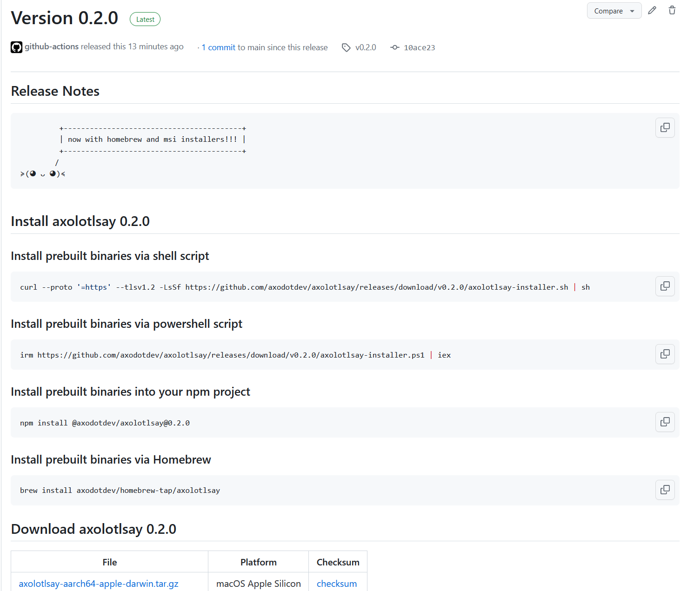
Or if you're using oranda, you'll get this website:
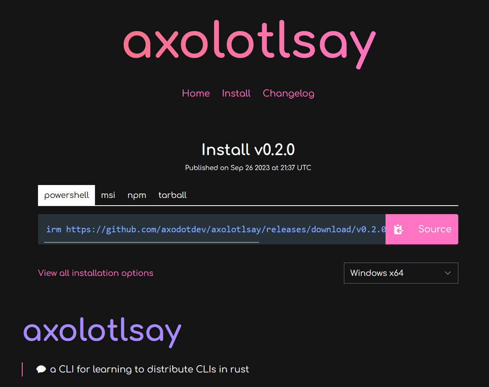
Plan, Build, Host, Publish, Announce
Cutting releases of your apps and distributing binaries for them has a lot of steps, and dist is quickly growing to try to cover them all!
To accomplish this, dist functionality can be broken up into two parts:
- building (planning the release; building binaries and installers)
- distributing (hosting artifacts; publishing packages; announcing releases)
The build functionality can be used on its own if you just want some tarballs and installers, but everything really comes together when you use the distribution functionality too.
Building
As a build tool, dist can do the following:
- Pick good build flags for "shippable binaries"
- Make tarballs and installers for the resulting binaries
- Generate machine-readable manifests so other tools can understand the results
That's a short list because "we make installers" is doing a lot of heavy lifting. Each installer could be (and sometimes is!) an entire standalone tool with its own documentation and ecosystem.
Distributing
As a distribution tool, dist gets to flex its biggest superpower: it generates its own CI scripts. For instance, enabling GitHub CI with dist init will generate release.yml, which implements the full pipeline of plan, build, host, publish, announce:
- Plan
- Waits for you to push a git tag for a new version (v1.0.0, my-app-1.0.0...)
- Selects what apps in your workspace to announce new releases for based on that tag
- Generates a machine-readable manifest with changelogs and build plans
- Build
- Spins up machines for each platform you support
- Builds your binaries and tarballs
- Builds installers for your binaries
- Publish:
- Uploads to package managers
- Host + Announce:
- Creates (or edits and undrafts) a GitHub Release
- Uploads build artifacts to the Release
- Adds relevant release notes from your RELEASES/CHANGELOG
(Ideally "host" would come cleanly before "publish", but GitHub Releases doesn't really properly support this kind of staging, so we're forced to race the steps a bit here. Future work may provide a more robust release process.)
Most of the scripts roughly amount to "install dist", "run it exactly once", "upload the artifacts it reported". We want you to be able to copy that one dist invocation CI did, run it on your machine, and get the same results without any fuss (not to bit-level precision, but to the kinds of precision normal people expect from cargo builds). No setting up docker, no weird linux-only shell scripts that assume a bunch of tools were setup in earlier CI steps.
Of course even if we perfectly achieve this ideal, "you can run it locally" and "you want to run it locally" are different statements.
Check Your Release Process Early And Often
To that point, release.yml can now run partially in pull-requests. The default is to only run the "plan" step, which includes many integrity checks to help prevent "oops the release process is broken and we only found out when we tried to cut a release".
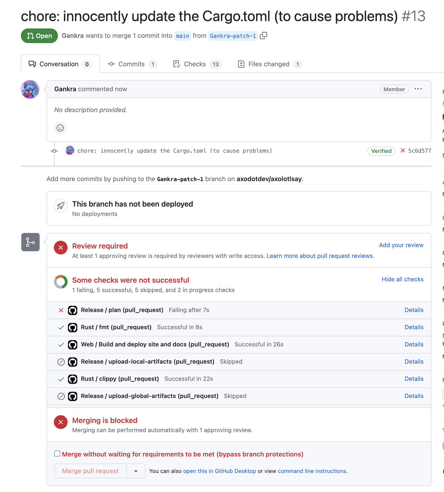
You can also crank the pull-request mode up to include the "build" step, in which case the PR Workflow Summary will include an artifacts.zip containing all the build results. We don't recommend keeping this on all the time (it's slow and wasteful), but it can be useful to temporarily turn on while testing a PR.
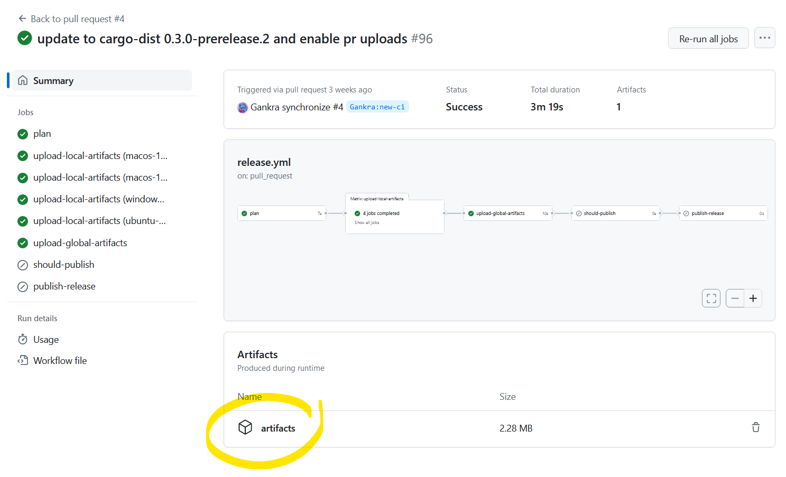
Install
Surprise! The tool for prebuilt shippable binaries has way too many ways to install it!
Whichever way you choose to install it, it should be invocable as dist ....
Pre-built binaries
We provide several options to access pre-built binaries for a variety of platforms. If you would like to manually download a pre-built binary, checkout the latest release on GitHub.
The package names all currently use the original name, cargo-dist. In the future, some or all of these packages will be renamed to just dist.
Installer scripts
macOS and Linux (not NixOS):
curl --proto '=https' --tlsv1.2 -LsSf https://github.com/axodotdev/cargo-dist/releases/latest/download/cargo-dist-installer.sh | sh
Windows PowerShell:
powershell -c "irm https://github.com/axodotdev/cargo-dist/releases/latest/download/cargo-dist-installer.ps1 | iex"
Package managers
Homebrew
brew install axodotdev/tap/cargo-dist
Pacman (Arch Linux)
Arch Linux users can install the cargo-dist package from the extra repository using pacman:
pacman -S cargo-dist
Nix (NixOS, macOS)
Nix users can install cargo-dist from the main nixpkgs repository:
nix-env -i cargo-dist
Other Options
cargo-binstall
cargo binstall cargo-dist
Build From Source
For users who need to install dist on platforms that we do not yet provide pre-built binaries for, you will need to build from source.
dist is written in Rust and uses cargo to build. Once you've installed the Rust toolchain (rustup), run:
cargo install cargo-dist --locked
Quickstart
What you need to do to setup your project with dist depends on the language your project is written in, so choose your own adventure!
Rust Quickstart
TLDR: dist is a souped up version of
cargo buildwhich handles building tarballs and installers. It also knows how to generate Github CI for orchestrating itself and uploading its output to a new GitHub Release.This quickstart is a bit too quick because there's some important nuances to "announcing and building releases" that depend on the way you like to structure and version your workspace. We will blatantly ignore those nuances and show you the Happiest Happy Path (a workspace with one crate that defines a binary). Checkout the workspace guide for more details on what you should actually do.
Setup
Setting up just requires you to install dist and then run dist init in your Cargo workspace. This command interactively walks you through configuration options, and should be run again whenever you want to change your settings or want to update dist.
Just to really emphasize that: dist init is designed to be rerun over and over, and will preserve your settings while handling any necessary updates and migrations. Always Be Initing.
Initial Setup
Since this is a quickstart, we'll pass --yes to auto-accept all defaults on our first setup!
# setup dist in your project (--yes to accept defaults)
dist init --yes
git add .
git commit -am 'chore: wow shiny new dist CI!'
It's very common for dist init to return an error about the "repository" URLs set in your Cargo.toml. If this happens, no work will be lost. You can just follow the instructions in the error and rerun dist init again and it will pick up where you left off.**
This one-time setup will:
- create your dist config in
Cargo.toml - add a shippable build profile to your
Cargo.toml - generate CI for orchestrating itself in
.github/workflows/release.yml
Adding Installers
The most common reason to update dist or mess with its config is to add a new installer, which is basically our blanket term for anything more fancy than tarballs (curl-sh scripts, npm packages, msi installers, ...).
You can skip this step for now and just test out the basics the initial setup gives you. Each individual installer should have a guide that assumes you did the initial setup.
The tl;dr of those guides is "run dist init again, select the installer you want to add, and fill in any extra details that are needed".
Test It Out
There are a several ways to test out dist before committing to running a proper release:
- build for the current platform (
dist build) - check what CI will build (
dist plan) - check the release process on pull-requests
Build For The Current Platform
dist build

The build command will by default try to build things for the computer you're running it on. So if you run it on linux you might get a tar.xz containing your binary and an installer.sh, but if you run it on windows you might get a zip and an installer.ps1.
dist will then spit out paths to the files it created, so you can inspect their contents and try running them (note that installer scripts probably won't be locally runnable, because they will try to fetch their binaries from GitHub).
Check What CI Will Build
dist plan

The plan command should be running the exact same logic that dist's generated CI will run, but without actually building anything. This lets you quickly check what cutting a new release will produce. It will also try to catch any inconsistencies that could make the CI error out.
Check The Release Process On Pull-Requests
By default we run the "plan" step of your release CI on every pull-request so that we can catch breakage to your release process as early as possible. This will work even for a pull-request that sets up dist for the first time, so you can be confident you're landing something that works.
You can also crank this up by setting pr-run-mode = "upload", which will run all the build steps as well, and upload the results to the PR's Workflow Summary as an "artifacts.zip". This is great for making sure the windows build works even if you only have a linux machine, or vice-versa. Although you should probably only keep it on temporarily, as it's very slow and wasteful to build all those shippable artifacts for every PR.
Cut A Release (Trigger Github CI)
dist largely doesn't care about the details of how you prepare your release, and doesn't yet provide tools to streamline it. All it cares about is you getting your release branch into the state you want, and then pushing a properly formatted git tag like "v0.1.0". Here's a super bare-bones release process where we're releasing by just pushing a bunch of stuff to main branch (but it would work just as well with PRs and release branches):
# <manually update the version of your crate, run tests, etc>
# commit and push to main (can be done with a PR)
git commit -am "release: version 0.1.0"
git push
# actually push the tag up (this triggers dist's CI)
git tag v0.1.0
git push --tags
# publish to crates.io (optional)
cargo publish
The important parts are that you update the crates you want to release/announce to the desired version and push a git tag with that version.
At this point you're done! The generated CI script should pick up the ball and create a Github Release with all your builds over the next few minutes!
JavaScript Quickstart
So you've written a JavaScript CLI application and you'd like to distribute standalone executables so your users don't need to install nodejs or npm, without having to write your own CI or installers? Well, good news, dist can do just that! This guide will help you get up and running as quickly as possible.
Initial dist Setup
🔧 This feature requires some extra setup that will be builtin in the future, please let us know if it doesn't work for you!
This is based on the axolotlsay-bun example project.
Preparing Your JS Project
We will be using bun build --compile to generate standalone executables for an npm project. In the future this will be more builtin, but for now we're going to need to teach your npm package to install bun and build itself. To do this we're going to add bun as a dev-dependency of our application and add a "dist" npm script that runs bun build on itself.
Here's what the changes look like in axolotlsay-bun.
Adding Bun As A Dev Dependency
To make it easy for anyone working on our package to get the Right version of bun and use it, we can install it as an npm dev-dependency like so:
npm i bun --save-dev
Your package.json should now have something like this:
"devDependencies": {
"bun": "^1.x.x"
}
Adding A dist Script
We want it to be easy for anyone to run our bun build on any platform, so add a script called "dist" to our package.json:
"scripts": {
"predist": "npm install",
"dist": "node dist.js"
},
We run npm install in "predist" to ensure dev-dependencies like bun are installed for anyone who runs the "dist" script. The name "dist" here is important, as dist will be looking for it. However the file it runs can have any name/location. Here we're calling it "dist.js", and it contains the following:
// you might need to change this path to your package.json
const { bin } = require("./package.json");
const execSync = require('child_process').execSync;
// Compute the target we're building for
const bunTargets = {
"x86_64-pc-windows-msvc": "bun-windows-x64",
"aarch64-apple-darwin": "bun-darwin-arm64",
"x86_64-apple-darwin": "bun-darwin-x64",
"aarch64-unknown-linux-gnu": "bun-linux-arm64",
"x86_64-unknown-linux-gnu": "bun-linux-x64"
}
const distTarget = process.env.CARGO_DIST_TARGET || process.env.DIST_TARGET;
if (!distTarget) {
throw "DIST_TARGET isn't set, so we don't know what platform to build!"
}
const bunTarget = bunTargets[distTarget];
if (!bunTarget) {
throw `To the the best of our knowledge, bun does not support building for ${distTarget}`;
}
const binExt = distTarget.includes("windows") ? ".exe" : "";
// setup bun
execSync("bun install");
// for each binary, run bun
for (binName of Object.keys(bin)) {
const binScript = bin[binName];
const binPath = `${binName}${binExt}`;
execSync(`bun build ${binScript} --compile --target ${bunTarget} --outfile ${binPath}`);
}
Ideally you won't have to customize this script at all (except maybe the relative path to package.json on the first line), because it reads your package.json and determines what to do for you. In particular it requires you to have a "bin" field in your package.json:
"bin": {
"axolotlsay-bun": "index.js"
},
While you're here, you should also make sure you've set required fields like:
- "name"
- "version"
- "repository" set
So your package.json should at a minimum look something like this:
{
"name": "axolotlsay-bun",
"version": "0.4.0",
"repository": "github:axodotdev/axolotlsay-hybrid",
"bin": {
"axolotlsay-bun": "index.js"
},
"scripts": {
"predist": "npm install",
"dist": "node dist.js"
},
"devDependencies": {
"bun": "^1.x.x"
}
}
Adding dist-workspace.toml
dist uses a custom configuration format called dist-workspace.toml, written in the TOML format. dist can manage most of your settings for you, or find them in your package.json, but we need to tell it that we're making a JS project.
Create a file named dist-workspace.toml in the root of your repository. These are the entire contents of the file (you supply the path):
[workspace]
members = ["npm:relative/path/to/your/package/"]
(If your project is in the root, this may just be members = ["npm:./"])
First Init
Once you've done that and also installed dist, we can ask dist to generate the rest of its configuration for us: just run dist init, and answer all the questions it asks you. This command interactively walks you through configuration options, and should be run again whenever you want to change your settings or want to update dist.
Just to really emphasize that: dist init is designed to be rerun over and over, and will preserve your settings while handling any necessary updates and migrations. Always Be Initing.
Since this is a quickstart, we'll pass --yes to auto-accept all defaults on our first setup!
# setup dist in your project (--yes to accept defaults)
dist init --yes
git add .
git commit -am 'chore: wow shiny new dist CI!'
It's very common for dist init to return an error about the "repository" URLs set in your package.json. If this happens, no work will be lost. You can just follow the instructions in the error and rerun dist init again and it will pick up where you left off.**
This one-time setup will:
- create your dist config in
dist-workspace.toml - generate CI for orchestrating itself in
.github/workflows/release.yml
Adding Installers
🚨🚨🚨 VERY IMPORTANT 🚨🚨🚨
dist supports "npm installers" and "npm publishes" but these refer to a feature that wraps your prebuilt binaries in an npm package that fetches them, and is not (YET) a thing for actual native javascript projects!
The most common reason to update dist or mess with its config is to add a new installer, which is basically our blanket term for anything more fancy than tarballs (curl-sh scripts, npm packages, msi installers, ...).
You can skip this step for now and just test out the basics the initial setup gives you. Each individual installer should have a guide that assumes you did the initial setup.
The tl;dr of those guides is "run dist init again, select the installer you want to add, and fill in any extra details that are needed".
Test It Out
There are a several ways to test out dist before committing to running a proper release:
- build for the current platform (
dist build) - check what CI will build (
dist plan) - check the release process on pull-requests
Build For The Current Platform
dist build
The build command will by default try to build things for the computer you're running it on. So if you run it on linux you might get a tar.xz containing your binary and an installer.sh, but if you run it on windows you might get a zip and an installer.ps1.
dist will then spit out paths to the files it created, so you can inspect their contents and try running them (note that installer scripts probably won't be locally runnable, because they will try to fetch their binaries from GitHub).
Check What CI Will Build
dist plan
The plan command should be running the exact same logic that dist's generated CI will run, but without actually building anything. This lets you quickly check what cutting a new release will produce. It will also try to catch any inconsistencies that could make the CI error out.
Check The Release Process On Pull-Requests
By default we run the "plan" step of your release CI on every pull-request so that we can catch breakage to your release process as early as possible. This will work even for a pull-request that sets up dist for the first time, so you can be confident you're landing something that works.
You can also crank this up by setting pr-run-mode = "upload", which will run all the build steps as well, and upload the results to the PR's Workflow Summary as an "artifacts.zip". This is great for making sure the windows build works even if you only have a linux machine, or vice-versa. Although you should probably only keep it on temporarily, as it's very slow and wasteful to build all those shippable artifacts for every PR.
Cut A Release (Trigger Github CI)
dist largely doesn't care about the details of how you prepare your release, and doesn't yet provide tools to streamline it. All it cares about is you getting your release branch into the state you want, and then pushing a properly formatted git tag like "v0.1.0". Here's a super bare-bones release process where we're releasing by just pushing a bunch of stuff to main branch (but it would work just as well with PRs and release branches):
# <manually update the version of your package, run tests, etc>
# commit and push to main (can be done with a PR)
git commit -am "release: version 0.1.0"
git push
# actually push the tag up (this triggers dist's CI)
git tag v0.1.0
git push --tags
The important parts are that you update the packages you want to release/announce to the desired version and push a git tag with that version.
At this point you're done! The generated CI script should pick up the ball and create a Github Release with all your builds over the next few minutes!
Everyone Else Quickstart
So you've written a piece of software and you'd like to distribute it, but managing CI and installers is hard. dist's generic build support lets you access all the same building and distribution features you get from Cargo-based builds in any language. This guide will help you get up and running as quickly as possible.
Setup
Once you've installed dist, you're ready to get started. Prepping your app for dist requires just a little bit of configuration.
dist uses a custom configuration format called dist.toml, written in the TOML format. dist can manage most of your settings for you, but we'll need to write a little bit of information to tell dist about your software and what it needs to expect.
To start, create a file named dist.toml in the root of your repository. The top of the file needs a field named [package] containing some basic metadata about your project, which looks like this:
[package]
# The name of your package; dist will use this in your installers and announcements
name = "quickstart-example"
# (Optional) Descriptive text about your package; some installers will present this to users
description = "This is a description of your package"
# The current version of your package - you'll update this with every release
version = "1.0.0"
# (Optional) Your package's license
license = "GPL-3.0-only"
# The URL to package's git repository
repository = "https://github.com/example/example"
# A list of all binaries your package will build and install
binaries = ["quickstart-example"]
# A command dist should run that will build your project
build-command = ["make"]
Once you've created this file, we can ask dist to generate the rest of its configuration for us: just run dist init, and answer all the questions it asks you. This command interactively walks you through configuration options, and should be run again whenever you want to change your settings or want to update dist.
Just to really emphasize that: dist init is designed to be rerun over and over, and will preserve your settings while handling any necessary updates and migrations. Always Be Initing.
Initial Setup
Since this is a quickstart, we'll pass --yes to auto-accept all defaults on our first setup!
# setup dist in your project (--yes to accept defaults)
dist init --yes
git add .
git commit -am 'chore: wow shiny new dist CI!'
It's very common for dist init to return an error about the "repository" URLs set in your Cargo.toml. If this happens, no work will be lost. You can just follow the instructions in the error and rerun dist init again and it will pick up where you left off.**
This one-time setup will:
- create your dist config in
dist.toml - generate CI for orchestrating itself in
.github/workflows/release.yml
Once you've run init, check your dist.toml: dist has added a bunch of new settings with all the choices you made. If you chose to turn on GitHub CI, you'll also see that it's created a .github/workflows/release.yml for you: this will be run every time you create a release of your software.
Adding Installers
The most common reason to update dist or mess with its config is to add a new installer, which is basically our blanket term for anything more fancy than tarballs (curl-sh scripts, npm packages, msi installers, ...).
You can skip this step for now and just test out the basics the initial setup gives you. Each individual installer should have a guide that assumes you did the initial setup.
The tl;dr of those guides is "run dist init again, select the installer you want to add, and fill in any extra details that are needed".
Test It Out
There are a several ways to test out dist before committing to running a proper release:
- build for the current platform (
dist build) - check what CI will build (
dist plan) - check the release process on pull-requests
Build For The Current Platform
dist build
The build command will by default try to build things for the computer you're running it on. So if you run it on linux you might get a tar.xz containing your binary and an installer.sh, but if you run it on windows you might get a zip and an installer.ps1.
dist will then spit out paths to the files it created, so you can inspect their contents and try running them (note that installer scripts probably won't be locally runnable, because they will try to fetch their binaries from GitHub).
Check What CI Will Build
dist plan
The plan command should be running the exact same logic that dist's generated CI will run, but without actually building anything. This lets you quickly check what cutting a new release will produce. It will also try to catch any inconsistencies that could make the CI error out.
Check The Release Process On Pull-Requests
By default we run the "plan" step of your release CI on every pull-request so that we can catch breakage to your release process as early as possible. This will work even for a pull-request that sets up dist for the first time, so you can be confident you're landing something that works.
You can also crank this up by setting pr-run-mode = "upload", which will run all the build steps as well, and upload the results to the PR's Workflow Summary as an "artifacts.zip". This is great for making sure the windows build works even if you only have a linux machine, or vice-versa. Although you should probably only keep it on temporarily, as it's very slow and wasteful to build all those shippable artifacts for every PR.
Cut A Release (Trigger Github CI)
dist largely doesn't care about the details of how you prepare your release, and doesn't yet provide tools to streamline it. All it cares about is you getting your release branch into the state you want, updating the version number in dist.toml, and then pushing a properly formatted git tag like "v0.1.0". Here's a super bare-bones release process where we're releasing by just pushing a bunch of stuff to main branch (but it would work just as well with PRs and release branches):
# <manually update the version of your package, run tests, etc>
# <make sure to set the package version in dist.toml, too>
# commit and push to main (can be done with a PR)
git commit -am "release: version 0.1.0"
git push
# actually push the tag up (this triggers dist's CI)
git tag v0.1.0
git push --tags
The important parts are that you update the crates you want to release/announce to the desired version and push a git tag with that version.
At this point you're done! The generated CI script should pick up the ball and create a Github Release with all your builds over the next few minutes!
More details
For more details on configuring builds and other advanced features, see the custom builds page. For more details on all of the supported fields in dist.toml, see the config page.
Updating
Just
dist init
That's it!
Rerun init as much as you want, it should always preserve your old settings, and should never break anything (if it does, it's a bug!).
If you have a project with dist setup on it, and want to upgrade to a new version, all you should ever need to do is locally install the new version of dist and run dist init.
If you're simply adjusting your dist config, you should also rerun dist init to potentially get informed of new features/constraints your change runs into. It also ensures that things like your ci.yml are updated to reflect your new config. Basically every other dist command should error out if you have to rerun init, so you won't get far if you don't.
We recommend running without -y for reruns, because this is the chance dist has to tell you about new features, or additional configuration that pairs with any adjustments you may have made. It will take that chance to ask you if you want to enable the feature or change the default value.
In general the init command is designed to do incremental updates to your installation, and "first setup" is just a special case of this, where every incremental update is applicable.
The command usually uses the absence of a setting in your config to determine if a feature has been setup before. As such, even though dist generally has default values for every piece of config, init will aggressively write the default back to your config to let future invocations know they don't need to ask about it.
Which also means if you missed a prompt or want to reconfigure a feature, deleting the relevant setting from your config and rerunning init should work.
There are two settings that init will always prompt you for:
- what platforms do you want to build for
- what installers do you want to have
So if you ever want to add a new platform or installer, rerunning dist init is a great way to do that -- and then it can ask followup questions if you turn on a new installer!
Troubleshooting
Having an issue with dist? Here's some of the common issues and solutions!
- What We Would Usually Do
- Nothing To Release / Missing Packages / Too Many Packages
- Recovering Failed CI Jobs
- Oops, My Changelog!
- Repository URLs / Source Hosts / Hosting Providers
- The Protip Zone
What We Would Usually Do
Regardless of the issue, these are the "default" troubleshooting steps that are good to keep in mind:
- diagnose: run
dist plan - update and repair: run
dist initagain - test your process: try
pr-run-mode = "upload"
These are also great steps to follow proactively, if you're updating your dist config.
Nothing To Release / Missing Packages / Too Many Packages
dist tries to support as many release workflows as possible, and that means it needs you to tell it what you're interested in releasing. There are several ways to opt things in and out of being released; the most important are:
- git tag formats
- git tags select which packages you're interested in doing a release for
- do all the packages you want to publish have the same version as your git tag?
- are you prefixing the tag with something that looks like a package name?
[package].publish- tells cargo whether the package should be published to crates.io
- dist assumes you don't want to release
publish = falsepackages (since they're probably for testing)
[package.metadata.dist].dist- overrides
publishfor dist releases, either to force a package on or off
- overrides
Recovering Failed CI Jobs
Sometimes CI fails, and that's ok! The steps to follow depend on what went wrong. There's little that can't be recovered, you've got this.
Failed CI: Spurious
If you believe the failure was spurious (Github CI flaking out, some networked service being temporarily down, a SECRET not being set...), then good news: it's totally safe to "retry failed jobs" in the Github CI interface! We should pick up your release process from where it left off.
We DO NOT recommend "retry all jobs". Either it's redundant or it can cause problems with trying to repeat side-effects like publishing a package.
Failed CI: Busted Builds
If you believe something was busted in your release process, and the commit you tried to release from isn't suitable, that's generally ok! Usually this will occur because some part of your build is broken, perhaps only when releasing with dist, or only on a particular platform.
If this is the case then presumably your release process errored out before the the "host" step where we actually uploaded anything, so good news: no side effects need to be rolled back!
Well, one side-effect needs to be dealt with, but it's the one you did to kick off the release: delete the git tag from github and your local machine, get your build sorted out, and then tag the new release commit.
"Get your build sorted out" is of course, eliding a lot of details. If the issue appears to be exclusive to dist CI, we recommend opening a PR against your project with pr-run-mode = "upload" temporarily enabled. This will run all of the build steps for your release process without you needing to push a git tag, so you're free to experiment and rapidly iterate without any risk of side-effects.
Oops, My Changelog!
Changelogs are arguably the most important and challenging part of a release process. Although dist currently has no way to Do Changelogs For You, it does have several features for Using Your Changelogs:
- Having dist parse your RELEASES or CHANGELOG file
- Telling dist you're bringing your own changelogs with tools like release-drafter
The latter will just have dist not clobber the changelogs you upload to Github Releases, and is therefore easy to fix: just hand-edit your Github Release more.
The former is more challenging to fix, and is a place we're trying to improve. dist will natively understand your changelogs and bake them into a few different things:
- The changelog will be sent to your release hosting providers (github and/or axo) as part of the announcement
- The changelog will be stored in the dist-manifest.json
- Which will in turn get used by oranda, if you're using that
This is to say, trying to hand-edit your way out of this situation requires you to find and fix a lot of data if you Really Want A Perfect Changelog. In some cases we've found it simpler to just redo the whole release process (either by deleting a Github Release or bumping the version number).
Repository URLs / Source Hosts / Hosting Providers
Many features of dist depend on the ability to know where your project is hosted, and where the build results will get uploaded. The most common issue users encounter here is not having a defined Source Host, which basically just means you need to audit the [package].repository values you set in your Cargo.tomls and make sure they consistently point to your GitHub repo. See the Source Host docs for details.
The Protip Zone
Sometimes users run into issues that are quickly resolved by "I had no idea Rust let you do that", so here's some quick pointers to useful Rust/Cargo/Rustup features (and a promise that we handle them properly):
- rust-toolchain.toml exists to tell rustup your project should be built with a specific version of Rust
- the
[[bin]]section of a Cargo.toml lets a single package have multiple binaries, or to rename the only binary publish = falselets you tell Cargo not to publish a package- Cargo packages can inherit keys from the workspace package to keep things in sync
Custom Builds
since 0.5.0
When releasing software in languages other than Rust or JavaScript, you'll need to tell dist how to build it — there are more buildsystems than stars in the sky, and dist can't know how to run all of them (or how to figure out what to release from them).
This guide assumes you've already initialized the dist config; check the quickstart guide for how to get started.
Examples
Understanding build commands
Build commands are the core difference between these builds and Rust builds. Since we don't have Cargo to rely on to tell us how to build your package, it's up to you to tell us how instead.
As an example, let's imagine a C program with a simple makefile-based buildsystem. Its dist.toml looks something like this:
[package]
# Your app's name
name = "my_app"
# The current version; make sure to keep this up to date!
version = "0.1.0"
# The URL to the git repository; this is used for publishing releases
repository = "https://github.com/example/example"
# The executables produced by your app
binaries = ["main"]
# The build command dist runs to produce those binaries
build-command = ["make"]
All you need to run to build this program is make, so we specified build-command = ["make"]. If your app has a more complex build that will require multiple commands to run, it may be easier for you to add a build script to your repository. In that case, build-command can simply be a reference to executing it:
build-command = ["./build.sh"]
We expose a special environment variable called CARGO_DIST_TARGET into your build. It contains a Rust-style target triple for the platform we expect your build to build for. Depending on the language of the software you're building, you may need to use this to set appropriate cross-compilation flags. For example, when dist is building for an Apple Silicon Mac, we'll set aarch64-apple-darwin in order to allow your build to know when it should build for aarch64 even if the host is x86_64.
On macOS, we expose several additional environment variables to help your buildsystem find dependencies. In the future, we may add more environment variables on all platforms.
CFLAGS/CPPFLAGS: Flags used by the C preprocessor and C compiler while building.LDFLAGS: Flags used by the C linker.PKG_CONFIG_PATH/PKG_CONFIG_LIBDIR: Paths forpkg-configto help it locate packages.CMAKE_INCLUDE_PATH/CMAKE_LIBRARY_PATH: Paths forcmaketo help it locate packages' configuration files.
Supply-chain security
As software supplychain security concerns and requirements grow, dist is
committed to making compliance with policies and regulations as turnkey as possible.
If you have an integration you are looking for file an issue or join our Discord.
Signing
- Windows Codesigning
- 🔜 macOS Codesigning
- 🔜 Linux Codesigning
- 🔜 Sigstore Signing
- 🔜 Windows Trusted Signing
Attestation
SBOMs and Dependency Managers
cargo-cyclonedx
dist can optionally generate a CycloneDX-format Software Bill of Materials (SBOM) for Rust projects using the cargo-cyclonedx tool. This data is stored as a standalone bom.xml file which is distributed alongside your binaries in your tarballs. Users can validate that SBOM file using any compatible CycloneDX tool. For more information about using this feature, see the config documentation.
cargo-auditable
cargo-auditable can optionally be used to embed dependency information into your Rust binaries, making it possible for users to check your binaries for the full dependency tree they were built from along with their precise versions. This information can then be checked later to scan your binary for any known vulnerabilities using the cargo-audit tool. For more information about using this feature, see the config documentation.
Software identification
dist can optionally generate an OmniBOR artifact ID for software artifacts using the omnibor-cli tool. These identifiers are reproducible and unique to a specific version of your software. For more information about using this feature, see the config documentation.
Windows Artifact Signing with SSL.com Certificates
since 0.15.0
dist can automatically codesign Windows EXEs and MSIs using SSL.com's eSigner cloud signing service.
Although there are many ways to do code signing, this process is specifically concerned with ensuring Windows SmartScreen recognizes the authenticity of the signatures and doesn't prevent your users from running the application. Otherwise, any user who downloads your application with a web browser will get a popup warning them against running it. (Alternative methods of downloading and installing, such as dist's powershell installers do not trigger SmartScreen.)
Windows code signing is done using essentially the same certificate infrastructure as HTTPS, just with stricter requirements on issuance and management of the private keys. In principle this means you can go to your favourite SSL/TLS Certificate vendor and ask for an EV Code Signing Certificate and follow the same process regardless of which vendor you picked. However as of July 2023, all the relevant kinds of code signing certificates can only be issued via hardware security modules (HSMs) like Yubikeys. This poses a significant challenge for CI/CD pipelines, because you can't just plug a USB key into GitHub CI.
Although this will hopefully improve in the future, for now this has resulted in a fragmented system where each certificate vendor has its own cloud signing service where they host the HSMs and you send them the things you want signed. As a result it's no longer possible to provide a reasonable generic Windows code signing workflow, so for now we've made ours specific to one vendor: SSL.com.
Want support for another vendor? Drop us a line or file an issue.
Quickstart
Part 1: Create an SSL.com certificate (real or sandbox)
-
Make an account and order your certificate
Go to https://ssl.com/ (or https://sandbox.ssl.com for the testing sandbox) and log into your account. Then go to "Dashboard > developer tools", and order "ESIGNER EV CODE SIGNING (360)".
If you are using a sandbox account, you may need to email support several times to have your test certificate validated and issued. The resulting certificate and signatures won't be trusted by Windows, but you can at least test things before buying a certificate.
-
Enroll in eSigner Cloud Signing
Go to "Orders > documents > certificate details": You should see a prompt to a enter and confirm a PIN to setup an OTP login.
BE SURE TO SAVE THE TOTP SECRET CODE THAT APPEARS UNDER THE QR CODE FOR YOUR OTP APP, YOUR CI WILL NEED THIS.
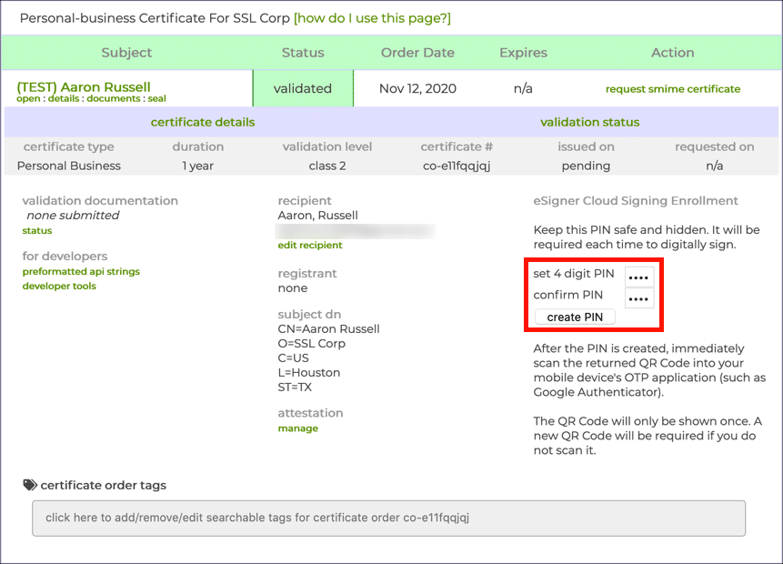
-
Get your credential ID
On the same page as the previous step open "signing credentials" and copy the "eSigner credential ID". The credential ID will be used in CI to identify which certificate to use.

-
(optional) Disable malware blocker
In the same "signing credentials" section as the previous step, you may want to disable the "malware blocker".
SSL.com's cloud signing provides an optional malware checking service which you may want to disable in your account settings. The purpose of this feature is to mitigate the risk of your infrastructure being compromised and being used to sign malware, by essentially giving SSL.com permission to refuse to sign suspicious-looking binaries.
When publishing from environments like GitHub CI, there isn't much room for such a compromise to occur that wouldn't just compromise your SSL.com account anyway, so the benefits are unclear compared to the risk of your releases randomly failing due to a false positive.
-
Add GitHub Secrets to your repository
SSLDOTCOM_USERNAME: the username of your ssl.com accountSSLDOTCOM_PASSWORD: the password to your ssl.com accountSSLDOTCOM_TOTP_SECRET: this is the totp "secret code" from Step 2SSLDOTCOM_CREDENTIAL_ID: this is the "credential id" from Step 3
For reference, the SSL.com documentation for their official GitHub Action uses the names: ES_USERNAME, ES_PASSWORD, ES_TOTP_SECRET, and CREDENTIAL_ID for these values. The “ES” stands for “esign”. We renamed these variables to make them more specific and clear.
Part 2: Enable SSL.com signing with dist
-
Configure dist to codesign
Add the following to your
Cargo.tomlordist.toml:[workspace.metadata.dist] ssldotcom-windows-sign = "prod" # or "test" if you are using a sandbox account -
Run
dist initon your projectYou've already fully configured the feature, we're just ensuring your config changes are applied and checked.
-
You're done!
The simplest way to test your signing out is to cut a (pre)release, but you can also build the artifacts in a pull request.
If everything worked, all windows binaries and MSIs should now be signed with your certificate. If you used real certificates, you can test this by downloading the windows .zip for your app with your browser and double-clicking it in your file explorer. If you get no message that "Windows protected your PC", it worked!
If you used a sandbox (test) certificate, SmartScreen won't acknowledge the code signing at all, but you should be able to see a "Digital Signatures" entry in the properties of the file:
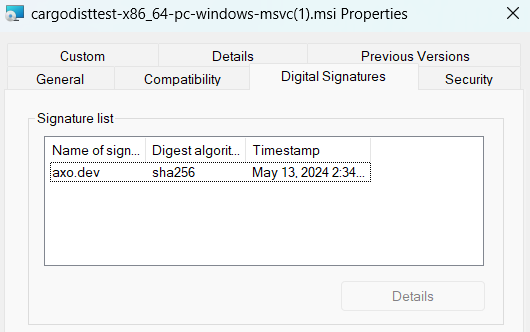
GitHub Artifact Attestations
GitHub's Artifact Attestations feature - currently in public beta - allows for the creation of a tamper-proof, unforgeable paper trail linking build artifacts to the process which created it. Artifact Attestations is powered by Sigstore, an open source project for signing and verifying software artifacts.
Artifact Attestations is disabled by default in dist, and can be enabled by setting github-attestations = true
Note that GitHub's Artifact Attestations only supports public repositories and private repositories of an organization with the GitHub Enterprise plan. In the case of public repositories, attestations generated by GitHub Actions will be written to the Sigstore Public Good Instance and end up on Rekor, Sigstore's immutable ledger, for public verification.
Currently, verification of GitHub Artifact Attestations is only supported via GitHub CLI with gh attestation verify.
The phase in which attestations occur can be configured using the github-attestations-phase setting. By default, attestations occur during the build-local-artifacts phase. This can be changed to the host or announce phase, which is particularly useful when build-local-artifacts is set to false.
When performing attestations in the host or announce phase, you can control what gets attested by using the github-attestations-filters setting.
This setting yields the following attestation step by default:
- name: Attest
uses: actions/attest-build-provenance@v2
with:
subject-path: |
artifacts/*
When set to a different set of values such as github-attestations-filters = ["*.json", "*.sh", "*.ps1", "*.zip", "*.tar.gz"] it yields:
- name: Attest
uses: actions/attest-build-provenance@v2
with:
subject-path: |
artifacts/*.json
artifacts/*.sh
artifacts/*.ps1
artifacts/*.zip
artifacts/*.tar.gz
Installers
The core functionality of dist is to build your binaries and produce tarballs / zips containing them. Basically every other kind of output it produces is considered an "installer" that helps download/install/run those binaries.
Note that we use the term "installer" very loosely -- if it's fancier than a tarball, it's an installer to us!
Supported Installers
Currently supported installers include:
- shell: a shell script that fetches and installs executables (for
curl | sh) - powershell: a powershell script that fetches and installs executables (for
irm | iex) - npm: an npm project that fetches and runs executables (for
npx) - homebrew: a Homebrew formula that fetches and installs executables
- msi: a Windows msi that bundles and installs executables
These keys can be specified via installer in your dist config. The dist init command provides an interactive UI for enabling/disabling them.
The above installers can have one of two strategies: fetching and bundling (defined below). Currently each installer is hardcoded to one particular strategy, but in the future we may make it configurable.
Future Installers
The following installers have been requested, and we're open to supporting them, but we have no specific timeline for when they will be implemented. Providing additional info/feedback on them helps us prioritize the work:
- linux docker image containing binaries
- linux flatpak
- macOS cask
- macOS dmg / app
- pypi package
- windows winget package
Fetching Installers
Fetching installers are thin wrappers which detect the user's current platform and download and unpack the appropriate archive from a server.
In exchange for requiring a well-defined Artifact URL and an internet connection at install-time, this strategy gives you a simple and efficient way to host prebuilt binaries and make sure that all users get the same binaries regardless of how the installed your application.
Fetching installers are also easy to make "universal" (cross-platform), so your installing users don't need to care about the OS or CPU they're using -- the installer will handle that for them.
Installers which support fetching:
- shell: a shell script that fetches and installs executables (for
curl | sh) - powershell: a powershell script that fetches and installs executables (for
irm | iex) - npm: an npm project that fetches and runs executables (for
npx) - homebrew: a Homebrew formula that fetches and installs executables
Bundling Installers
Bundling installers contain the actual binaries they will install on the user's system.
These installers can work without any internet connection, which some users will demand or appreciate.
Bundling requires a fundamental compromise when it comes to "universal" (cross-platform) installers, as any installer that wants to support e.g. Intel macOS and Apple Silicon macOS will need to include both binaries, even if only one will ever be used.
For this reason all bundling installers are currently single-platform, requiring the installing user to know what platform they're on.
Installers which support bundling:
- msi: a Windows msi that bundles and installs executables
Usage
Our installers are meant to be usable as-is, without requiring any special options or configuration from the user. We do offer some optional configuration options for end users; see the usage documentation for a description of all supported options.
Shell Script Installer
since 0.0.3
The "shell" installer provides a shell script (my-app-installer.sh) which detects the current platform, fetches the best possible archive from your Artifact URL, copies the binary into your install-path, and attempts to add that path to the user's PATH (see the next section for details).
This kind of installer is ideal for bootstrapping setup on a fairly bare-bones system.
An "installer hint" will be provided that shows how to install via curl | sh, like so:
curl --proto '=https' --tlsv1.2 -LsSf https://github.com/axodotdev/cargo-dist/releases/download/v0.0.5/cargo-dist-v0.0.5-installer.sh | sh
Limitations/Caveats:
- Requires a well-defined Artifact URL
- Currently only really designed for "linux" and "macOS", and won't detect other platforms properly (and certainly won't play nice with things like nixOS).
- Cannot detect situations where musl-based builds are appropriate (static or dynamic)
- Relies on the user's installation of
tarandunzipto unpack the files - Relies on the the user's installation of
curlorwgetto fetch the files - Will throw out all files except for the binary, so the binary can't rely on assets included in the archive
- Cannot run any kind of custom install logic
In an ideal world all of these caveats improve (except for maybe relying on tar/unzip/curl/wget, that's kinda fundamental).
Adding things to PATH
Here is a more fleshed out description of how the shell installer attempts to add the install-path to the user's PATH, and the limitations of that process.
The most fundamental limitation is that installers fundamentally cannot edit the PATH of the currently running shell (it's a parent process). Only an explicit source some_file (or the more portable . some_file) can do that. As such, it benefits an installer to try to install to a directory that will already be on PATH (such as CARGO_HOME). Otherwise all we can do is prompt the user to run source themselves after the installer has run (or restart their shell to freshly source rcfiles).
The process we use to add install-path to the user's PATH is roughly the same process that rustup uses (hopefully making us harmonious with running rustup before/after one of our installer scripts). In the following description we will use $install-path as a placeholder for the path computed at install-time where the binaries get installed. Its actual value will likely look something like $HOME/.myapp or $HOME/.cargo/bin.
- we generate a shell script and write it to
$install-path/env(let's call this$env-path)- the script checks if
$install-pathis in PATH already, and prepends it if not - prepending is used to ideally override system-installed binaries, as that is assumed to be desired when explicitly installing with not-your-system-package-manager
- the
envscript will only be added if it doesn't already exist - if
install-path = "CARGO_HOME", then$env-pathwill actually be in the parent directory, mirroring the behaviour of rustup
- the script checks if
- we add
. $env-pathto$HOME/.profile- this is just a more portable version of
source $install-path/env - this line will only be added if it doesn't exist (we also check for the
sourceequivalent) - the file is created if it doesn't exist
- rustup shotgun blasts this line into many more files like .bashrc and .zshenv, while still lacking proper support for fish and other more obscure shells -- we opted to start conservative with just .profile
- this is just a more portable version of
- if
$HOME/.profilewas edited, we prompt the user tosource "$env-path"or restart their shell- although this is less portable than
. "$env-path", it's very easy to misread/miscopy the portable version (not as much of a concern for an rcfile, but an issue for humans) - hopefully folks on platforms where this matters are aware of this issue (or they can restart their shell)
- although this is less portable than
PowerShell Script Installer
since 0.0.3
This provides a powershell script (my-app-installer.ps1) which detects the current platform, fetches the best possible archive from your Artifact URL, copies the binary into your install-path, and attempts to add that path to the user's PATH (see the next section for details).
This kind of installer is ideal for bootstrapping setup on a fairly bare-bones system.
An "installer hint" will be provided that shows how to install via irm | iex (the windows equivalent of curl | sh), like so:
powershell -c "irm https://github.com/axodotdev/cargo-dist/releases/download/v0.0.5/cargo-dist-v0.0.5-installer.ps1 | iex"
Limitations/Caveats:
- Requires a well-defined Artifact URL
- Currently only really designed for "native windows", and won't detect other platforms properly
- Cannot detect situations where musl-based builds are appropriate (static or dynamic)
- Relies on the user's installation of
tarandExpand-Archiveto unpack the files - Relies on the the user's installation of
Net.Webclientto fetch the files - Will throw out all files except for the binary, so the binary can't rely on assets included in the archive
- Cannot run any kind of custom install logic
On the scale of Windows (where many people are still running Windows 7) commands like "Expand-Archive" and "tar" are in fact relatively new innovations. Any system that predates 2016 (PowerShell 5.0) certainly has no hope of working. I believe that someone running Windows 10 is basically guaranteed to work, and anything before that gets sketchier.
In an ideal world most of these caveats improve (except for maybe the requirement of PowerShell >= 5.0 which is not pleasant to push past).
Adding things to PATH
Here is a more fleshed out description of how the powershell installer attempts to add the install-path to the user's PATH, and the limitations of that process.
The most fundamental limitation is that installers fundamentally cannot edit the PATH of the currently running shell (it's a parent process). Powershell does not have an equivalent of source, so to the best of our knowledge restarting the shell is the only option (which if using Windows Terminal seems to mean opening a whole new window, tabs aren't good enough). As such, it benefits an installer to try to install to a directory that will already be on PATH (such as CARGO_HOME).
The process we use to add install-path to the user's PATH is roughly the same process that rustup uses (hopefully making us harmonious with running rustup before/after one of our installer scripts). In the following description we will use $install-path as a placeholder for the path computed at install-time where the binaries get installed. Its actual value will likely look something like C:\Users\axo\.myapp or C:\Users\.cargo\bin.
- we load from the registry
HKCU:\Environment's "Path" Item - we check if
$install-pathis contained within it already - if not, we prepend it and write the value back
- prepending is used to ideally override system-installed binaries, as that is assumed to be desired when explicitly installing with not-your-system-package-manager
- the value is written back with a
REG_EXPAND_SZdata type, which enables PATH expansion
- if we edited the registry, we prompt the user to restart their shell
- we additionally broadcast
WM_SETTINGCHANGEto running programs to ensure that environment updates are propagated. This ensures you only need to restart your shell, rather than your entire machine, for the "Path" update to be recognized.
- we additionally broadcast
npm Installer
since 0.0.6
dist can automatically build and publish npm packages for your applications. Users can install your application with an expression like npm install -g @axodotdev/axolotlsay, or immediately run it with npx @axodotdev/axolotlsay.
The npm package will fetch your prebuilt archives and install your binaries to node_modules, exposing them as commands ("bins") of the package. If the package unambiguously has one true command, then the package can be run without specifying one.
Note that this is not (yet) a feature for publishing an npm package in your workspace. The package described here is generated as part of your release process.
An "installer hint" will be provided that shows how to install via npm like so:
npm install @axodotdev/cargodisttest@0.2.0
Quickstart
To setup your npm installer you need to create an npm access token and enable the installer. This is broken up into parts because a project administrator may need to be involved in part 1, while part 2 can be done by anyone.
Part 1: Creating an npm account and optional scope and authenticating GitHub Actions
-
Create an account on npmjs.com.
-
(Optionally) If you would like to publish a "scoped" package (aka
@mycorp/pkg) you'll need to create an npm organization. -
Go to your npm account settings and create a granular access token:
- Expiration: The default is 30 days. You can pick what works for you and your team. (NOTE: If you really want a token that does not expire you can use a Classic Token but we expect that option to eventually be fully deprecated in the near future.)
- Packages and scopes: Read and write
- Select packages: All packages (NOTE: because the package does not yet exist, you must pick this. However, you can (and probably should!) update this to scope the token to a single package after publish. This is sadly a limitation of the npm token system.)
- Organizations: No access
-
Add the token as a GitHub Actions Secret called
NPM_TOKENto the repository your are publishing from.
Part 2: Enabling The npm Installer
- run
dist initon your project - when prompted to pick installers, enable "npm"
- this should trigger a prompt for your optional scope (
@axodotdev)
...that's it! If this worked, your config should now contain the following entries:
[workspace.metadata.dist]
# "..." indicates other installers you may have selected
installers = ["...", "npm", "..."]
# if you did not provide a scope, this won't be present
npm-scope = "@axodotdev"
publish-jobs = ["npm"]
Next make sure that description and homepage are set in your Cargo.toml. These
fields are optional but make for better npm packages.
[package]
description = "a CLI for learning to distribute CLIs in rust"
homepage = "https://github.com/axodotdev/axolotlsay"
Renaming npm packages
since 0.14.0
By default the name of the npm package will be the name of the package that defines it (your Cargo package). If for whatever reason you don't want that to be the case, then you can change it with the npm-package setting.
So with these settings:
[package]
name = "axolotlsay"
[package.metadata.dist]
npm-scope = "@axodotdev"
npm-package = "cli"
You'll end up publish the binaries in "axolotlsay" to an npm package called "@axodotdev/cli".
Locked dependencies
since 0.31.0
The npm package has a few module dependencies which are used to fetch your binary after the package itself is installed. By default, these dependencies are locked via an npm-shrinkwrap.json, so your end users will use the exact versions used by dist at the time the package was generated. If you prefer, you can disable npm-shrinkwrap.json so that your end users may end up using newer versions of these packages instead. For example:
[package]
name = "axolotlsay"
[package.metadata.dist]
npm-shrinkwrap = false
Homebrew Installer
since 0.2.0
dist can automatically build and publish Homebrew formulae (packages) for your application. Users can install your application with an expression like brew install axodotdev/tap/axolotlsay and automatically get updates whenever they update their Homebrew packages.
The homebrew package will fetch your prebuilt archives, and install the contents in the traditional homebrew directory structure.
Building a formula is pretty straight-forward, but publishing it requires you to create a your own Homebrew tap (package repository), because the core Homebrew tap does not accept prebuilt binaries from third parties. This sounds hard, but surprisingly it's not: you need to make a repository named "homebrew-tap" under your GitHub org or user, and get a GitHub API token to push to it. dist will manage the contents of the repo for you.
Quickstart
To setup your homebrew installer you need to create a custom tap and enable the installer. This is broken up into parts because a project administrator may need to be involved in part 1, while part 2 can be done by anyone.
Part 1: Creating A Custom Homebrew Tap
- Create a GitHub repository called "homebrew-tap" (
axodotdev/homebrew-tap) - Create a GitHub personal access token with the
reposcope - Add the token as a GitHub Secret called
HOMEBREW_TAP_TOKENto the repository you want to publish from (axodotdev/axolotlsay)
We recommend initializing the repository with a README, but otherwise the directory structure will be managed by dist, and many separate repos can publish to the same tap without issue.
A Homebrew Tap is just a GitHub repository that starts with homebrew-. Many homebrew features allow that prefix to be elided, so the package axolotlsay published in axodotdev/homebrew-tap, can be installed as axodotdev/tap/axolotlsay. Your users don't need to "register" anything to use it, custom taps are just that builtin to Homebrew.
Part 2: Enabling The Homebrew Installer
- run
dist initon your project - when prompted to pick installers, enable "homebrew"
- this should trigger a prompt for your tap (
axodotdev/homebrew-tap)
...that's it! Assuming you already setup your custom tap, as described in the previous section. If this worked, your config should now contain the following entries:
[workspace.metadata.dist]
# "..." indicates other installers you may have selected
installers = ["...", "homebrew", "..."]
tap = "axodotdev/homebrew-tap"
publish-jobs = ["homebrew"]
Next make sure that description and homepage are set in your Cargo.toml. These
fields are optional but make for better formula definitions.
[package]
description = "a CLI for learning to distribute CLIs in rust"
homepage = "https://github.com/axodotdev/axolotlsay"
Renaming Formulae
since 0.11.0
By default, your formula will be named using the app name (in Rust, this is the crate
name). If you are overriding the bin name, you may want to make your Homebrew formula
match with the formula setting:
[package]
name = "legacyname"
[[bin]]
name = "coolname"
path = "src/main.rs"
[package.metadata.dist]
formula = "coolname"
Adding Binary Aliases
since 0.14.0
If you want to install symlinked aliases for your binaries, you can do so with the bin-aliases setting.
Linuxbrew
since 0.6.0
The formulae dist builds automatically support Linux and macOS, as long as you release your application for the relevant targets.
Limitations / Caveats
There Is Only One Version
Homebrew fundamentally does not support the notion of a package having multiple published versions. There is only the latest version. If you publish a new version of a package, it will always replace the current one. This is why the publish-prereleases setting is disabled by default: otherwise publishing 2.0.0-prerelease.1 would completely obliterate 1.0.0, which presumably you'd prefer users installing.
Unfortunately if you have any kind of non-linear version history (such as doing a patch release for 1.0 after already releasing 2.0), the published Homebrew package will randomly contain whichever one you released last. The releases are just git commits though, so you can manually revert a release if you want.
Unsupported Formats
- Does not support creating a formula which builds from source
- Does not support Cask for more convenient GUI app installation
msi Installer
Since 0.3.0
This guide will walk you through setting up a bundling Windows msi installer. It assumes you've already done initial setup of dist, as described in the way-too-quickstart, and now want to add an msi to your release process.
(Just a bit of a warning, this stuff works but there's a few rough edges, please let us know if you run into any issues!)
Setup
We'll start with the bare-minimum and then explain what we did and how to modify it afterwards.
Setup Step 1: set "authors" in your Cargo.toml
msi requires you to specify a "manufacturer" for you application, which is by default sourced from the "authors" field in you Cargo.toml. If you don’t have that field set, the next step will error out. If you have an authors entry like My Cool Company <support@mycoolcompany.org> then the manufacturer will be "My Cool Company".
Setup Step 2: run init and enable "msi"
Rerun dist init and when it prompts you to choose installers, enable "msi".
Once init completes, some changes will be made to your project, check all of them in:
installers = ["msi"]will be added to[workspace.metadata.dist][package.metadata.wix]will be added to your packages with distable binaries. This is your msi-specific config. For now don't worry about it.wix/main.wxswill be created for each of your packages with distable binaries. This is a template for your msi. For now assume this file is completely managed by dist, and can't be hand-edited.
Setup Step 3: you're done! (time to test)
See the quickstart's testing guide for the various testing options.
If the above steps worked, dist plan should now include an msi for each Windows platform you support.
dist build is a bit trickier. Not only do you have to be on Windows to get an msi built, you also need to have the WiX v3 toolchain installed (WiX v4 isn't yet supported). If you don't the build will just error out. In GitHub CI the WiX v3 toolchain is pre-installed, so using PR testing is recommended.
The resulting msi should include the following functionality:
- (optional) EULA dialog
- A menu that lets you choose where to install and whether to add it to PATH
- Default install location is
%ProgramFiles%\{app_name}\(e.g.C:\Program Files\axolotlsay\) - Default is to add the install location to PATH
- Currently the only files that will be included are the app's binaries in a
binsubdir
- Default install location is
- If rerun, you will get an uninstall/reinstall menu
- If a newer version is run, it will automatically uninstall the old version
- If an older version is run, it will report that a newer version is installed and exit
- The application will appear in the Windows "Add or remove programs" menu and can be uninstalled from there
Certain licenses in your Cargo.toml like "Apache" or "MIT" (but not dual MIT/Apache) will get an auto-generated EULA that's just agreeing to the software license -- we know, that's not how software licenses work, but people seem to like to do it. See the section on advanced usage for how to set a more useful EULA.
How It Works
As you may suspect from the setup, we rely on the industry standard WiX v3 toolchain to generate your msi installers (WiX v4 isn't yet supported). The main.wxs format is its xml-based templating system. Some of the information about your app is baked into this template (binaries, descriptions, licenses...), while other information is sourced at build time (mostly the version).
If the template ever desyncs from the values it was generated from, commands like dist plan (and therefore your pull request CI) will error out and ask you to rerun dist init to regenerate it.
The values we added to [package.metadata.wix] are:
upgrade-guid = "SOME-RANDOM-GUID"(since 0.3.0)path-guid = "SOME-OTHER-RANDOM-GUID"(since 0.3.0)license = false(since 0.5.0)eula = false(since 0.5.0)
The two GUIDs are used by Windows to determine that two MSIs with different versions refer to the same application and install location, which is required for it to properly handle things like upgrades. They are persisted in your Cargo.toml to keep them stable across regenerations of main.wxs.
The license/EULA settings are there to disable the auto-license/EULA feature of cargo-wix. That feature would look at your package's license and potentially turn it into a EULA agreement. While this is a thing some folks want, most of our users aren't interested in getting their end-users to "agree to the MIT License". You can opt back into auto-EULAs by setting both of those to true (if you just delete the keys dist will keep adding them back as false).
All of the logic for generating wxs files is part of cargo-wix, which dist includes as a library. It's a great project we happily contribute to, although some TLC is still needed to make the integration perfect (some of its warnings/errors may mention its own CLI's flags, and those sure won't work if you pass them to dist). The [package.metadata.wix] config is purely cargo-wix's, see their docs for all the knobs it exposes.
Advanced Usage
There are two paths for advanced usage: managed and unmanaged. We recommend the managed approach, but the unmanaged approach is there for true power users.
Managed Advanced Usage
If you want dist to be able to keep your main.wxs consistent with the definitions in your Cargo.tomls, then all you have available is the knobs exposed in [package.metadata.wix] -- see cargo-wix's docs for details.
Unmanaged Advanced Usage
If you're not worried about keeping main.wxs consistent, then you can choose to dive deep into the full power of WiX v3 by adding allow-dirty = ["msi"] to your dist config. Once you do this dist will stop trying to update it, and won't check if it's out of date.
At that point you can make whatever hand-edits you want to main.wxs, as long as you still use the variables that cargo-wix injects into the template at build-time for things like versions and binary paths.
See WiX v3's docs for all the things their format supports.
Self-updater
since 0.12.0
NOTE: This feature is currently experimental.
Ordinarily, your users will need to visit your website and download an installer for the latest release in order to upgrade. Users who installed your software via a package manager, like Homebrew and npm, can use that package manager to upgrade to the latest release. For users of the shell and PowerShell installers, you can provide your users with a standalone installation program to upgrade more conveniently.
If you add install-updater = true to your Cargo.toml, dist's shell and PowerShell installers will include an updater program alongside your program itself. This standalone program will be installed as the name yourpackage-update, and users can simply run it to poll for new releases and have them installed. The source code for this program is open source in the axoupdater repository.
Users will interact with this updater by running the yourpackage-update command. It takes no options or arguments, and will automatically perform an upgrade without further input from the user. If your program supports custom external subcommands via the executable naming structure, like git and cargo do, then your user can also run yourpackage update. Here's a sample axolotlsay-update session as a demonstration of what your users will experience:
$ axolotlsay-update
Checking for updates...
downloading axolotlsay 0.2.114 aarch64-apple-darwin
installing to /Users/mistydemeo/.cargo/bin
axolotlsay
axolotlsay-update
everything's installed!
New release installed!
If you would prefer to handle polling for updates yourself, for example in order to incorporate it as an internal subcommand of your own software, axoupdater is available as a crate which can be used as a library within your program. More information about how to use axoupdater as a library in your own program can be found in its README and in its API documentation.
Minimum supported version checking
While dist will always fetch up to date versions of the updater when building your software, if you use axoupdater as a library then it's important to make sure that it's kept up to date to ensure compatibility. To help you test this, dist will attempt to check if the packages it's disting use axoupdater as a dependency; if it detects an unsupported, too-old version of axoupdater is in use, it will then refuse to continue to build in order to avoid distributing a package that's unsafe to update.
GitHub Actions and Rate Limits in CI
By default, axoupdater uses unauthenticated GitHub API calls when fetching release information. This is reliable in normal use, but it's much more likely to run into rate limits in the highly artificial environment of a CI test. If you're testing the standalone updater in your CI configuration, we recommend setting the AXOUPDATER_GITHUB_TOKEN environment variable to the value of the GITHUB_TOKEN secret that GitHub Action defines automatically.
env:
AXOUPDATER_GITHUB_TOKEN: ${{ secrets.GITHUB_TOKEN }}
A sample in dist's CI configuration can be found here.
If you use the axoupdater crate to implement the updater yourself, instructions for opting into a token in CI can be found here.
Releases with issues surrounding the standalone updater
dist versions 0.21.1, 0.22.0 and 0.22.1 contain a bug which prevents the shell installer from installing the standalone updater alongside your binaries. This bug doesn't affect the PowerShell installer. Users of installers created with these releases will have had your software installed as normal, but won't have received an updater. Users whose first installation came via one of these installers will need to upgrade manually using a new shell installer.
Users who first installed with an installer created with an older dist will still have their updater from their original installation, and so they will be able to update as normal.
This issue was resolved in dist 0.23.0.
Usage
axo's installers are designed to require no end user input - however, in many cases, end users like the ability to tailor their installation experience. For these users, our installers allow several inputs which give the user more control over their installation experience via configuration. Most of these are implemented using environment variables, however several are also available as arguments to the installer scripts themselves.
This documentation is targeted at developers using dist to distribute their apps. If you expect your users to be interested in any of these features, we recommend incorporating the relevant information into your own installation documentation. If there's any additional documentation you'd find helpful here, please feel free to open an issue!
Several of these options were available in earlier releases of dist, but they
are formally stabilized as of 0.23.0.
Install location
since 0.1.0
One of the most important jobs of an installer is to place the necessary
artifacts in the correct location on the target machine. dist allows you to
configure this for your particular needs. Depending on your setup, the following
options are available for end users to further configure this location:
-
${app name}_INSTALL_DIRReplace
{app name}with the name of the application. To transform the app name to the env var, replace any spaces or hyphens with an underscore and then put it in all caps. You can double check this transform by comparing theinstall_dir_env_varvalue in yourdist-manifest.json.This environment variable tells the installer what to use as the "base" directory for the installation task. This may not necessarily be the exact directory your binaries are installed to based on your install layout. For example, this directory may have
./binappended to it.This environment variable is also known as
CARGO_DIST_FORCE_INSTALL_DIR. -
$HOMEThis environment variable is sourced if you use the
CARGO_HOMEor~/sub/dirinstall location options. For more information, see the documentation for this feature. -
${custom env var}You can use a custom environment variable to specify your install location. If you do, that variable will be sourced during the install task. For more information, see the documentation for this feature.
-
$CARGO_HOMEThis environment variable is sourced if you use the
CARGO_HOMEinstall location. For more information, see the documentation for this feature.
$PATH
since 0.1.0, path modification options updated in 0.23.0
$PATH is an environment variable that pre-exists on nearly all systems and
lists locations to look for executables in. This is what allows you to call a
program by its name instead of needing to call it by it's specific location on
the file system.
When you use axo installers, we do the heavy lifting of ensuring that your
application is available "on PATH" to your end users. On Linux and macOS, we do this by editing shell dotfiles; on Windows, we do this by editing the Environment.Path registry key. However, there are
circumstances where this is not desirable, and so we provide the ability to
skip this setup step.
-
$PATHThis environment variable is both sourced and modified in the standard mode of an installation. We source this variable to see if the installation location is already on PATH and we will modify it if it is not.
-
$PATHmodificationIf you do not want your PATH to be modified you can use the
INSTALLER_NO_MODIFY_PATHenvironment variable to configure your installation experience. -
$GITHUB_PATHIf an installer detects the presence of this environment variable (signalling that it is running in a GitHub Actions context) our installers will modify this environment variable to ensure that all installed applications are immediately available on PATH.
Artifact location
since 0.25.0
Some folks, particularly those working in security-sensitive business environments,
may need to mirror artifacts within a private network. dist enables this usecase
by allowing end users to customize the URL that artifacts are fetched from:
${app name}_INSTALLER_GITHUB_BASE_URL${app name}_INSTALLER_GHE_BASE_URL
Replace
{app name}with the name of the application. To transform the app name to the env var, replace any spaces or hyphens with an underscore and then put it in all caps. You can double check this transform by comparing theinstall_dir_env_varvalue in yourdist-manifest.json.
These environment variables enable you to specify both a base URL and a URL
structure to the installer and updater of a project that distributes with dist.
When set, installers will fetch from URL constructed based on the value you set
here.
When setting up your mirror you'll need to both mirror the artifacts and provide an endpoint that indexes the available releases (so that the updater can work).
To minimize complexity for both us and our end users, we have standardized our requested API structure expectations to match either:
- Github.com, or
- Public artifact URLs: https://{CUSTOM}/owner/repo/releases/download/version/artifact-name
- Releases API: https://api.{CUSTOM}/repos/owner/repo/releases/latest (docs)
- Github Enterprise
- Public artifact URLs: https://{CUSTOM}/owner/repo/releases/download/version/artifact-name
- Releases API: https://{CUSTOM}/api/v3/repos/owner/repo/releases/latest (docs)
Users can also override the entire URL for the artifact by specifying ${app name}_DOWNLOAD_URL (available since 0.30.0).
dist is eager to support enterprise level features like this- so if you have questions
or related feature requests, please join our Discord.
GitHub bearer token
since 0.29.0
By default, the installer fetches archives without using any form of authentication. This is fine for public repos, but users with private projects (or who run into GitHub rate limits) may wish to provide their own tokens when downloading. If set, this will be used when fetching GitHub artifacts.
${app name}_GITHUB_TOKEN
Proxy
since 0.1.0 (shell), 0.30.0 (powershell)
Users who need to fetch artifacts via a proxy can set the HTTPS_PROXY or ALL_PROXY environment variables. This is compatible with the syntax used by cURL; for more information, see cURL's documentation.
Verbosity
since 0.30.0
Users can customize the verbosity of the shell installer by specifying one of two environment variables:
${app name}_PRINT_QUIET(also available as--quieton the commandline)${app name}_PRINT_VERBOSE(also available as--verboseon the commandline)
${app name}_PRINT_QUIET will suppress warnings and error messages, while ${app name}_PRINT_VERBOSE will print some extra debugging messages.
Receipt
since 0.9.0
When you use axo to distribute your application, in addition to installers, you may also enable an updater - either integrated into your application using a library or as a standalone binary shipped alongside your application.
The updater functionality relies on knowing how your application was originally installed and where. To keep track of this information, the installer writes a receipt that is read by the the updater.
You can configure this receipt writing using the following options:
- Shell: The
$HOMEenvironment variable is sourced to write the receipt to$HOME/.config/{app name}. - PowerShell: The
$LOCALAPPDATAenvironment variable is sourced to write the receipt to$LOCALAPPDATA/{app name}.
Unmanaged mode
since 0.23.0
This is intended for users installing in ephemeral environments such as CI and disables several features that are unneeded in those environments. To use it, set the ${app name}_UNMANAGED_INSTALL environment variable to the desired installation path.
Replace
{app name}with the name of the application. To transform the app name to the env var, replace any spaces or hyphens with an underscore and then put it in all caps. You can double check this transform by comparing theinstall_dir_env_varvalue in yourdist-manifest.json.
Enabling this mode does the following things:
- Disables updater-related tooling, including install receipt creation
- Disables modification of the user's
PATH, including modification of dotfiles - Forces a flat installation layout, installing all files into a single directory
Debug
As you work with axo's installers, you will, despite everyone's best efforts, find yourself debugging an issue. You can use the following options:
-
Message level
- Shell:
$INSTALLER_PRINT_VERBOSE,-v, --verboseand$INSTALLER_PRINT_QUIET, `-q, --quiet`` - PowerShell:
-Verbose
- Shell:
Artifacts
dist exists to help you distribute your binaries, which involves generating a lot of different files which we call Artifacts. Archives are the baseline artifacts that contain your binaries, and installers are the fancy artifacts that make it easy to install or run the binaries.
- Archives: tarballs/zips containing your binaries
- Installers: things that help fetch/install archives
- Checksums: hashes of other artifacts
- Symbols: debuginfo/symbols/sourcemaps of your binaries
Archives
Archives are the primary output of dist: a single file (zip or tarball) containing prebuilt executables/binaries for an app, along with additional static files like READMEs, LICENSEs, and CHANGELOGs. The docs previously referred to these as "executable-zips", so if you ever see that term floating around, this is what's being talked about.
When you tell us to build an app for a platform we will always make an archive for it.
Fetching installers will fetch and unpack archives from wherever you uploaded them. Bundling installers will use an exact copy of the binary stored in the archive, but may differ on other included files.
Auto-Detected Files
We will always auto-detect READMEs, LICENSES, and CHANGELOGs with the following logic (described more below):
- README: package.readme, or find
README* - LICENSE: package.license-file, or find
LICENSE*/UNLICENSE* - CHANGELOG: find
CHANGELOG*/RELEASES*
"Find XYZ*" means we will look for a file whose name starts with "XYZ" in the same directory as the Cargo.toml for a package that defines the app. If no such file is found, we will also search for it in the same directory as the workspace's Cargo.toml (so packages "inherit" these files from the workspace).
It is generally assumed that a directory only contains one of each kind of file. If multiple possible matches are in the same directory we will arbitrarily pick the first one we saw, so don't rely on that.
Auto-detected files are first and foremost auto-included into the archive, however they can also be used for other things. For instance, the autodetected CHANGELOG is fed into our CHANGELOG features.
Archive Contents
The "root" of an archive is either the actual root directory of the archive (zips); or a directory with the same name as the archive, but without the extension (tarballs). This difference is for compatibility/legacy reasons, and can be smoothed away by unpacking tarballs with tar's --strip-components=1.
An app's archive always includes its binaries at the root.
By default auto-detected files for a package are auto-included into its archives at the root of the package. The auto-includes config controls this behaviour.
The include can be used to manually add specific files/directories to the root of the archive.
Archive Formats
Archives can be zips or tarballs (gz, xz, or zstd).
By default we make .zip on windows and .tar.xz elsewhere, but this can be configured with windows-archive and unix-archive features.
Build Flags
We currently always build with --profile=dist
By default we build with --workspace to keep things consistent, but this can be configured with the precise-builds config (see those docs for details on when precise-builds will be force-enabled).
By default we build your packages with default features, but this can be configured with the features, default-features, and all-features configs.
When targeting windows-msvc we will unconditionally append "-Ctarget-feature=+crt-static" to your RUSTFLAGS, which should just be the default for rustc but isn't for legacy reasons.
Code Signing
"Code Signing" is a very overloaded term, with wildly varying implementations that accomplish different goals. For instance, Linux users are currently very big on sigstore as a fairly turn-key code signing solution, but neither Windows nor macOS acknowledge its existence (and likely never will, as the benefits of sigstore completely defeat the stated purpose of code signing requirements on those platforms).
Roughly speaking, codesigning can be broken up into "Is this app made by the developer?" and "Can I trust apps made by this developer?". Tools like sigstore are focused on the former, while Windows/macOS only care about the latter. They want you to pay some money and jump through administrative hoops. They also expect you to pay completely different groups and go through completely different hoops, so each platform requires a completely different solution.
Checksums
By default dist will generate a matching checksum file for each archive it generates. The default checksum is sha256, so for instance my-app-x86_64-pc-windows-msvc.zip will also come with my-app-x86_64-pc-windows-msvc.zip.sha256 that tools like sha256sum can use. This can be configured with the checksum config.
Fetching installers can also use these checksums (or ones baked into them) to validate the integrity of the files they download. With https and unsigned checksums the security benefit is minimal, but it can catch more boring problems like data corruption.
The homebrew installer actually ignores your checksum setting and always uses sha256 hashes that are baked into it, as required by homebrew itself.
Updating the other fetching installers to use these checksums is still a work in progress.
since 0.24.0
cargo-dist also generates a "unified" checksum file, like sha256.sum, which contains the checksums for all the archives it has generated, in a format that can be checked with sha256sum -c, for example.
Individual checksums will be deprecated in a future version in favor of that unified checksum file.
Although you can pick other checksum algorithms, since you can only pick one, be aware that not every macOS/Linux/Windows system may have tools installed that are able to check blake2b, for example.
Symbols
This feature is currently disabled pending a rework, but basically we want to save your debuginfo/symbols/sourcemaps in the form of pdbs, dSYMs, etc. This will automatically happen as a side-effect of building archives.
CI
All of the distribute functionality of dist depends on some kind of CI integration to provide things like file hosting, secret keys, and the ability to spin up multiple machines.
dist enables CI for you by default the first time you dist init. dist's core CI job can be customized using several extra features.
Supported CI Providers
- github: uses GitHub Actions and uploads to GitHub Releases
Future CI Providers
The following CI providers have been requested, and we're open to supporting them, but we have no specific timeline for when they will be implemented. Providing additional info/feedback on them helps us prioritize the work:
Advanced configuration
The default CI configuration covers most users' needs. For more advanced needs, we have an extensive guide on how to customize your CI pipeline.
A quick tour of the CI process
The CI process is divided into several stages which happen in order. Understanding these steps will help you follow the release process and, if necessary, debug failures.
- plan: dist calculates which builds to run, and which platforms to build for, and enumerates the files that builds are expected to produce. The output of this step is saved and shared between steps and is also included in the final release as
dist-manifest.json. - build-local-artifacts: dist builds native binaries and produces tarballs.
- build-global-artifacts: dist builds platform-independent artifacts such as installers.
- host: dist decides whether to proceed with publishing a release and uploading artifacts.
- publish: Artifacts are uploaded and, if used, the Homebrew formula is released.
- announce: The release is created with its final non-draft contents.
Outputs to watch out for
The most important output of your build is your release, but there's more advanced information in the logs for users who need it.
Checking what your build linked against
since 0.4.0
Although most Rust builds are statically linked and contain their own Rust dependencies, some crates will end up dynamically linking against system libraries. It's useful to know what your software picked up—sometimes this will help you catch things you may not have intended, like dynamically linking to OpenSSL, or allow you to check for package manager-provided libraries your users will need to have installed in order to be able to run your software.
dist provides a linkage report during your CI build in order to allow you to check for this. For macOS and Linux, it's able to categorize the targets it linked against to help you gauge whether or not it's likely to cause problems for your users. To view this, check the detailed view of your CI build and consult the "Build" step from the upload-local artifacts jobs.
This feature is defined for advanced users; most users won't need to use it. It's most useful for developers with specialized build setups who want to ensure that their binaries will be safe for all of their users. A few examples of users who may need to use it:
- Users with custom runners with extra packages installed beyond what's included in the operating system;
- Users who have installed extra packages using dist's system dependency feature;
- Users whose cargo buildsystems include extra C dependencies.
The report is divided into categories to help you make sense of where these libraries are from and what it might mean for your users. These categories are:
- System: Libraries that come with your operating system. On Linux, these packages are all provided by the system's package manager, and the linkage report includes information about which package includes each library. Some of these packages will be included in the base OS, and will be safe to rely on, while you'll need to ensure your users have others. If you're using standard base images like GitHub Actions's and haven't installed additional packages using apt, the packages in this list should be preinstalled for your users. On macOS, these packages are shipped with the operating system and not managed by a package manager; you can always rely on these being there within the same version of macOS.
- Homebrew (macOS only): Libraries that are provided by the Homebrew package manager for macOS. These packages are not installed by default, so your users will need to have them installed in order to be able to use your software.
- Public (unmanaged): Libraries which are present in public locations, but which are not managed or provided by the system or a package manager. Because these are not standard parts of the operating system, your users will be unlikely to have them.
- Frameworks (macOS only): Frameworks, a special type of library provided by macOS. Frameworks installed in the
/Systemdirectory come with the operating system and are available to all users. - Other: A catch-all category for any libraries which don't fall in the previous categories.
Here's an example of what a linkage report looks like for a Linux binary;
axolotlsay (x86_64-unknown-linux-gnu):
┌────────────────────┬─────────────────────────────────────────────────┐
│ Category ┆ Libraries │
╞════════════════════╪═════════════════════════════════════════════════╡
│ System ┆ /lib/x86_64-linux-gnu/libgcc_s.so.1 (libgcc-s1) │
│ ┆ /lib/x86_64-linux-gnu/libpthread.so.0 (libc6) │
│ ┆ /lib/x86_64-linux-gnu/libc.so.6 (libc6) │
├╌╌╌╌╌╌╌╌╌╌╌╌╌╌╌╌╌╌╌╌┼╌╌╌╌╌╌╌╌╌╌╌╌╌╌╌╌╌╌╌╌╌╌╌╌╌╌╌╌╌╌╌╌╌╌╌╌╌╌╌╌╌╌╌╌╌╌╌╌╌┤
│ Homebrew ┆ │
├╌╌╌╌╌╌╌╌╌╌╌╌╌╌╌╌╌╌╌╌┼╌╌╌╌╌╌╌╌╌╌╌╌╌╌╌╌╌╌╌╌╌╌╌╌╌╌╌╌╌╌╌╌╌╌╌╌╌╌╌╌╌╌╌╌╌╌╌╌╌┤
│ Public (unmanaged) ┆ │
├╌╌╌╌╌╌╌╌╌╌╌╌╌╌╌╌╌╌╌╌┼╌╌╌╌╌╌╌╌╌╌╌╌╌╌╌╌╌╌╌╌╌╌╌╌╌╌╌╌╌╌╌╌╌╌╌╌╌╌╌╌╌╌╌╌╌╌╌╌╌┤
│ Frameworks ┆ │
├╌╌╌╌╌╌╌╌╌╌╌╌╌╌╌╌╌╌╌╌┼╌╌╌╌╌╌╌╌╌╌╌╌╌╌╌╌╌╌╌╌╌╌╌╌╌╌╌╌╌╌╌╌╌╌╌╌╌╌╌╌╌╌╌╌╌╌╌╌╌┤
│ Other ┆ │
└────────────────────┴─────────────────────────────────────────────────┘
Limitations
While the linkage report can be run locally, the report for Linux artifacts can only be run on Linux.
The Windows report is currently unable to provide information about the sources of libraries.
Customizing GitHub Actions
- Install extra packages
- Custom jobs
- Custom runners
- Cross-compilation
- Pinned actions commits
- Build and upload artifacts on every pull request
- Advanced and esoteric features
dist's generated CI configuration can be extended in several ways: it can be configured to install extra packages before the build begins, and it's possible to add extra jobs to run at specific lifecycle moments.
Install extra packages
since 0.4.0
Sometimes, you may need extra packages from the system package manager to be installed before in the builder before dist begins building your software. dist can do this for you by adding the dependencies setting to your dist config. When set, the packages you request will be fetched and installed in the step before build. Additionally, on macOS, the cargo build process will be wrapped in brew bundle exec to ensure that your dependencies can be found no matter where Homebrew placed them.
Sometimes, you may want to make sure your users also have these dependencies available when they install your software. If you use a package manager-based installer, dist has the ability to specify these dependencies. By default, dist will examine your program to try to detect which dependencies it thinks will be necessary. At the moment, Homebrew is the only supported package manager installer. You can also specify these dependencies manually.
For more information, see the configuration syntax.
Limitations
- Currently, the only supported package managers are Apt (Linux), Chocolatey (Windows) and Homebrew (macOS).
Custom jobs
since 0.3.0 (publish-jobs) and 0.7.0 (other steps)
dist's CI can be configured to call additional jobs on top of the ones it has builtin. Currently, we support adding extra jobs to the the following list of steps:
plan-jobs(the beginning of the build process)build-local-artifacts-jobsbuild-global-artifacts-jobshost-jobs(pre-publish)publish-jobspost-announce-jobs(after the release is created)
Custom jobs have access to the plan, produced via the "plan" step. This is a JSON document containing information about the project, planned steps, and its outputs. It's the same format contained as the "dist-manifest.json" that will be included with your release. You can use this in your custom jobs to obtain information about what will be built. For more details on the format of this file, see the schema reference.
To add a custom job, you need to follow two steps:
- Define the new job as a reusable workflow using the standard method defined by your CI system. For GitHub actions, see the documentation on reusable workflows.
- Add the name of your new workflow file to the appropriate array in your dist config, prefixed with a
./. For example, if your job name is.github/workflows/my-publish.yml, you would write it like this:
publish-jobs = ["./my-publish"]
Here's an example reusable workflow written using GitHub Actions. It won't do any real publishing, just echo text to the CI output. First, create a file named .github/workflows/publish-greeter.yml with these contents:
name: Greeter
on:
# Defining workflow_call means that this workflow can be called from
# your main workflow job
workflow_call:
# dist exposes the plan from the plan step, as a JSON string,
# to your job if it needs it
inputs:
plan:
required: true
type: string
jobs:
greeter:
runs-on: ubuntu-latest
# This is optional; it exposes the plan to your job as an environment variable
env:
PLAN: ${{ inputs.plan }}
steps:
- name: Step 1
run: |
echo "Hello!"
echo "Plan is: ${PLAN}"
Then, add the following to your publish-jobs array:
publish-jobs = ["./publish-greeter"]
Running dist init for your tool will update your GitHub Actions configuration to make use of the new reusable workflow during the publish step.
Custom runners
since 0.6.0
By default, dist uses the following runners:
- Linux (x86_64):
ubuntu-22.04 - macOS (x86_64):
macos-15-intel - macOS (Apple Silicon):
macos-14 - Windows (x86_64):
windows-2022
It's possible to configure alternate runners for these jobs, or runners for targets not natively supported by GitHub actions. To do this, use the github-custom-runners configuration setting in your dist config. Here's an example which adds support for Linux (aarch64) using runners from Buildjet:
# in `dist-workspace.toml`
[dist.github-custom-runners]
aarch64-unknown-linux-gnu = "buildjet-8vcpu-ubuntu-2204-arm"
aarch64-unknown-linux-musl = "buildjet-8vcpu-ubuntu-2204-arm"
In addition to adding support for new targets, some users may find it useful to use this feature to fine-tune their builds for supported targets. For example, some projects may wish to build on a newer Ubuntu runner or alternate Linux distros, or may wish to opt into building for Apple Silicon from a native runner by using the macos-14 runner. Here's an example which uses macos-14 for native Apple Silicon builds:
# in `dist-workspace.toml`
[dist.github-custom-runners]
aarch64-apple-darwin = "macos-14"
Cross-compilation
since 0.26.0
dist will transparently use either of:
To try and build for the target you specified, from the host you specified.
dist hardcodes knowledge of which cargo wrappers are better suited for which cross: cargo-zigbuild
handles x86_64-unknown-linux-gnu to aarch64-unknown-linux-gnu handsomely, for example.
So if you ask for aarch64-unknown-linux-gnu artifacts, because at the time of this writing
there are no free aarch64 GitHub runners, dist will assume you meant this:
[dist.github-custom-runners]
aarch64-unknown-linux-gnu = "ubuntu-22.04"
Which really means this:
[dist.github-custom-runners.aarch64-unknown-linux-gnu]
runner = "ubuntu-22.04"
host = "x86_64-unknown-linux-gnu"
...since dist knows which platform GitHub's own runner images are.
So you really only need to specify the host if you use third-party GitHub Actions
runners (Namespace, Buildjet, etc.)
If you don't specify the host, dist will just assume it's the same platform as the target, which is why this works:
[dist.github-custom-runners]
aarch64-unknown-linux-gnu = "buildjet-8vcpu-ubuntu-2204-arm"
Building aarch64-pc-windows-msvc binaries from a x86_64-pc-windows-msvc runner (like
windows-2022) is surprisingly hard. But building both binaries from an x86_64-unknown-linux-gnu
runner is surprisingly easy via cargo-xwin
This will work, eventually:
# in `dist-workspace.toml`
[dist]
targets = ["x86_64-pc-windows-msvc", "aarch64-pc-windows-msvc"]
[dist.github-custom-runners.x86_64-pc-windows-msvc]
runner = "ubuntu-22.04"
[dist.github-custom-runners.aarch64-pc-windows-msvc]
runner = "ubuntu-22.04"
...because dist can install cargo-xwin via pip. However, it will take
forever. It's probably best to use a docker image that already has
cargo-xwin installed, and other dependencies you probably want:
# in `dist-workspace.toml`
[dist]
targets = ["x86_64-pc-windows-msvc", "aarch64-pc-windows-msvc"]
[dist.github-custom-runners.x86_64-pc-windows-msvc]
container = "messense/cargo-xwin"
[dist.github-custom-runners.aarch64-pc-windows-msvc]
container = "messense/cargo-xwin"
Which is short for:
# cut: the rest of the config file
[dist.github-custom-runners.x86_64-pc-windows-msvc]
container = { image = "messense/cargo-xwin", host = "x86_64-unknown-linux-gnu" }
# etc.
...but unfortunately, GitHub Actions's "run workflows in container" feature doesn't
support emulation yet. We'd have to set up qemu, run docker manually, etc. — which
dist doesn't do as of now. So the host just defaults to x86_64-unknown-linux-gnu
right now, because that's all the GitHub runners support anywyay.
So, because we're only specifying one feature, it's probably easier to just write this:
[dist]
targets = ["x86_64-pc-windows-msvc", "aarch64-pc-windows-msvc"]
[dist.github-custom-runners]
x86_64-pc-windows-msvc.container = "messense/cargo-xwin"
aarch64-pc-windows-msvc.container = "messense/cargo-xwin"
# (yes, that /is/ valid TOML)
Note that you can use containers for non-cross reasons: maybe you want your binaries to be compatible with really old versions of glibc, older than Ubuntu 22.04: in this case, you can do something like:
[dist.github-custom-runners.x86_64-unknown-linux-gnu]
container = { image = "quay.io/pypa/manylinux_2_28_x86_64", host = "x86_64-unknown-linux-musl" }
[dist.github-custom-runners.aarch64-unknown-linux-gnu]
container = { image = "quay.io/pypa/manylinux_2_28_x86_64", host = "x86_64-unknown-linux-musl" }
Note that here, the host triple for those container images is overridden to be x86_64-unknown-linux-musl, because dist itself (which must run in the container) might be using a too-recent version of glibc.
Because of dist's cross-compilation support, if you have both cargo-zigbuild and cargo-xwin
installed on a macOS machine, you can build pretty much every target dist supports, by running
dist build --artifacts all — in fact, this is used to develop dist itself!
Pinned actions commits
since 0.29.0
Dist uses a number of first-party and third-party actions. Typically, it uses tagged versions; for example, dist 0.29.0 uses actions/checkout@v4. Some users with special security requirements may wish to pin these to specific commits rather than floating tags; this can be done using the github-action-commits setting. For example:
[dist.github-action-commits]
"actions/checkout" = "11bd71901bbe5b1630ceea73d27597364c9af683"
Build and upload artifacts on every pull request
since 0.3.0
By default, dist will run the plan step on every pull request but won't perform a full release build. If these builds are turned on, the resulting pull request artifacts won't be uploaded to a release but will be available as a download from within the CI job. To enable this, select the "upload" option from the "check your release process in pull requests" question in dist init or set the pr-run-mode key to "upload" in Cargo.toml's dist config. For example:
pr-run-mode = "upload"
Advanced and esoteric features
These features are specialized to very particular usecases, but may be useful for some users.
Customizing Build Setup
since 0.20.0
This is an experimental feature.
In the event that installing platform dependencies using dist's system dependency feature
doesn't work for your needs, for example a build dependency for your project isn't provided by the
system's package manager, dist provides a method for injecting build steps into the
build-local-artifacts job to prepare the container.
To do this, use the github-build-setup setting which
should be a path relative to your .github/workflows/ directory, and which should point to a
.yml file containing the github workflow steps just as you would normally write them in a workflow.
(don't forget that leading -!)
We recommend storing this file one directory below or above .github/workflows so that GitHub doesn't mistake it for a standalone workflow.
For example, if you needed the Lua programming language installed you could update your Cargo.toml with the following:
[dist]
# ...
github-build-setup = "../build-setup.yml"
And then include in the root of your repository a file named .github/build-setup.yml containing the
following.
- name: Install Lua
uses: xpol/setup-lua@v1
with:
lua-version: "5.3"
- name: Check lua installation
run: lua -e "print('hello world!')"
This would generate a build-local-artifacts job with the following modifications.
# ...
jobs:
# ...
build-local-artifacts:
# ...
steps:
- uses: actions/checkout@v4
with:
submodules: recursive
- name: Install Lua
uses: xpol/setup-lua@v1
with:
lua-version: "5.3"
- name: Check lua installation
run: lua -e "print('hello world!')"
# ...
Notice that we include the steps right after the actions/checkout step meaning that we are doing
this as early in the build job as possible.
Limitations
Multi-line strings
Currently the use of folding (>) and
chomping (-) multi-line string
modifiers will probably generate a surprising outputs. This is particularly important for any
actions that use the run keyword and it is recommended to use the literal (|) string modifier for
multi-line strings.
Bring your own release
since 0.2.0
By default, dist will want to create its own GitHub Release and set the title/body with things like your CHANGELOG/RELEASES and some info about how to install the release. However if you have your own process for generating the contents of GitHub Release, we support that.
If you set create-release = false in your dist config, dist will assume a draft Github Release for the current git tag already exists with the title/body you want, and just upload artifacts to it. At the end of a successful publish it will undraft the GitHub Release for you.
Publish GitHub Release To Another Repository
since 0.14.0
You can change which repository a GitHub Release gets published to with the github-releases-repo setting.
Hand-editing release.yml
since 0.3.0
The happy-path of dist has us completely managing release.yml, and since 0.3.0 we will actually consider it an error for there to be any edits or out of date information in release.yml.
If there's something that dist can't do that makes you want to hand-edit the file, we'd love to hear about it so that you can stay on the happy-path!
However we know you sometimes really need to do those hand-edits, so there is a way to opt into it. If you set allow-dirty = ["ci"] in your dist config, dist will stop trying to update the file and stop checking if it's out of date.
Although you're not "using dist wrong" if you do this, be aware that you are losing access to a lot of the convenience and UX benefits of dist. Every piece of documentation that says "just run dist init" may not work correctly, as a new feature may require the CI template to be updated. Even things as simple as "updating dist" will stop working.
We have put a lot of effort into minimizing those situations, with plan increasingly being responsible for dynamically computing what the CI should do, but that's not perfect, and there's no guarantees that future versions of dist won't completely change the way CI is structured.
Fiddly build task settings
since 0.0.1
Here's a grab-bag of more random settings you probably don't want to use, but exist in case you need them.
By default dist lets all the build tasks keep running even if one of them fails, to try to get you as much as possible when things go wrong. fail-fast = true can be set to disable this.
By default dist breaks build tasks onto more machines than strictly necessary to create the maximum opportunities for concurrency and to increase fault-tolerance. For instance if you want to build for both arm64 macOS and x64 macOS, that could be done on the same machine, but we put it on two machines so they can be in parallel and succeed/fail independently. merge-tasks = true can be set to disable this.
Guide
dist is focused around workspaces - conceptual groupings of projects that exist in the same repository, and which can be built and released together. A workspace can contain just a single project, and the simplest form is easy to get going. If you just want to get going, we recommend checking the quickstart guide first.
For users interested in learning more about how workspaces work, and how to put them to work with more complex projects, we recommend starting with our guide to workspace structure, followed by the simple guide which walks you through a simple sample repo and the complex guide that introduces a workspace with more complicated features.
Workspace Structure
All dist projects, regardless of how many packages they may contain, are considered workspaces. A minimalist dist project would be a workspace that contains a single package.
This guide walks through the structure of a dist workspace, but if you're more interested in seeing one in action, you can skip ahead to the simple workspace guide.
Dist has two types of configuration:
- Workspace: Configuration that should apply to any projects in a single repo
- Package: Configuration that should apply to one specific project
The vast majority of configuration for dist is workspace configuration. Because
we understand language-specific config manifests like Cargo.toml and
package.json, package configuration usually does not require any additional
files. Dedicated package configuration, in dist.toml files, is typically only needed when using dist's "custom builds" mode.
Workspace configuration
A workspace file may be:
dist-workspace.toml- (deprecated in 0.23.0)
Cargo.toml(Rust users only, goes in[workspace.metadata.dist])
Specifying The Members Of Your Workspace
Create a workspace.members field in your dist-workspace.toml that points to
an array of strings. Each string is prefaced with a type:
npm: this indicates a package that is specified by apackage.jsoncargo: this indicates a package (or nested workspace) that is specified by aCargo.toml. You do not need to specify cargo workspace members individually, you can simply refer to the workspace.dist: this indicates a package that is specified by adist.toml
For example:
[workspace]
members = [
"npm:path/to/npm/packagejson/dir/",
"cargo:path/to/workspace/cargotoml/dir/",
"dist:path/to/distoml/dir/"
]
Package configuration
A package file may be:
dist.tomldist-workspace.tomlCargo.toml(for a Rust package)package.json(for an npm package)
In the case of a Cargo.toml and package.json, we'll do our best to find basic package
info like package name, version, repository, binaries among the native language-specific config.
However these files do not natively support dist-specific config, so you may need to place a dist config next to them to specify additional dist-specific config. If we see the language-specific package file, we will automatically check for a neighbouring dist config and merge its contents in. If you wish to "shadow" or change a value that is present in your package manifest -- you can use the dist config file to "override" it.
For a Cargo.toml you can instead use [package.metadata.dist]. However to
override values in the [package] field, you would need to create a dist
config file..
Specifying The Members Of Your Workspace
If you have a pure Cargo project, and are using [workspace.metadata.dist], you don't
need to specify project members at all -- we'll just find all the packages with our
native understanding of Cargo.
For everyone else, your dist-workspace.toml will need to contain a workspace.members field enumerating paths to all your packages -- although again for a Cargo member you
don't actually enumerate the packages, you just point to the Cargo workspace
and we'll find all the packages in that workspace:
[workspace]
members = [
"npm:path/to/npm/packagejson/dir/",
"cargo:path/to/workspace/cargotoml/dir/",
"dist:path/to/distoml/dir/"
]
Which Packages Are Distable
When you ask dist to release a version of your workspace (by specifying a version, either with a tag or via workflow dispatch), we will release all "distable" packages with the given version.
The set of distable packages isn't just "all the packages in your dist workspace" because we support natively importing entire language-specific workspaces, which may include tons of libraries you aren't interested in, or example/test applications.
By default we assume a package is distable, and then run through a set of criteria to try to disqualify it:
- If the package is "empty", it's not distable
- By default, we check for whether the package defines binaries
- If you have enabled
cdylibs/cstaticlibswe check for those as well
- If the package has
dist=falseset, it's not distable- For a cargo project, If dist isn't specified, the
publishfield inCargo.tomlwill be inherited, with a default value oftrue. Settingdist=truecan therefore be used to ignorepublish=falseinCargo.toml.
- For a cargo project, If dist isn't specified, the
Guide: A Simple Application
Let's start with the kind of simple Cargo Workspace you would get from cargo new my-app (or cargo init my-app): a single package that defines a binary target. This is exactly the situation the quickstart should work perfectly for. Here we're going to take it a bit slower.
Our goal will be to setup a Github CI workflow that announces a new release of our application with a Github Release. The workflow will also build our application for the 3 major desktop platforms, wrap the binaries in zips/tarballs, and upload them to the Github Release. The Github Release's text will also include the relevant release notes from our RELEASES.md file.
The workflow will be triggered whenever you push a Git Tag specifying the application's new version, like "v1.0.0". Don't worry, you won't need to write those workflows yourself, dist will generate them for you!
TO BE EXTREMELY PEDANTIC: The workflow will trigger whenever Github sees that the git tag and the commit it refers to are part of the repo and the timestamp(?) of both(?) is after the commit that introduced the workflow's yml file. That last part is an absolute headache, and may require you to delete the tag both locally and on github if you created it before the workflow. Basically, setup dist before you start cutting releases!
Setup (and Updates)
To setup dist on our project (after we've installed it), we "need" to run dist init, which will provide us with a series of interactive prompts and explanations to configure our project. The recommended option can always be selected by hitting ENTER, and you can automate that by just passing --yes.
You can rerun init as many times as you want, as it also functions as an "update" command for your config. This is especially convenient for updating your project to the version of dist you're running, as it will prompt you to do that whenever the versions don't match (refusing to proceed if declined).
dist init
init on its own just edits your Cargo.toml to include the recommended defaults. If you have enabled CI support, it will also run dist generate after setting things up. This ensures your config and your CI scripts are in sync, but will unfortunately clobber any hand-edits you made to the scripts.
Let's look at those defaults that were added (yes those comments are generated too, you will never stop me from adding more docs!!!):
# The profile that 'dist' will build with
[profile.dist]
inherits = "release"
lto = "thin"
# Config for 'dist'
[workspace.metadata.dist]
# The preferred dist version to use in CI (Cargo.toml SemVer syntax)
cargo-dist-version = "0.0.6"
# CI backends to support
ci = ["github"]
# The installers to generate for each app
installers = []
# Target platforms to build apps for (Rust target-triple syntax)
targets = ["x86_64-unknown-linux-gnu", "x86_64-apple-darwin", "x86_64-pc-windows-msvc", "aarch64-apple-darwin"]
If your config doesn't have
ci = ["github"]by default, then you probably don't haverepository = "https://github.com/..."consistently set in your Cargo.toml(s). The rest of this guide will assume you did. dist will work fine without it, you just won't get Github CI integration or installers.
The "dist" Profile
First let's talk about [profile.dist]. This is a custom Cargo Profile that dist will use to build your app. If you want to, you can use it yourself by passing --profile=dist to cargo (i.e. cargo run --profile=dist). We define a separate profile from the normal "release" one so that you can be comfortable giving your Shippable Builds more aggressive settings without making local development too tedious.
In this case the default profile dist recommends is essentially the same as --release (hence inherits = "release"), but with thin LTO enabled (lto = "thin"). This will make the build take longer, but produce more optimized builds.
dist uses the existence of [profile.dist] in your Cargo.toml to detect if your project has been properly initialized, and will generally refuse to run other commands otherwise. Sorry but you can't delete the profile!
The Workspace Config
Next let's talk about [workspace.metadata.dist]. Cargo allows other tools to include their own project-wide settings in this kind of metadata table. See config for the full set of options, but here we'll look at the defaults.
cargo-dist-version = "0.0.6" is dist recording its own version in your config for the sake of reproducibility and documentation. When you run generate the resulting CI scripts will use that version of dist.
ci = ["github"] lets subsequent runs of generate know what CI scripts to generate. Its presence also enables certain Github-specific features like generating the body for a Github Release and telling installers to fetch binaries from a Github Release. It will be enabled by default if you have repository = "https://github.com/..." consistently set in your Cargo.toml(s). ("github" is currently the only supported CI backend.)
installer = [] is just saying that we haven't enabled any installers. Installers are intentionally excluded here to keep this example focused.
targets = ... is listing the platforms to build your application for. In this case, because we didn't specify the targets with --target, init has selected the "recommended desktop suite": "x64 linux", "x64 macos", "x64 windows", and "arm64 macos (Apple silicon)". In v0.0.6 these are the only properly supported choices, because we wanted to get the core of dist solid first. Future versions should hopefully introduce proper support for important targets like "musl linux".
The CI Script
Because we set ci = ["github"], init invoked generate for us. Creating the Github CI workflow we wanted at .github/workflows/release.yml. Rather than including the full text here, I'll just link dist's own release.yml, because dist is self-hosting and has an extremely boring build/config that is basically equivalent to the one we're looking at in this example.
The first thing you might notice is that there's a lot of comments describing the script. As always: you will never stop me from writing more docs and shoving them in your face. Actually ok you can stop me because I need to write a lot of docs here and those comments are already decent docs. Feel free to peruse them to get a feel for it.
One thing I want to emphasize is that each job of the workflow essentially boils down to "install dist, run dist exactly once, then upload the files it tells you to". Ideally this means you can run that one dist command and get the same things that CI produced!
Anyway, the CI totally does all the things we said it should! Yay!
Finishing Setup
Now that we've run dist init, all we need to do is commit the results and push them up:
git add .
git commit -am 'wow cool new dist CI!'
git push
Actually wait we should... probably test that we set things up properly? The devil's always in the details when it comes to CI, but we can do some initial checking of things with the plan command:
dist plan
plan is the same as build but it doesn't actually run the build and defaults to reporting info for all platforms. This makes it ideal for asking dist about the full Announcement a CI run would produce.
If everything went right, you should see something like the following:
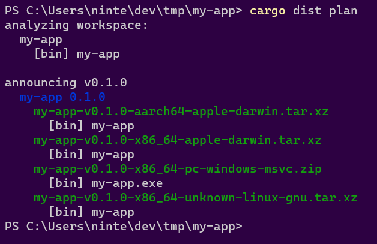.
This output has two parts: "analyzing workspace" and "announcing"
"analyzing workspace" describes what dist found in your workspace. In this case there's a package called "my-app" with a binary target of the same name.
"announcing v0.1.0" tells us the tag that should be pushed to announce a release of the current workspace ("v0.1.0"). Underneath it we see that the announcement will include "my-app 0.1.0" as expected. Underneath that we see 4 artifacts will be produced and uploaded:
- The Intel macOS build: my-app-v0.1.0-x86_64-apple-darwin.tar.xz
- The M1 macOS build: my-app-v0.1.0-aarch64-apple-darwin.tar.xz
- The Windows build: my-app-v0.1.0-x86_64-pc-windows-msvc.zip
- The Linux build: my-app-v0.1.0-x86_64-unknown-linux-gnu.tar.xz
It also helpfully lists the contents of each zip. In this case I didn't properly setup my project at all, so it only contains a prebuilt binary. If I actually add files like README.md, LICENSE, and RELEASES.md, dist will helpfully pick those up and include them (disable this with the auto-includes=false config):

If you add --output-format=json you'll get a full machine-readable output instead, and have locally recreated the first step of the generate CI!
Cutting Releases
With all our one-time setup done, we're ready to cut a release! This can be streamlined a lot with cargo-release which will do essentially everything we're about to go through with a single command (see the guide on that), but it's helpful to understand the actual steps in case cargo-release doesn't fit your usecase or if you need to debug issues.
The first step is to do all the things you would do to prep a release: update docs, update release notes, bump version numbers in Cargo.tomls, run tests, and so on.
At this point we're confident and want to release things for real. Once again, we can check what dist thinks should happen with the plan command:
dist plan
Similarly you can check that cargo publish will work with the --dry-run flag:
cargo publish --dry-run
If both of those seem happy, you're ready to release! All we need to do is push up a commit that has the Git Tag that plan suggested. As we've seen in previous sections, it's recommending "v0.1.0" for our example app, so let's use that:
# Publish to a Github Release with dist
git commit -am "Chore: Release 0.1.0"
git tag "v0.1.0"
git push
git push --tags
# Publish to crates.io
cargo publish
and that's... it! If everything's working, your CI should spin up a "Release" workflow that dist generated for you, and after a few minutes the "Releases" section of your repo should have all the results populated with something like this:
Oops! There's some extra features in that screenshot that I haven't explained yet! This includes the "Release Notes" feature and a few installers. Since we're talking about Releasing, let's talk about Release Notes.
Release Notes
If your project has a top-level RELEASES/CHANGELOG file like "RELEASES.md", then dist will automatically try to use it as part of your Announcement (Github Release). We use the parse-changelog library to try to find a heading for the version you're releasing, and if we do, we add it to the Github Release's text. We also use the heading as the title for the Github Release (rather than just the git tag).
Roughly speaking, the library is looking for something like:
# <ignorable prefix> <version> <ignorable suffix>
For instance in # Version 1.0.0 (2022-03-01), the only really important part is the "1.0.0", which should exactly match the Cargo version of your package. If you want to see how your RELEASES/CHANGELOG file is interpreted you can install parse-changelog as a CLI and run it on the file to see what it thinks. In the future we'll have some better debugging tools for this.
If you're publishing a Version with some prerelease bits like "1.0.0-prerelease.1", then we'll first look for that exact match in your RELEASES/CHANGELOG. If we can't find it we'll strip the prerelease/build suffix (in this case going back to "1.0.0") and check for that. If that finds a match we'll edit the heading to include the prerelease suffix when we include it in the Announcement. This lets you have a stable heading like # Version 1.0.0 (under development), and prereleases will get headings like # Version 1.0.0-prerelease.1 (under development).
If none of the previous rules apply, "1.0.0-prerelease.1" will also match a special "Unreleased" heading (i.e. "# Unreleased"), which will get rewritten to "# Version 1.0.0-prerelease.1". This lets you maintain a changelog for a pending release without having to commit to what version it will be.
Guide: More Complex Workspaces
- Multiple Binaries In One Package
- Multiple Packages In A Workspace
- Announcement Tags
- Singular Library Hack
- Using cargo-release
Now that we've looked at a simple example with cargo new, let's start looking at ways to make a Cargo Workspace more complicated, and how dist will deal with them.
But first, let's define some precise terminology:
Rust projects typically exist as a single Workspace, which is a collection of one or more Packages that are all developed in the same repository (crates.io dependencies are not considered part of the workspace). A workspace always has a root Cargo.toml where certain workspace-global settings are defined.
If the root Cargo.toml doesn't define a Package then we say it's a Virtual Workspace. A Virtual Workspace puts all the packages on the same level, treating them as equals. If you don't use a Virtual Workspace you are essentially saying the entire project exists to produce that one root Package. Both approaches make sense in different contexts. I personally prefer virtual workspaces because it makes cargo (and other tools) default to operating on all packages at once, which is usually what I want (e.g. I want cargo test to test the entire workspace, I want cargo fmt to format the whole workspace, and so on).
A Package is the thing defined by a Cargo.toml (except for the root Cargo.toml of a Virtual Workspace, which defines no package). Many people reasonably assume "Package" and "Crate" are synonyms -- after all you host your Packages on a website called "crates.io"! As it turns out, this is not the case: a Package can in fact define multiple Crates at the same time.
A Crate is the actual unit of compilation that rustc thinks about, like a single library or binary. For the purposes of dist, you don't really need a perfect understanding of what is or isn't a "crate". The important takeaway is that a single Package can contain multiple things that are conflated with a single unified name and version. As we'll see, this can be useful.
Multiple Binaries In One Package
So here's where the difference between a "Package" and a "Crate" is most relevant: Cargo lets a single Package define multiple binaries. See those docs for all the details. This can be convenient if you want to produce a single logical application that provides a suite of CLIs. For instance, you might want to make a standalone "my-tool" CLI that can be invoked as cargo my-tool as well. The easiest way to do this is to define a second "cargo-my-tool" binary as part of the "my-tool" Package. Once you do, cargo install my-tool will install both!
dist tries to respect this semantic. If you define multiple binaries in a Package, we will treat the Package as one "Application" and bundle both binaries in all zips and installers for that App. There is no way to override this behaviour -- if you don't want two binaries to be considered part of the same App, you should use separate Packages.
Multiple Packages In A Workspace
Alright here's where things get a bit more complicated and you need to make a decision on how exactly you plan to develop and release the packages that make up your project. Up until now we've been assuming you have a single package in your workspace, but now we're going to deal with more.
How dist interprets multiple packages is actually fairly simple:
- Each Package that defines binaries is considered an "App" with completely independent zips/installers
- Each Package that doesn't define binaries is wholly irrelevant and ignored
If a Package defines binaries but you want dist to ignore it just like it does with library-only packages (i.e. because the binaries are for local testing), you can do that with either:
Now here's the really important question you need to answer: how do you want to announce new versions of your packages?
Announcement Tags
When you push a Git Tag to your repository, dist's CI will try to create a single Announcement (A Github Release) for that tag. When you only have one Package that's a completely unambiguous operation. When you have multiple Packages we now need some way to disambiguate what you actually meant.
1 Git Tag = 1 dist Announcement = 1 Github Release
dist supports two forms of Announcement which you can select with the format of your Git Tag:
- Unified Announcement: VERSION selects all packages with the given version (v1.0.0, 0.1.0-prerelease.1, releases/1.2.3, ...)
- Singular Announcement: PACKAGE-VERSION or PACKAGE/VERSION selects only the given package (my-app-v1.0.0, my-app/1.0.0, release/my-app/v1.2.3-alpha, ...)
People love their different tag formats, so we do our best to parse lots of different kinds! Prefixing the version with
vis optional. Anything that comes before a/is ignored unless it's exactly a package name (soreally/cool/5.0.0/releases/v1.0.0is just read as "1.0.0"). Note that something like "1.0" is not a valid Cargo SemVer Version.
These two modes support the following workflows:
- Releasing a workspace with only one App (either mode works but Unified is Best)
- Releasing a workspace where all Apps are versioned in lockstep (Unified)
- Releasing an individual App in a workspace with its own independent versioning (Singular)
- Releasing several Apps in a workspace at once, but all independently (Push multiple Singular tags at once)
NOTE: Although you could use extremely careful versioning in conjunction with Unified Announcements to release a weird subset of the packages in your workspace, you really shouldn't because the Github Releases will be incoherent (v0.1.0 has these random packages, v0.2.0 has these other random packages... huh?), and you're liable to create painful tag collisions.
The need for a coherent Announcement Tag is so important that dist commands like "build" and "manifest" will error out if one isn't provided and it can't be guessed. If that happens you may need to pass an explicit --tag=... flag to disambiguate. Being this strict helps catch problems before you push to CI.
Singular Library Hack
Normally dist will error out if the Announcement Tag selects no Apps, because it exists to build and distribute Apps and you just asked it to do nothing (which is probably a mistake). This would however create annoying CI errors if you just wanted to tag releases for your libraries.
For 0.0.3 I opted for this kind of weird half-functionality:
dist will produce a very minimal build-less Announcement (and therefore Github Release) if you explicitly request a Singular Announcement that matches a library-only package. This feature is kind of half-baked, please let us know what you want to happen in this situation!
We'll probably have to add a config for specifying whether you want libraries to get Announcements or not when you push a singular tag for them.
Using cargo-release
See the dedicated guide to using cargo-release with dist, which covers all sorts of nasty workspaces (it's also just a more useful in-depth look at ).
Using cargo-release
- cargo-release Basics
- cargo-release Advanced Usage
- One Package
- Virtual Workspace With Independent Versions
- Virtual Workspace With Unified Versions
- Non-Virtual Workspace With Unified Versions
- Non-Virtual Workspace With Totally Independent Versions
- Non-Virtual Workspace With Independent Libraries
- Library-only Workspaces
- Previewing Your Release
- Using cargo-release with Pull Requests
NOTE: It will be helpful to read the section on dist Announcement Tags, because that is the interface boundary between cargo-release and dist. TL;DR: dist interprets a git tag of "v1.0.0" as "Announce/Release the whole workspace" (Unified Announcement) and "my-app-v1.0.0" or "my-app/v1.0.0" as "Announce/Release that one package" (Singular Announcement).
NOTE: this guide assumes you're running cargo-release v0.22.0 or greater, as that version made several significant changes to default behaviours (for the better!).
dist intentionally doesn't handle these steps of cutting a release for you:
- updating the versions of your packages
- writing your release notes
- committing the results
- tagging your commits
- pushing to your repo
- publishing to crates.io
There's a lot of different workflows for these things and we're happy to leave that to you. All dist cares about is that a tagged commit eventually ends up in your repo (and that the format of that commit reflects the versions/names in your Cargo.tomls).
That said, you might find cargo-release useful because it can handle all of the above things for you in a single command like cargo release 1.0.0. This section is dedicated to explaining how to use cargo-release with dist in various situations.
cargo-release Basics
NOTE: cargo-release will never do anything side-effectful unless you also pass it
--execute. Unless otherwise specified, we are discussing the behaviour when that flag is passed, but will be omitting it for safety/brevity.
In a simple project with one package, without any configuration set for cargo-release, the command cargo release 1.0.0 is roughly sugar for:
<does some basic checks for uncommitted files and upstream being ahead>
<edits your Cargo.toml to have version 1.0.0>
git commit -am "chore: Release my-app version 1.0.0"
git tag v1.0.0
cargo publish
git push --atomic <remote-branch> refs/tags/v1.0.0
(The git push --atomic is basically a more robust version of git push && git push --tags)
Hey neat that's basically everything I listed at the start of this section! And the tag format is exactly what dist expects for a simple project!! What a coincidence!!! 😸
If you don't want some of these behaviours, you can disable them permanently with [workspace.metadata.release] in your Cargo.toml, or disable temporarily with CLI flags. See the cargo-release reference for all the details but here's some important ones to only get a subset of the behaviours:
- Don't want to publish? Set
publish = falsein the config or pass--no-publish - Don't want to push? Set
push = falsein the config or pass--no-push - Don't want to tag? Set
tag = falsein the config or pass--no-tag
See this section for specific details on using cargo-release with github pull requests (PRs).
Note also that you can use [package.metadata.release] to set configs on individual packages and not the whole workspace.
cargo-release Advanced Usage
With a more complex project/workspace, cargo-release won't work as well out of the box with dist. To understand why, we need to understand the rules it applies consistently that can be strange if unexpected.
When you run cargo release it should follow the same rules cargo does for selecting the subset of the workspace to operate on. That is, if you were to run cargo test, the packages that actually get tested are the same ones that cargo release will attempt to release! I'll try to briefly summarize (imperfectly, workspaces can get really Complicated):
- When run in the subdirectory of a package, execution is scoped to that package
- When run in the root of a virtual workspace (where the root Cargo.toml isn't an actual package), execution applies to all packages
- When run in the root of a non-virtual workspace (where the root Cargo.toml is probably the "main" package that all other packages exist to implement), execution only applies to the root package.
- When run with
--workspace, execution applies to all packages (good for making a non-virtual workspace behave more like a virtual one). - Specific packages can be selected with
-p/--package - I haven't checked if cargo-release respects default-members but that's a thing too!
By default, cargo-release will create a separate git tag for every package it's releasing. The default format of these tags depends on the shape of your workspace:
- If there is a root package (the workspace is non-virtual), releases of the root package will be tagged as
v{VERSION}("v1.0.0"). - All other packages will be tagged
{PACKAGE_NAME}-v{VERSION}("my-app-v1.0.0")
As we'll see below, these combined behaviours have the following interactions with dist:
- ✅ one package workspace: tags it like "v1.0.0"
- ✅ virtual workspace, independent versions: tags each package like "my-app-v1.0.0"
- ✅ virtual workspace, independent versions: tags each package like "my-app/v1.0.0" (needs additional configuration in cargo-release, see below)
- ❌ virtual workspace, unified versions: we want a single tag like "v1.0.0"
- ❌ non-virtual workspace: it will mix the tag formats, which might be ok in one situation
Now let's dig into each of these situations in more detail.
One Package
TLDR: cargo-release Just Works.
cargo release 1.0.0
As stated previously, cargo-release works great with dist if you have a simple project consisting of a single package (the kind of project cargo new my-app or cargo init my-app will create).
See the previous sections for what this will do and how to configure the behaviour if, e.g. you want to hold off on publishing to crates.io or pushing.
The more general version of this situation -- where you have one root package and all the other workspace members are libraries that exist to implement it -- has two possible solutions depending on how you want to version/release the libraries:
Virtual Workspace With Independent Versions
TLDR: cargo-release just needs you to specify which package to release.
cargo release -p my-package 1.0.0
If you have a virtual workspace (one where the root Cargo.toml isn't an actual package) and want everything in the workspace to be versioned/released independently, then dist will default to operating on all your packages at once, and you should do the same thing you would do if you were running cargo publish: either use -p to select the relevant packages or cd into the subdir of that package before running the command.
Each tag will induce dist to produce an independent Announcement (Github Release) for that package.
If the package is a library the Github Release won't have any builds/artifacts uploaded. See here for details.
Note that we currently don't support finding/emitting Release Notes for Singular Releases (simply haven't had time to design and implement it yet).
Using slash in tag prefix with cargo-release
For cargo-release to work with tag prefixes that use a slash, you must configure it to use a different prefix for tags in Cargo.toml.
For a virtual workspace, put the following in your root Cargo.toml:
[workspace.metadata.release]
tag-prefix = "{{crate_name}}/"
Please refer to the cargo-release reference for further information on how you can configure cargo-release.
Virtual Workspace With Unified Versions
TLDR: cargo-release just needs you to specify that versioning/tagging should be unified.
# Add this config to your root Cargo.toml (virtual manifest)
[workspace.metadata.release]
shared-version = true
tag-name = "v{{version}}"
cargo release 1.0.0
If you have a virtual workspace (one where the root Cargo.toml isn't an actual package) and want everything in the workspace to be versioned/released in lockstep with a single Unified Announcement (One Big Github Release), then you're going to need to configure cargo-release as above.
After that it works perfectly, and cargo-release will even automagically handle publishing your packages to crates.io in the right sequence and waiting for the publishes to propagate before running the next one (no more "oops sorry the package you just published isn't actually propagated to the registry yet so the package that depends on it can't be published").
(See the next section on non-virtual workspaces with unified versions for some grittier details on what's going on here.)
Non-Virtual Workspace With Unified Versions
TLDR: this is much the same as the virtual workspace case but you need to pass --workspace on the CLI.
# Add this config to your root Cargo.toml (virtual manifest)
[workspace.metadata.release]
shared-version = true
tag-name = "v{{version}}"
cargo release 1.0.0 --workspace
If you have a non-virtual workspace (one where the root Cargo.toml is a package) and want everything in the workspace to be versioned/released in lockstep with a single Unified Announcement (One Big Github Release), then it's almost the same as the virtual case (see the previous section).
The one caveat is that dist is consistent to a fault here, and even though we've explicitly told it things should be versioned/tagged in lockstep, running it in the root of your project still only releases the root package, and that's not what you want!
We need to tell it that we really meant it and pass --workspace!
What's happening here is that cargo-release is conceptually defined to run on each package individually, with just the "git push" step being unified. The tagging settings we're providing work because it's basically repeatedly going "oh hey I was already going to make that tag, no need to make it again". It doesn't have a proper notion of the entire workspace being released in perfect lockstep, so if you ask it to release only some of the packages it will happily oblige.
In the virtual workspace this Just Works because commands in the root directory are implicitly --workspace.
Non-Virtual Workspace With Totally Independent Versions
TLDR: this is a more complicated mess because but you probably want to make the root package have the Singular Announcement format, and then you just need to be explicit about each package you want to release on the CLI:
# Add this config to your root Cargo.toml (main package)
[package.metadata.release]
tag-name = "{{crate_name}}-v{{version}}"
cargo release -p my-package 1.0.0
If you have a non-virtual workspace (one where the root Cargo.toml is a package) and want everything in the workspace to be versioned/released independently, then the simplest approach is to make everything behave like it does in the Virtual Workspace With Independent Versions.
However if you find yourself in this position it's likely that your workspace actually looks like:
- root package is The One Application this project exists to develop
- all other packages are libraries that support it
In this precise configuration you may be able to avoid configuration by adopting a hybrid "Partially Independent Versions" approach as described in the next section.
Non-Virtual Workspace With Independent Libraries
TLDR: technically this Just Works but you need to be specific about what packages you're publishing and may have annoying issues in the future.
cargo release -p my-package 1.0.0
So if your workspace looks like this:
- root package is The One Application this project exists to develop
- all other packages are libraries that support it
Whenever you cargo release the root package, it will get tagged without a prefix ("v1.0.0") and dist will create a Unified Announcement. Even though there are other packages in the workspace, dist will take this in stride because as far as it's concerned this looks exactly the same as a workspace with one package. Which is to say, it's no different from a simple project as far as dist is concerned.
Whenever you cargo release a library, it will get tagged with a prefix ("my-lib-v1.0.0") and dist will create a minimal Singular Announcement. See here for details. In future versions we might change this default (or at least make it configurable).
I have some vague concerns that this will be wonky if you ever introduce a second application to the workspace, but honestly that's probably going to be true regardless of if you were using dist, so maybe it's fine? Really I just don't trust non-virtual workspaces...
Library-only Workspaces
dist really isn't designed for this but technically you can use the Singular Library Trick if you want. If you want dist to properly support this, please let us know!
Previewing Your Release
cargo-release defaults to dry-run semantics, only doing side-effectful operations if you pass it --execute. It will also do its best to detect problems early and error out if things seem wrong. This absolutely rules!
There are two things to keep in mind:
- cargo-release's dry-run is imperfect and has some differences from the real run
- cargo-release isn't aware of dist, so it can't check if what it's about to do will blow up in CI or not
Let's start with the dry-run differences. I don't know them all but the biggest one that I hit is that it doesn't fully emulate bumping the versions in your Cargo.tomls. Notably when it checks if publish will work, it's building the current version of the packages. If your build is aware of its own version this can cause/miss problems (and you'll see funky stuff like "Upgrading my-app from 1.0.0 to 2.0.0" ... "Packaging my-app 1.0.0").
As for being aware of dist... I want to design some features for this, but I'm not quite sure what it should look like yet.
I think in the short-term, the best I can offer you is "make a temporary git branch and tell cargo-release to --execute but not push/tag/publish, then ask dist what it thinks extremely manually". A rough sketch:
# make a temp branch where we can mess stuff up
git checkout -b tmp-release
# ask cargo-release what it thinks should happen
# (substitute the actual cargo-release command you'd use here)
cargo release 1.0.0
That should end with a line that looks like "Pushing main, v1.0.0 to origin". The first item is the branch it's pushing to, all the following items are all the tags it wants to push. Now that we know the tags, we can ask cargo-release to update the package versions and then ask dist what it thinks of those tags:
# just bump versions
cargo release 1.0.0 --execute --no-push --no-tag --no-publish
# ask dist what should be produced for the given tag
dist plan --tag=<tag-you-want-to-check>
If that runs successfully and prints out the artifacts you expect, that's pretty good sign running cargo-release For Real will work! (You can also try dist build if you're worried about the actual build failing.)
Using cargo-release with Pull Requests
In this section we will be using
$BRANCHand$VERSIONas placeholders for the branch you make your PR on and the version you want to release.
Many teams have policies that prevent pushing to main, and require you to open pull requests instead. This conflicts with the default behaviour of cargo-release, but it works fine with some extra flags to encourage it to defer the steps until later. Specifically, use the following to "partially" run cargo-release:
cargo release --no-publish --no-tag --allow-branch=$BRANCH $VERSION
The release process then has the following steps:
- step 0: create a new branch for the PR
- step 1: < finalize things like changelogs and commit >
- step 2: partially run
cargo release ...to update your Cargo.tomls and push your branch - step 3: < open a pr, review, merge >
- step 4: fully run
cargo releaseon main to complete the process (publish and tag)
Crucially, neither invocation of cargo release will modify your main branch directly. Step 4 will only push a git tag for the commit that is already on main.
Here's what this looks in practice:
# step 0: make a branch
git checkout -b $BRANCH
# step 1: update things like the changelog
# < edit some files or whatever here >
git commit -am "prep release"
# step 2: have cargo-release handle tedious mechanical stuff
# this will:
# * do some safety checks like "git index is clean"
# * update version numbers in your crates (and handle inter-dependencies)
# * git commit -am "chore: release $NAME $VERSION" (one commit for the whole workspace)
# * git push (remember we're on a branch)
cargo release --no-publish --no-tag --allow-branch=$BRANCH $VERSION
# step 3: open a PR and review/merge to main
# NOTE: the above steps will result in two commits
# we recommend using github's "merge and squash" feature to clean up
# ...
# step 4: remove the shackles from cargo release and RUN ON MAIN
# this will:
# * tag the commit
# * push the tag
# * publish all crates to crates.io (handles waiting for dep publishes to propagate)
# * trigger dist when it sees the tag (if applicable)
# THIS WON'T CREATE NEW COMMITS
#
# running "dist plan" is totally optional, but this is is the best time to check
# that your dist release CI will produce the desired result when you push the tag
git checkout main
git pull
dist plan
cargo release
Reference
The following sections are more focused on precise details.
Concepts
- Defining Your Apps
- Defining Your Artifacts
- Announcements (Selecting Apps)
- Artifact Modes (Selecting Artifacts)
- Putting It All Together
Here's the section where I use a bunch of Capitalized Words to indicate they are a Special Concept in dist as I try to explain how it works. These are the "advanced" docs of dist; see the guide for the "beginner" docs.
An invocation of dist has 4 major inputs:
- The structure of your project's Cargo Workspace (via cargo-metadata)
- The config in your Cargo.toml
[workspace.metadata.dist](and[package.metadata.dist]) - The "announcement tag" (e.g.
--tag=v1.0.0) - The "artifact mode" (e.g.
--artifacts=all)
The first two define the full "Universe" of your project -- the platforms/binaries/installers that dist wants to build. The second two tell dist what subset of the Universe to actually bother with.
It's important to the structure of dist that every invocation is aware of the full Universe and how it's being subsetted, because for instance if you want a shell script installer that does platform detection and fetches binaries, it needs to know about all the binaries/platforms it has to select from, even if this particular run of dist won't build them all!
First let's look at how dist computes the Universe.
Defining Your Apps
Each Cargo package in your workspace that has binary targets is considered an App by dist. dist exists to build Apps, so making sure you and it agree on is important! (We prefer "App" over "package" because we want the freedom to one day decouple the two concepts -- for now they are strictly equivalent.)
In addition to your executables dist can publish your cdylibs, including WASM bundles. Note that, for Rust specifically, there can be messy issues around Cargo clobbering itself when you define two many things under one package.
Most invocations of dist will start by printing out a brief summary of the Apps that dist has found:
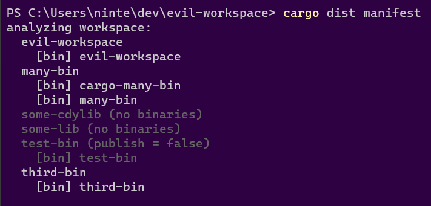
The summary includes a list of every package in your workspace. If that package defines binaries, they will be listed underneath the package. If the package's listing is greyed out, that means dist has decided it's either Not An App or that it's not part of the current Announcement (see the Announcement section), along with a parenthetical reason for its rejection, such as: "no binaries", "publish = false", "dist = false", or "didn't match tag".
In the above example the available Apps are "evil-workspace", "many-bin", and "third-bin". "many-bin" defines two binaries, while the other two Apps only define one.
To match cargo-install's behaviour, if a package defines multiple binaries then they will be considered part of the same App and zips/installers for it will contain/install all of them. We figure if you went out of your way to have multiple binaries under one package (as opposed to separate packages for each), you did that for a reason! If you don't want that, make separate packages. There is currently no way to group multiple packages into a single App, although there probably will be one day.
If you don't want a package-with-binaries to be considered an App that dist should care about, you can use Cargo's own builtin publish = false. You can also use dist = false or dist = true in dist's own config, which when defined will take priority over publish.
Distability can also be configured on the workspace level by using the packages setting in the workspace configuration. If set, this defines a specific list of packages which will be distributed, overriding any dist = true or dist = false configuration.
Defining Your Artifacts
Ok so you've defined your App, but what should we actually build for it? Let's look at what dist init --ci=github --installer=shell --installer=powershell --yes dumps into your root Cargo.toml:
# Config for 'dist'
[workspace.metadata.dist]
# The preferred dist version to use in CI (Cargo.toml SemVer syntax)
cargo-dist-version = "0.0.3"
# CI backends to support
ci = ["github"]
# The installers to generate for each app
installers = ["shell", "powershell"]
# Target platforms to build apps for (Rust target-triple syntax)
targets = ["x86_64-unknown-linux-gnu", "x86_64-apple-darwin", "x86_64-pc-windows-msvc", "aarch64-apple-darwin"]
# The profile that 'dist' will build with
[profile.dist]
inherits = "release"
lto = "thin"
The parts we're really interested in here are "installers", "targets", and [profile.dist].
First the easy part: profile.dist is the profile dist will build everything with. We define a separate profile from release so that it can be tuned more aggressively for builds that are longer or more resource-intensive without making it tedious to develop locally.
The other 3 fields are defining the various Artifacts that should be produced for each App in the workspace (because this is [workspace.metadata] and not [package.metadata]).
For each entry in targets you will get a build of your App for that platform in the form of an archive.
For each entry in installers you get that kind of installer for your App. There are two classes of installer: "global" and "local". This will be explained further in the section on artifact modes, but the tl;dr is that "global" installers are one-per-App while "local" installers are one-per-platform-per-app, similar to a Github CI Matrix.
"shell" and "powershell" are both global installers. There aren't currently any implemented local installers, but those would be things like a windows "msi" or macos "dmg", where you ostensibly want individual installers for each architecture.
Announcements (Selecting Apps)
dist's self-generated CI is triggered by pushing git tags with specific formats like "v1.0.0", "my-app-v1.0.0" or "my-app/v1.0.0". Each tag will trigger its own independent run of that CI workflow. That tag defines the subset of the workspace (what packages) we want to produce a single unified Announcement for (i.e. a single Github Release). Every invocation of dist in that CI run will be passed that git tag with the --tag flag to ensure consensus on what to Announce (and therefore build and upload).
1 Git Tag = 1 dist Announcement = 1 Github Release
Even when not running in CI, this concept of a coherent Announcement Tag is important enough that we will always try to guess one even if none is provided. The "build", "manifest", and "plan" commands will refuse to run if a coherent Announcement Tag can't be determined to help you catch problems before you start pushing to CI. If this happens you will get a printout telling you some options:
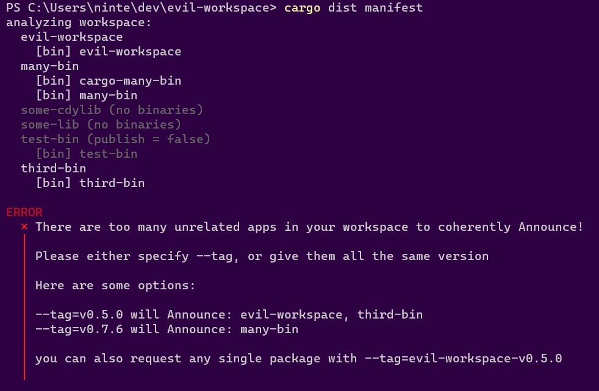
Here we have the same workspace we saw in the "defining your apps" section, but we get a complaint from dist manifest:
There are too many unrelated apps in your workspace to coherently Announce!
Please either specify --tag, or give them all the same version
This introduces the one big rule for Announcements: all the Apps being Announced together have to agree on their Version. We need something to tie the announcement together and "3 random Apps with different Versions" has nothing to use! You should really just have 3 separate Announcements for those Apps. If you disagree, please let us know!
The error goes on to recommend the two formats for the Announcement Tag:
- Unified Announcement: VERSION selects all packages with the given version (v1.0.0, 0.1.0-prerelease.1, releases/1.2.3, ...)
- Singular Announcement: PACKAGE-VERSION or PACKAGE/VERSION selects only the given package (my-app-v1.0.0, my-app/1.0.0, release/my-app/v1.2.3-alpha, ...)
These two modes support the following workflows:
- Releasing a workspace with only one App (either mode works but Unified is Cleaner)
- Releasing a workspace where all Apps are versioned in lockstep (Unified)
- Releasing an individual App in a workspace with its own independent versioning (Singular)
- Releasing several Apps in a workspace at once, but all independently (Push multiple Singular tags at once)
In this case the error notes two valid Unified Announcements:
--tag=v0.5.0will Announce: evil-workspace, third-bin--tag=v0.7.6will Announce: many-bin
This tells us that evil-workspace and third-bin actually already agree on their Version. If we do want a Unified Announcement, we probably want to bring many-bin into agreement, or mark it as publish=false or dist=false.
Although you could use extremely careful versioning in conjunction with Unified Announcements to release a weird subset of the packages in your workspace, you really shouldn't because the Github Releases will be incoherent (v0.1.0 has these random packages, v0.2.0 has these other random packages... huh?), and you're liable to create painful tag collisions.
Normally dist will error out if the Announcement Tag selects no Apps, because it exists to build and distribute Apps and you just asked it to do nothing (which is probably a mistake). This would however create annoying CI errors if you just wanted to tag Individual Releases for your libraries. To make this more pleasant, dist will produce a very minimal build-less Announcement (and therefore Github Release) if you explicitly request a Singular Announcement that matches a library-only package. This feature is kind of half-baked, please let us know what you want to happen in this situation!
Artifact Modes (Selecting Artifacts)
Now that we have a coherent Announcement and therefore have selected what apps we want to Release, we need to select what artifacts we want to build (or get a manifest for). Enumerating the exact artifacts for each invocation of dist would be tedious and error-prone, so we provide the --artifacts=... flag to specify the Artifact Mode, which is a certain subset of the Universe of all Artifacts:
- "local": artifacts that are per-target platform (archives, symbols, msi installers...)
- "global": artifacts that are one-per-app (shell installer, npm package...)
- "all": both global and local (so the whole Universe)
- "host": the default mode that kind of breaks the rules to let you test things out locally
Let's ignore "host" mode for a bit and focus on the other three. Each one of these is intended to be used for specific tasks.
All Artifacts Mode
The "all" Artifact Mode is largely intended for the manifest command, to get a listing of everything that would be produced if you were to push the given tag to CI. Here we check what v0.5.0 would produce for our favourite example workspace:
dist manifest --tag=v0.5.0 --artifacts=all --no-local-paths
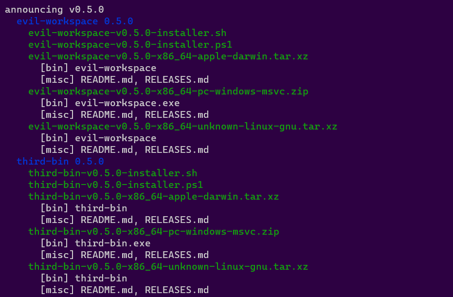
If we add --output-format=json we will get the dist-manifest.json that CI uploads to your Github Release:
dist manifest --tag=v0.5.0 --artifacts=all --no-local-paths --output-format=json
This is the only way that CI uses the flag, but you could also use "all" with build (the default dist command) if you want to get all the artifacts built at once, although you should probably filter the --targets as discussed in the section on "local".
dist manifest --artifacts=all --no-local-paths is so useful/common that we provide an alias for it: dist plan. The above can be simplified to:
dist plan --tag=v0.5.0
dist plan --tag=v0.5.0 -ojson
Global Artifacts Mode
The "global" Artifact Mode allows you to unambiguously create a task that will build all the Artifacts for your Apps that aren't platform-specific and therefore only need to be made once per App:
dist build --tag=v0.5.0 --artifacts=global --no-local-paths
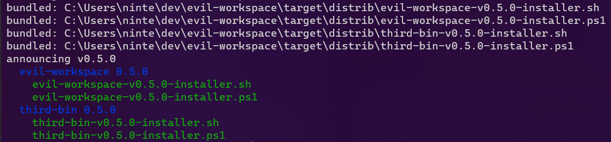
Here we see that it only results in the "shell" and "powershell" installers getting built. The code to generate these should be totally cross-platform, so any runner is suitable for the task. The CI creates one "global" task that uses linux because that's the fast/cheap one.
Local Artifacts Mode
The "local" Artifact Mode allows you to unambiguously create a task that will build all the Artifacts for your Apps that are platform-specific and therefore should have a copy made for every target platform.
If you just use this flag bare, dist will respect the request and try to build for all platforms at once... and this will probably fail, because cross-compilation is hard. Each "local" run should generally use --target to filter down the set of all supported targets to the ones you can confidently build on the current machine (rustc -vV will tell you the "host" target platform if you're not sure).
In my case it's "x86_64-pc-windows-msvc", so let's try that:
dist build --tag=v0.5.0 --artifacts=local --target=x86_64-pc-windows-msvc --no-local-paths
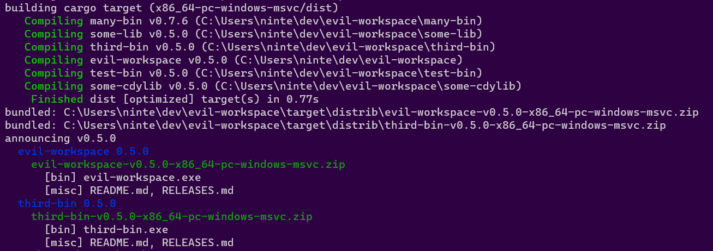
Note that you can pass --target multiple times to select more than one. Note also that --target is not allowed to select targets that aren't specified by the config your Cargo.toml. This ensures that global installers are consistently aware of all the platform-specific artifacts they can fetch. ("host" mode breaks this rule.) ((Also in theory --installer should work the same for selecting specific installers but it's not well tested because there isn't any reason to ever use that outside of dist init.))
CI will spin up one "local" task for each of the major desktop platforms, grouping the targets that are easy to build on those platforms together. In the future we might want to spawn one task per target, or at least make that an option you can pick. That said, some Artifacts like macOS universal binaries may find it useful to have multiple targets built on the same machine!
Host Artifacts Mode
Host mode is the default "do something useful on my machine" mode. It's intended for testing and demoing dist on your project, and is never used in CI due to its intentionally fuzzy semantics.
It's currently roughly equivalent to --artifacts=all --target=HOST_TARGET, but HOST_TARGET is allowed to fall outside the set of targets defined in your Cargo.toml, because it's not terribly useful to tell someone trying out dist on ARM64 Linux that their platform isn't defined in the config.
If you do pass --target in host mode then we won't do fuzzy target selection and will just build the targets you ask for like normal.
Putting It All Together
Ok so here's what goes through dist's brains when you run it:
- Read in the workspace/config/cli-flags
- Determine the Announcement Tag (select the Apps) ("v1.0.0")
- Determine what Targets we're building for
- Call the specific Version of each App a "Release" ("my-app-v1.0.0")
- For each Release-Target pair, create a "ReleaseVariant" ("my-app-v1.0.0-x86_64-apple-darwin")
- Add archive Artifacts to each Release (broadcasted to each Variant, filtered by Artifact Mode)
- Add all the enabled Installers to each Release (local ones broadcasted to each Variant, filtered by Artifact Mode)
- Compute the Build Steps necessary to produce each Artifact ("run cargo, copy this file, ...")
- Generate top-level Announcement info like the body for a Github Release
- run the Build Steps (ignored by
manifest/plan) - print a manifest of the computed Announcement/Releases/Artifacts
CI will parse the resulting (--output-format=json) manifest of each build invocation to know what artifacts were produced and need to be uploaded to the Github Release.
CI will just invoke dist in the following sequence:
- create-release:
dist manifest --artifacts=all --output-format=json --no-local-paths - upload-artifacts (local):
dist build --artifacts=local --target=... --output-format=json - upload-artifacts (global):
dist build --artifacts=global --output-format=json - publish-release: none, just marks the Github Release as a non-draft
(All the upload-artifacts tasks are in parallel, and there are multiple "local" tasks to cover the target platforms.)
Artifact URL
Fetching installers need to know where to download the actual binaries from, so dist needs to be aware of a base Artifact URL that it can derive download URLs from when it builds those kinds of installers.
Currently artifact URLs are derived from hosting providers and source hosts. Both must be well-defined for fetching installers to be enabled. Here is the behaviour of each hosting provider in more excruciating detail:
github
This host uploads your artifacts to a GitHub Release. Currently this functionality is restricted to the "github" CI backend. Because dist is fully in control of the uploading of your artifacts, it can automatically compute the Artifact URL for you, as:
{repo_url}/releases/download/{tag}
Where repo_url is your source host repo_url, and tag is the git tag of the release.
For example, if we want the linux build of axolotlsay 0.1.0, we have:
* Cargo.toml "repository": `https://github.com/axodotdev/axolotlsay/`
* git tag: `v0.1.0`
* artifact url: `https://github.com/axodotdev/axolotlsay/releases/download/v0.1.0/`
* download: `https://github.com/axodotdev/axolotlsay/releases/download/v0.1.0/axolotlsay-x86_64-unknown-linux-gnu.tar.gz`
Linking GitHub Latest
dist doesn't use this, but it's good for you to know: GitHub Releases lets you hotlink the files of "the latest release". This is useful for writing your own docs, as you can set them and forget them. dist specifically avoids putting version numbers in artifact names so that these kinds of URLs can be used.
The schema is (LOOK CLOSELY, IT IS NOT THE OBVIOUS SCHEMA, GITHUB DID THIS WEIRD):
{repo_url}/releases/latest/download/
Example:
https://github.com/axodotdev/cargo-dist/releases/latest/download/dist-manifest-schema.json
Other
Future releases will expose a more general mechanism for specifying artifact download URLs.
Source Hosts
Regardless of what hosting providers you ask for, dist will complain if you don't have a properly defined source host, which is a fancy way of saying we need a URL to your git repo. Currently the only supported Source Host is github.com, but we would like to support more.
Most Cargo projects already set a Source Host: it's just your [package].repository URL.
dist will parse this value and produce 3 values for your source host: owner, project, and repo_url. Here's an example:
* Cargo.toml "repository": https://github.com/axodotdev/axolotlsay.git
* owner: axodotdev
* project: axolotlsay
* repo_url: https://github.com/axodotdev/axolotlsay/
(Note that in the above example the repo_url is not the verbatim repository; we support various common variations and will normalize them away for you!)
For safety reasons, dist will refuse to accept a Source Host unless all packages in your workspace that define repository can be parsed to the exact same Source Host. Having inconsistent/outdated repository URLs is a very common issue. This check does not respect publish=false or dist=false!
Config
These are the reference docs for configuring dist. dist init manages the most important of these for you, but if you ever need advanced configuration, this is where to look!
Configuration is currently read from the following sources, in increasing preference:
- Your language-specific project manifests like Cargo.toml or package.json
- Your workspace dist config in dist-workspace.toml or dist.toml
- Your package dist config in dist.toml
We're currently in the middle of a major config migration. For existing Rust users, all references to the [dist] section in dist-workspace.toml and dist.toml may also refer to [workspace.metadata.dist] or [package.metadata.dist] in your Cargo.toml.
installersinstall-librariesbin-aliasesbinaries- shell and powershell installer settings
- npm installer settings
- homebrew installer settings
cibuild-local-artifactscache-buildsdispatch-releasesfail-fastmerge-taskspr-run-modetag-namespace- github ci settings
- custom ci jobs
nameversiondescriptionauthorsrepositoryhomepagedocumentationchangelogreadmelicenselicense-filesbinariescstaticlibscdylibsbuild-command
the [dist] section
This section represents all the configuration for how dist should build and publish your applications. The [dist] section is a temporary placeholder which will soon be replaced (and automatically migrated) to a new hierarchy in Config 1.0.
allow-dirty
since 0.3.0
global-only default =[]in your dist-workspace.toml or dist.toml:
[dist] allow-dirty = ["ci", "msi"]
This is a list of generate tasks for dist to ignore when checking if generated configuration is up to date.
We recommend avoiding setting this, as it prevents dist from updating these files for you whenever you update or change your configuration. If you think you need this, please do file an issue or ask us about it, so we know what settings we're missing that necessitates this (or ideally, can point you to the existing settings).
Nevertheless, setting can be necessary for users who customize their own configuration beyond dist's generated defaults and want to avoid dist overwriting it.
Possible values are:
- "ci": don't check/regenerate ci scripts (release.yml)
- "msi": don't check/regenerate msi templates (main.wxs)
cargo-dist-version
since 0.3.0
global-only default =<none>(this is mandatory!)in your dist-workspace.toml or dist.toml:
[dist] cargo-dist-version = "0.10.0"
This is added automatically by dist init, and is a recording of its own version for the sake of reproducibility and documentation.
Your release CI will fetch and use the given version of dist to build and publish your project.
The syntax must be a valid Cargo-style SemVer Version (not a VersionReq!).
dist
since 0.3.0
package-local 📖 read the guide for this feature!
default =<none>(infer it)in your dist-workspace.toml or dist.toml:
[dist] dist = true
Specifies whether dist should distribute (build and publish) a package, overriding all other rules for deciding if a package is eligible.
There are 3 major cases where you might use this:
dist = falseon a package can be used to force dist to ignore itdist = trueon a package can be used to force dist to distribute it in spite of signals like Cargo'spublish = falsethat would suggest otherwise.dist = falseon a whole workspace defaults all packages to do-not-distribute, forcing you to manually allow-list packages withdist = true(large monorepos often find this to be a better way of managing project distribution when most developers aren't release engineers).
packages
since 0.29.0
global-only 📖 read the guide for this feature!
default =<none>(infer it)in your dist-workspace.toml or dist.toml:
[dist] packages = ["a", "b"]
packages provides a more explicit way of specifying which packages to dist (or not). If packages is set, it provides a list of exactly which packages should be distributed within the workspace. It overrides individual package-level dist = true or dist = false configuration.
targets
since 0.0.3
package-local 📖 read the guide for this feature!
default =<none>in your dist-workspace.toml or dist.toml:
[dist] targets = [ "x86_64-pc-windows-msvc", "x86_64-unknown-linux-gnu", "x86_64-apple-darwin", "aarch64-apple-darwin", ]
This is a list of target platforms you want your packages to be built for.
The supported choices are:
- x64 macOS: "x86_64-apple-darwin"
- x64 Windows: "x86_64-pc-windows-msvc"
- x64 Linux: "x86_64-unknown-linux-gnu"
- arm64 macOS (Apple silicon): "aarch64-apple-darwin"
- arm64 Linux: "aarch64-unknown-linux-gnu"
- x64 Linux (static musl): "x86_64-unknown-linux-musl"
- arm64 Linux (static musl): "aarch64-unknown-linux-musl"
By default all runs of dist will be trying to handle all platforms specified here at once. If you specify --target=... on the CLI this will focus the run to only those platforms. As discussed in concepts, this cannot be used to specify platforms that are not listed in metadata.dist, to ensure different runs agree on the maximum set of platforms.
version
since 0.29.0
global-only default =<none>(infer it)in your dist-workspace.toml or dist.toml:
[dist] version = "0.0.1"
If set, this value will override the actual version configured for each package. For example, if the workspace contains packages versioned "0.2" and "0.3", and this value is set to "0.1", then dist will consider every package in the workspace to have the version "0.1".
artifact settings
Artifacts are the files that will be uploaded to your hosting. These settings affect what files those are, and what they contain. See also installers which are important enough to be separated out from other artifacts.
checksum
since 0.1.0
global-only 📖 read the checksum guide!
default ="sha256"in your dist-workspace.toml or dist.toml:
[dist] checksum = "sha512"
Specifies how to checksum other artifacts. Supported values:
- "sha256" - generate a .sha256 file for each archive
- "sha512" - generate a .sha512 file for each archive
- "sha3-256" - generate a .sha3-256 file for each archive
- "sha3-512" - generate a .sha3-512 file for each archive
- "blake2s" - generate a .blake2s file for each archive
- "blake2b" - generate a .blake2b file for each archive
- "false" - do not generate any checksums
The hashes should match the result that sha256sum, sha512sum, etc. generate, and the file should be readable by those sorts of commands.
Future work is planned to support more robust signed checksums.
extra-artifacts
since 0.6.0
package-local 📖 read the artifacts guide!
default =<none>in your dist-workspace.toml or dist.toml:
[[dist.extra-artifacts]] artifacts = ["schema.json"] build = ["cargo", "run", "--", "generate-schema"] [[dist.extra-artifacts]] artifacts = ["target/coolsignature.txt", "target/importantfile.xml"] build = ["make"]
(Note the [[double-square-brackets]], you can specify multiple extra-artifacts entries!)
This specifies extra artifacts to build and upload to your hosting. Users can download these directly alongside other artifacts like archives or installers.
Each extra-artifacts entry takes the following settings:
build: A command or script to run to produce these artifacts. This is an array of one or more strings; the first string is the command to run, and any subsequent strings are arguments to pass to that command.artifacts: An array of relative paths to files that dist expects to exist after thebuildcommand is run. Every file in this list will be uploaded individually to your release as its own artifact.
dist uses this feature to distribute its dist-manifest-schema.json as part of every release.
source-tarball
since 0.14.0
global-only 📖 read the artifacts guide!
default =truein your dist-workspace.toml or dist.toml:
[dist] source-tarball = false
By default, dist creates and uploads source tarballs from your repository. This setting disables that behaviour. This is especially useful for users who distribute closed-source software to hosts outside their git repos and who would prefer not to distribute source code to their users.
recursive-tarball
since 0.29.0
global-only 📖 read the artifacts guide!
default =truein your dist-workspace.toml or dist.toml:
[dist] recursive-tarball = true
By default, dist's source tarballs only includes the contents of your repository. Setting recursive-tarball = true switches to an alternate tarball generation method which includes the content of submodules.
ssldotcom-windows-sign
since 0.14.0
global-only 📖 read the windows signing guide!
default =<none>(disabled)in your dist-workspace.toml or dist.toml:
[dist] ssldotcom-windows-sign = "prod"
If you wish to sign your Windows artifacts (EXEs and MSIs) such that Windows SmartScreen won't complain about them, this is the feature for you.
This setting takes one of two values:
- "prod": use the production ssl.com signing service
- "test": use the testing ("sandbox") ssl.com signing service
These strings match the environment_name setting that SSL.com's code signing action uses uses.
archive settings
auto-includes
since 0.0.3
package-local 📖 read the archives guide!
default =truein your dist-workspace.toml or dist.toml:
[dist] auto-includes = false
Specifies whether dist should auto-include README, (UN)LICENSE, and CHANGELOG/RELEASES files in archives and installers.
See also: include
include
since 0.0.3
package-local 📖 read the archives guide!
default =[]in your dist-workspace.toml or dist.toml:
[dist] include = [ "my-cool-file.txt", "../other-cool-file.txt", "./some/dir/" ]
This is a list of additional files or directories to copy into the root of all archives and installers. Paths are relative to the config file. Globs are not supported.
All items specified will be placed in the root of the archive/installer (so in the above example my-cool-file.txt, other-cool-file.txt, and dir would be side-by-side with your binaries in an archive).
See also: auto-includes
package-libraries
since 0.20.0
package-local 🔧 this is an experimental feature!
📖 read the archives guide!
default =[]in your dist-workspace.toml or dist.toml:
[dist] package-libraries = ["cdylib", "cstaticlib"]
Which kinds of compiled libraries to include in archives. By default only binaries will be included in archives and used to decide if a package should be distributed. This feature allows you to opt into bundling static and dynamic libraries that your package builds.
When enabled, libraries will be included in your archives alongside your binaries, but installers will still ignore them. That can be changed using the install-libraries setting.
unix-archive
since 0.0.5
package-local 📖 read the archives guide!
default =".tar.xz"in your dist-workspace.toml or dist.toml:
[dist] unix-archive = ".tar.gz"
Specifies the file format to use for archives that target not-windows.
See windows-archive for a complete list of supported values.
windows-archive
since 0.0.5
package-local 📖 read the archives guide!
default =".zip"in your dist-workspace.toml or dist.toml:
[dist] windows-archive = ".tar.gz"
Allows you to specify the file format to use for archives that target windows.
Supported values:
- ".zip"
- ".tar.gz"
- ".tar.xz"
- ".tar.zstd" (deprecated for Zstd)
- ".tar.zst" (recommended for Zstd)
See also: unix-archive
build settings
These settings configure your builds.
dependencies
since 0.4.0
package-local 📖 read the guide for this feature!
default =<none>in your dist-workspace.toml or dist.toml:
[dist.dependencies.homebrew] cmake = '*' libcue = { stage = ["build", "run"] } [dist.dependencies.apt] cmake = '*' libcue-dev = { version = "2.2.1-2" } [dist.dependencies.chocolatey] lftp = '*' cmake = { version = '3.27.6', targets = ["aarch64-pc-windows-msvc"] }
Allows specifying dependencies to be installed from a system package manager before the build begins. This is useful if your tool needs certain build tools (say, cmake) or links against C libraries provided by the package manager. This is specified in a Cargo-like format. Dependencies can be specified in two forms:
- A simple form, in which only a version is specified. If any version will do, use
'*'. - A complex form, in several extra options can be specified.
Supported options are:
version- A specific version of the package to install. This must be specified in the format that the package manager itself uses. Not used on Homebrew, since Homebrew does not support any method to specify installing specific versions of software.stage- When exactly dist should make use of this package. Two values are supported:build, which specifies that the package should be installed before the build occurs; andrun, which specifies that the package should be installed alongside your software at the time end users run it. The default isbuild. Ifrunis specified for Homebrew dependencies, and you've enabled the Homebrew installer, the Homebrew installer will specify those packages as dependencies.targets- A set of one or more targets to install the package on, in Rust target-triple format. If not specified, the package is installed on all targets. This is meant as an override to allow a package to be conditionally installed on only certain platforms; for example, a platform may need a build dependency only on Apple Silicon macOS, or have different build dependencies between x86_64 and ARM Windows.
Supported package managers:
- Apt (Linux)
- Chocolatey (Windows)
- Homebrew (macOS)
cargo build settings
These settings are specific to how we build your Cargo projects.
all-features
since 0.2.0
package-local 📖 read the Cargo project guide!
default =falsein your dist-workspace.toml or dist.toml:
[dist] all-features = true
Specifies that all features for a Cargo package should be enabled when building it (when set to true this tells us to pass --all-features to Cargo).
default-features
since 0.2.0
package-local 📖 read the Cargo project guide!
default =truein your dist-workspace.toml or dist.toml:
[dist] default-features = false
Specifies that default features for a Cargo package should be enabled when building it (when set to false, this tells us to pass --no-default-features to Cargo).
features
since 0.2.0
package-local 📖 read the Cargo project guide!
default =[]in your dist-workspace.toml or dist.toml:
[dist] features = ["serde-support", "fancy-output"]
Specifies feature-flags that should be passed to a Cargo package when building it. This lets you enable features that should be on "in production" but for whatever reason shouldn't be on by default.
For instance for packages that are a library and a CLI binary, some developers prefer to make the library the default and the CLI opt-in. In such a case you would want to add features = ["cli"] to your config.
min-glibc-version
since 0.26.0
package-local default ={}in your dist-workspace.toml or dist.toml:
[dist.min-glibc-version] # Override glibc version for specific target triplets aarch64-unknown-linux-gnu = "2.19" x86_64-unknown-linux-gnu = "2.18" # Override all remaining glibc versions. "*" = "2.17"
By default, dist will try to auto-detect the glibc version for each build for targets using glibc.
This setting allows you to override the minimum supported glibc version for specific target triplets, in case dist gets it wrong.
The special-cased "*" key will allow you to override the minimum supported glibc version for all targets that are not individually overridden.
Note that this setting only affects builds for Linux targets using the GNU libc (glibc). Non-Linux targets, or targets using another libc are not affected.
msvc-crt-static
since 0.4.0
global-only 📖 read the Cargo project guide!
default =truein your dist-workspace.toml or dist.toml:
[dist] msvc-crt-static = false
Specifies how The C Runtime (CRT) should be linked when building a Cargo package for Windows. Rust defaults to this being = false (dynamically link the CRT), but dist actually defaults to making this = true (statically link the CRT). The Rust default is mostly a historical accident, and it's widely regarded to be an error that should one day be changed. Specifically it's a mistake for the typical Rust application which statically links everything else, because Windows doesn't actually guarantee that the desired things are installed on all machines by default, and statically linking the CRT is a supported solution to this issue.
However when you do want a Rust application that dynamically links more things, it then becomes correct to dynamically link the CRT so that your app and the DLLs it uses can agree on things like malloc. However Rust's default is still insufficient for reliably shipping such a binary, because you really should also bundle a "Visual C(++) Redistributable" with your app that installs your required version of the CRT. The only case where it's probably fine to not do this is when shipping tools for programmers who probably already have all of that stuff installed (i.e. anyone who installs the Rust toolchain will have that stuff installed).
This config exists as a blunt way to return to the default Rust behaviour of dynamically linking the CRT if you really want it, but more work is needed to handle Redistributables for that usecase.
See this issue for details and discussion.
precise-builds
since 0.1.0
global-only 📖 read the Cargo project guide!
default =falsein your dist-workspace.toml or dist.toml:
[dist] precise-builds = true
Build only the required Cargo packages, and individually.
See "inferring precise-builds" for the default behaviour.
By default when we need to build anything in your workspace, we try to build your entire workspace with --workspace. This setting tells dist to instead build each app individually.
On balance, the Rust experts we've consulted with find building with --workspace to be a safer/better default, as it provides some of the benefits of a more manual workspace-hack, without the user needing to be aware that this is a thing.
TL;DR: cargo prefers building one copy of each dependency in a build, so if two apps in your workspace depend on e.g. serde with different features, building with --workspace, will build serde once with the features unioned together. However if you build each package individually it will more precisely build two copies of serde with different feature sets.
The downside of using --workspace is that if your workspace has lots of example/test crates, or if you release only parts of your workspace at a time, we build a lot of gunk that's not needed, and potentially bloat up your app with unnecessary features.
If that downside is big enough for you, this setting is a good idea.
inferring precise-builds
Although dist prefers --workspace builds (precise-builds = false) for the reasons stated above, it will attempt to check if that's possible, and use --package builds if necessary (precise-builds = true).
If you explicitly set precise-builds = false and we determine --package builds are required, dist will produce an error. precise-builds = true will never produce an error.
Precise-builds are considered required when you use any of features, all-features, or default-features and not all of the packages in your workspace have the same values set.
So for instance if you have several packages in your workspace and only one sets all-features = true, then we will require precise-builds, and will pass --all-features to only the cargo build for that package.
If we instead set all-features = true on the workspace, then we will just pass --all-features to cargo build --workspace.
rust-toolchain-version
since 0.0.3
global-only ⚠️ deprecated in 0.1.0
📖 read the Cargo project guide!
default =<none>in your dist-workspace.toml or dist.toml:
[dist] rust-toolchain-version = "1.67.1"
Deprecation reason: rust-toolchain.toml is a more standard/universal mechanism for pinning toolchain versions for reproducibility. Teams without dedicated release engineers will likely benefit from unpinning their toolchain and letting the underlying CI vendor silently update them to "some recent stable toolchain", as they will get updates/improvements and are unlikely to have regressions.
This represents the "ideal" Rust toolchain to build your Cargo packages with. This is in contrast to the builtin Cargo rust-version which is used to specify the minimum supported Rust version. Your CI scripts will install that version of the Rust toolchain with rustup.
The syntax must be a valid rustup toolchain like "1.60.0" or "stable" (should not specify the platform, we want to install this toolchain on all platforms).
Without this setting, CI won't explicitly setup a toolchain, so whatever's on the machine will be used (with things like rust-toolchain.toml behaving as normal).
cargo-auditable
since 0.26.0
package-local default =falsein your dist-workspace.toml or dist.toml:
[dist] cargo-auditable = true
Specifies whether to use cargo auditable to embed metadata about your dependency tree into the built executables.
When this value is false, dist will run cargo build; when it is true, dist will run cargo auditable build.
You can then use cargo audit to audit your dependencies for security vulnerabilities that have been reported to the RustSec Vulnerability Database.
cargo-cyclonedx
since 0.26.0
package-local default =falsein your dist-workspace.toml or dist.toml:
[dist] cargo-cyclonedx = true
Specifies whether to use cargo cyclonedx to generate and upload a Software Bill Of Materials (SBOM) for each project in a workspace.
omnibor
since 0.26.0
package-local default =falsein your dist-workspace.toml or dist.toml:
[dist] omnibor = true
Specifies whether to use omnibor-cli to generate and upload OmniBOR Artifact IDs for artifact in a release.
installer settings
Installers main installer docs!
installers
since 0.0.3
package-local 📖 read the installer guides!
default =[]in your dist-workspace.toml or dist.toml:
[dist] installers = [ "shell", "powershell", "npm", "homebrew", "msi" ]
This is a list of installers you want for your packages.
Possible values:
- "shell": a curl-sh script for unixy systems
- "powershell": an irm-iex script for Windows
- "npm": an npm package that runs prebuilt binaries
- "homebrew": a Homebrew formula
- "msi": a Windows MSI installer
bin-aliases
since 0.14.0
package-local 📖 read the guide for this feature!
default =<none>in your dist-workspace.toml or dist.toml:
[dist.bin-aliases] mybin = ["somealias"] myotherbin = ["someotheralias", "anotheralias"]
This is a map of binary names to aliases that your installers should create for those binaries. These aliases aren't included in your archives, and are only created by the installers themselves. The way the alias is created is installer-specific, and may change in the future. Currently:
- shell: symlink
- powershell: hardlink
- npm: extra "bins" pointing at the same command
- homebrew: bin.install_symlink
- msi: not currently supported
binaries
since 0.29.0
package-local default =<none>in your dist-workspace.toml or dist.toml:
[dist.binaries] x86_64-pc-windows-msvc = ["a", "b"]
This setting allows overriding the list of binaries to install on a per-platform basis.
install-libraries
since 0.20.0
package-local 🔧 this is an experimental feature!
📖 read the guide for this feature!
default =[]in your dist-workspace.toml or dist.toml:
[dist] install-libraries = ["cdylib", "cstaticlib"]
To use this feature, you must also enable the package-libraries setting.
Which kinds of compiled libraries to unpack and installer with your installers. When enabled, libraries will be installed alongside a package's binaries.
When using shell and powershell installers The currently-supported install-paths will place libraries alongside binaries. This means they may appear in the user's $PATH, which you may find undesirable, and we may change it.
shell and powershell installer settings
These settings are specific to the shell and powershell installers, which provide a curl | sh installer for unix, and the equivalent irm | iex for windows. The two largely support the same things and behave the same, and typically want to be configured and enabled together.
install-success-msg
since 0.15.0
package-local 📖 read the shell and powershell installer guides!
default ="everything's installed!"in your dist-workspace.toml or dist.toml:
[dist] install-success-msg = "axolotlsay is ready to rumble! >o_o<"
The message to display on success in the shell and powershell installers.
install-path
since 0.1.0
package-local 📖 read the shell and powershell installer guides!
default ="CARGO_HOME"*in your dist-workspace.toml or dist.toml:*s
[dist] install-path = "~/.my-app/"[dist] install-path = ["$MY_APP_HOME/bin", "~/.my-app/bin"]
The strategy that script installers (shell, powershell) should use for selecting a path to install things at, with 3 possible syntaxes:
-
"CARGO_HOME": installs as if
cargo installdid it (tries$CARGO_HOME/bin/, but if$CARGO_HOMEisn't set uses$HOME/.cargo/bin/). Note that we do not (yet) properly update some of the extra metadata files Cargo maintains, so Cargo may be confused if you ask it to manage the binary. -
"~/some/subdir/": installs to the given subdir of the user's
$HOME -
"$SOME_VAR/some/subdir": installs to the given subdir of the dir defined by
$SOME_VAR
NOTE:
$HOME/some/subdiris technically valid syntax but it won't behave the way you want on Windows, because$HOMEisn't a proper environment variable. Let us handle those details for you and just use~/subdir/.
All of these error out if none of the required env-vars are set to a non-empty value. Since 0.14.0 you can provide an array of options to try if all the previous ones fail. Such an "install-path cascade" would typically be used to provide an environment variable for changing the install dir, with a more hardcoded home subdir as a fallback:
install-path = ["$MY_APP_HOME/bin", "~/.my-app/bin"]
It hasn't yet been tested whether this is appropriate to pair with things like $XDG_BIN_HOME, but we'd sure like it to be.
We do not currently sanitize/escape the path components (it's not really a security concern when the user is about to download+run an opaque binary anyway). In the future validation/escaping of this input will become more strict. We do appear to correctly handle spaces in paths on both windows and unix (i.e. ~/My dist Documents/bin/ works), but we won't be surprised if things misbehave on Interesting Inputs.
Future Improvements:
- In the future we may support XDG dirs
- In the future we may support %windows dirs%
- For historical reasons
CARGO_HOMEuses a slightly different install dir structure from the others, and so for safety cannot be paired with the others strategies in an install-path cascade.
(Please file an issue if you have other requirements!)
install-updater
since 0.12.0
global-only 📖 read the updater guide!
default =falsein your dist-workspace.toml or dist.toml:
[dist] install-updater = true
Determines whether to install a standalone updater program alongside your program when using the shell or powershell installers. This program will be named yourpackage-update, and can be run by the user to automatically check for newer versions and install them without needing to visit your website.
Users who received your package from a package manager, such as Homebrew or npm, will need to use the same package manager to perform upgrades.
This updater is the commandline tool contained in the open source axoupdater package.
npm installer settings
These settings are specific to the npm installer.
npm-scope
since 0.0.6
package-local 📖 read the npm installer guide!
default =<none>in your dist-workspace.toml or dist.toml:
[dist] npm-scope = "@axodotdev"
Specifies that npm installers should be published under the given scope. The leading @ is mandatory. If you newly enable the npm installer in dist init's interactive UI, then it will give you an opportunity to add the scope.
If no scope is specified the package will be global.
See also: npm-package
npm-package
since 0.14.0
package-local 📖 read the npm installer guide!
default = package.namein your dist-workspace.toml or dist.toml:
[dist] npm-package = "mycoolapp"
Specifies that an npm installer should be published under the given name, as opposed to the name of the package they are defined by.
This does not set the scope the package is published under, for that see npm-scope.
npm-shrinkwrap
since 0.31.0
package-local 📖 read the npm installer guide!
default = truein your dist-workspace.toml or dist.toml:
[dist] npm-shrinkwrap = false
Specifies whether an npm-shrinkwrap.json should be written for the generated npm package. This affects the versions used for modules used to fetch your binary.
homebrew installer settings
These settings are specific to the homebrew installer.
tap
since 0.2.0
global-only 📖 read the homebrew installer guide!
default =<none>in your dist-workspace.toml or dist.toml:
[dist] tap = "axodotdev/homebrew-tap"
This is the name of a GitHub repository which dist should publish the Homebrew installer to. It must already exist, and the token which creates releases must have write access.
It's conventional for the repo name to start with homebrew-.
formula
since 0.11.0
package-local 📖 read the homebrew installer guide!
default = package.namein your dist-workspace.toml or dist.toml:
[dist] formula = "axolotlbrew"
Specifies the Homebrew formula name for a package, as opposed to the package's name.
This works well specifically for folks who are customizing their bin name and would like the Homebrew formula to match the bin name as opposed to the package name.
publisher settings
These settings are specific to how we publish your packages to package managers like homebrew taps and npm.
publish-prereleases
since 0.2.0
global-only default =falsein your dist-workspace.toml or dist.toml:
[dist] publish-prereleases = true
If you set publish-prereleases = true, dist will publish prerelease versions to package managers such as homebrew and npm. By default, dist will only publish stable versions to avoid polluting your releases. This is especially important for things like Homebrew which don't really have a proper notion of "prereleases" or "literally having more than one published version of a package".
hosting settings
These settings govern how we host your files with platforms like GitHub Releases, and the text we tell them to display about your releases.
hosting
since 0.5.0
global-only 📖 read the releases guide!
default =<none>(infer based on ci)in your dist-workspace.toml or dist.toml:
[dist] hosting = ["simple", "github"]
Possible values:
github: Use GitHub Releases (enabled if ci = "github")simple: Use a simple static file server (enabled if simple-download-url is set)
Specifies what hosting provider to use when downloading files for installers.
By default we will automatically use the native hosting of your CI provider, so when running on GitHub CI, we'll default to using GitHub Releases for hosting/announcing.
If both ci = "github" and simple-download-url = ... are set, installers will be aware of both download sources,
and try simple-download-url first, falling back to downloading from GitHub Releases if that fails
(currently this fallback behaviour is only implemented for shell and
powershell, other downloading installers will only try the highest priority one).
We prefer the simple URL over GitHub because this feature is often requested to work around GitHub Releases being unreliable.
By explicitly specifying hosting you can change the priority and whether a download source is consulted by installers:
hosting = ["simple", "github"]is the implicit default when both are enabledhosting = ["github", "simple"]specifies to instead try GitHub first and fallback to the simple URL if it failshosting = ["simple"]specifies to only use the simple URL and ignore GitHub (ifci = "github"is set we will still upload to there)
The preferred entry will also be the one rendered into things like curl | sh strings we emit.
display
since 0.16.0
package-local 📖 read the releases guide!
default =truein your dist-workspace.toml or dist.toml:
[dist] display = false
Specifies whether this package should be displayed in release bodies of hosting providers (like GitHub Releases). This is useful for hiding things that aren't the "primary" or "featured" application but still need to be included in the release for logistical reasons.
display-name
since 0.16.0
package-local 📖 read the releases guide!
default = package.namein your dist-workspace.toml or dist.toml:
[dist] display-name = "my cool app"
Specifies how to refer to the package in release bodies of hosting providers (like GitHub Releases). This is useful for situations where the package name must have a certain value for logistical reasons but you want to refer to it by a nicer name in marketing materials.
force-latest
since 0.16.0
global-only 📖 read the releases guide!
default =falsein your dist-workspace.toml or dist.toml:
[dist] force-latest = true
Overrides dist's default handling of prerelease versions. Ordinarily, dist uses semver rules to determine if a version number is a prerelease or not and has some special handling if it is. With this setting, dist will always consider a version to be the latest no matter what its version number is.
This means that the following prerelease handling behaviour will no longer apply:
- If dist interprets a version as a prerelease, it will publish it to GitHub Releases as a "prerelease" instead of the "latest" release.
- dist will not publish prereleases to Homebrew or npm by default.
See also: publish-prereleases
github hosting settings
These settings govern how we host your files on GitHub Releases and the text we tell them to display.
github-attestations
since 0.16.0
global-only 🔧 this is an experimental feature!
📖 read the guide for this feature!
default =falsein your dist-workspace.toml or dist.toml:
[dist] github-attestations = true
If you're using GitHub Releases, this will enable GitHub's experimental artifact attestation feature.
github-attestations-phase
since 0.30.0
global-only 🔧 this is an experimental feature!
📖 read the guide for this feature!
default ="build-local-artifacts"in your dist-workspace.toml or dist.toml:
[dist] github-attestations-phase = "host"
Most users won't need to use this feature. If you've enabled github-attestations, attestations are ordinarily performed while local builds are running. Users making use of the build-local-artifacts = false setting to perform their own builds won't be able to make use of attestations in that phase, so these users will need to move attestations to another phase.
Possible values:
announce: Create the GitHub Attestations during theannouncephase. Make suregithub-release = "announce"is also set to avoid permission side effects.host: Create the GitHub Attestations during thehostphase. Make suregithub-release = "host"is also set to avoid permission side effects.build-local-artifacts: Create the GitHub Attestations during thebuild-local-artifactsphase (default).
github-attestations-filters
since 0.30.0
global-only 🔧 this is an experimental feature!
📖 read the guide for this feature!
default =["*"]in your dist-workspace.toml or dist.toml:
[dist] github-attestations-filters = ["*.json", "*.sh", "*.ps1", "*.zip", "*.tar.gz"]
Allows configuring which artifacts to perform GitHub Attestations for in the host phase. All patterns are globed against the pattern artifacts/{filter}.
This doesn't currently support attestations performed in the build-local-artifacts phase, but support for this may be added in the future.
github-release
since 0.17.0
global-only 📖 read the releases guide!
default = "auto"in your dist-workspace.toml or dist.toml:
[dist] github-release = "announce"
Possible values:
auto: create the GitHub Release whenever is besthost: create the GitHub Release during the host stepannounce: create the GitHub Release during the announce step
Controls which stage of the release process the GitHub Release will be created in.
By default, the GitHub Release is created during the "host" phase, as it hosts the files some installers will try to download. Most users should be well-served by the default setting, and changing it is likely to introduce undesirable publishing race conditions. The only reason you might want to override this setting is if you're using dispatch-releases = true and you really want your git tag to be the last operation in your release process (because creating a GitHub Release necessarily creates the git tag if it doesn't yet exist). In this case setting github-release = "announce" will accomplish that, but see below for what race conditions this might introduce.
If using only GitHub Releases, and you force it to run during "announce", there will be a very brief window (~30 seconds) during which generated Homebrew and npm installers are live and referencing URLs that will only exist when the GitHub Release is created, causing the packages to error out when installed.
However, if you're publishing only packages that don't reference hosted artifacts (such as Cargo crates, or any custom publish job that fully embeds the binaries), then there is no race, and you could consider changing the default. That said, it would be a looming footgun if you ever introduce new publish jobs and forget about this.
github-releases-repo
since 0.14.0
global-only 📖 read the releases guide!
default =<none>(use the project's own repository)in your dist-workspace.toml or dist.toml:
[dist] github-releases-repo = "myorg/public"
Allows specifying a different repo to publish GitHub Releases to than the current one. This can be used to publish to a public repo from a private one. Let's assume you want to publish to myorg/public from myorg/private. Then in your config in myorg/private, you'd set github-releases-repo = "myorg/public".
To ensure the workflow has permission to do this, you need to create a GitHub Personal Access Token with the "repo" scope that can access myorg/public. This must be added as a GitHub SECRET called GH_RELEASES_TOKEN on myorg/private.
GitHub Releases isn't really designed for this, so there's a few strange things that will happen here:
-
GitHub Releases always requires a commit to be tagged, and in this case the tag would be on
myorg/publiceven though the workflow is running onmyorg/private, which (presumably) has unrelated commits. Currently we will tag the latest commit on the default branch ofmyorg/public. If you're using the dispatch-releases flow, no tag will be created onmyorg/private. -
GitHub Releases will provide a source tarball pointing at the tagged commit on
myorg/public, but that's (presumably) not the source that your release was actually built from. This cannot be disabled, but it's also essentially harmless. However dist uploads its own source tarball and that WILL contain the source of the private repo. If you don't want this, use thesource-tarball = falsesetting.
github-releases-submodule-path
since 0.15.0
global-only 📖 read the releases guide!
default =<none>(use the project's root repository)in your dist-workspace.toml or dist.toml:
[dist] github-releases-submodule-path = "rel/path/to/submodule"
Designed for use with github-releases-repo setting. When specified, the cached commit of the submodule at this path will be used as the commit to tag in the target repository. If not specified, the latest commit in the target repository will be used instead.
create-release
since 0.2.0
global-only 📖 read the releases guide!
default =truein your dist-workspace.toml or dist.toml:
[dist] create-release = false
Whether we should create the GitHub Release for you in your Release CI.
If true, dist will create a new GitHub Release and generate a title/body for it based on your changelog.
If false, dist will assume a draft GitHub Release for the current git tag already exists with the title/body you want, and just upload artifacts to it, undrafting when all artifacts are uploaded.
See also: github-release
simple hosting settings
These settings govern how we host your files on a simple static file server.
This is an alternative to GitHub Hosting. Installers that fetch binaries from the internet can be configured to use only one of them or both. See the hosting setting for details.
This hosting mode is currently read-only -- it's up to you to actually upload the files to your servers.
simple-download-url
since 0.16.0
global-only default =<none>in your dist-workspace.toml or dist.toml:
[dist] simple-download-url = "https://static.myapp.com/{tag}"
A template for a url to download a release from when using the simple host. {tag} will be replaced with the git tag
of the release (so if you tag like v1.0.0 we will use that, if you tag like 1.0.0 we will use that). Currently
only {tag} is supported as a template variable.
The given URL is expected to be a directory containing the same filenames that we upload to a GitHub Release. So with
the above example URL, we will try to fetch something like
https://static.myapp.com/v1.0.0/myapp-x86_64-unknown-linux-gnu.tar.gz
or
https://static.myapp.com/v1.0.0/myapp-x86_64-pc-windows-msvc.zip.
ci settings
These settings govern how your CI should work, including how to trigger the release process and custom tasks to run.
ci
since 0.0.3
global-only 📖 read the ci customization guide!
default =[]in your dist-workspace.toml or dist.toml:
[dist] ci = ["github"]
This is a list of CI backends you want to support, allowing dist to know what CI scripts to generate. Most dist features require this to be enabled!
"github" is currently the only supported CI backend.
build-local-artifacts
since 0.8.0
global-only 📖 read the ci customization guide!
default =truein your dist-workspace.toml or dist.toml:
[dist] build-local-artifacts = false
build-local-artifacts = false disables the builtin CI jobs that would build your binaries and archives (and MSI installers). This allows a Sufficiently Motivated user to use custom build-local-jobs to completely replace dist's binary building with something like maturin.
The requirements are simply that you need your custom actions to:
- build archives (tarballs/zips) and checksums that the local CI was expected to produce
- use the github upload-artifacts action to upload all of those to an artifact named
artifacts
You can get a listing of the exact artifact names to use and their expected contents with:
dist manifest --artifacts=local --no-local-paths
([checksum] entries are separate artifacts and not actually stored in the archives.)
Also note that for legacy reasons a tarball is expected to have all the contents nested under a root dir with the same name as the tarball (sans extension), while zips are expected to have all the files directly in the root (installers pass --strip-components=1 to tar when extracting).
cache-builds
since 0.18.0
global-only 📖 read the ci customization guide!
default =<none>(inferred, probablyfalse)in your dist-workspace.toml or dist.toml:
[dist] cache-builds = true
Determines whether CI will try to cache work between builds. Defaults false, unless release-branch or pr-run-mode = "upload" are enabled.
This is unlikely to be productive because for safety the cache aggressively invalidates based on things like "Cargo.toml or Cargo.lock changed" (which is always true if you change the version of a Rust project), and a noop cache run can randomly take over 2 minutes (typically more like 10 seconds).
The cases where we enable it by default are the only ones we know where you might want to enable it.
dispatch-releases
since 0.8.0
global-only 📖 read the ci customization guide!
default =falsein your dist-workspace.toml or dist.toml:
[dist] dispatch-releases = true
When enabled, your release CI is triggered with workflow_dispatch instead of tag-push (relying on creating a GitHub release implicitly tagging).
Enabling this disables tag-push releases, but keeps pr checks enabled.
By default the workflow dispatch form will have "dry-run" populated as the tag, which is taken to have the same meaning as pr-run-mode = "upload": run the plan and build steps, but not the publish or announce ones. Currently hosting is also disabled, but future versions may add some forms of hosting in this mode.
fail-fast
since 0.1.0
global-only 📖 read the ci customization guide!
default =falsein your dist-workspace.toml or dist.toml:
[dist] fail-fast = true
Whether failing builds tasks should make us give up on all other build tasks.
When building a release in CI, you might discover that one platform's build is broken. When this happens you have two options: kill all other builds immediately (fail-fast = true), or keep trying to build all the other platforms anyway (fail-fast = false) to see what other platforms might have problems.
Either way, the global build task will refuse to run if any of these tasks fail, so you can't get any kind of partial release. However, if the build failure was spurious, resuming all failed tasks should resume without issue.
pr-run-mode
since 0.3.0
global-only 📖 read the ci customization guide!
default ="plan"in your dist-workspace.toml or dist.toml:
[dist] pr-run-mode = "upload"
This setting determines to what extent we run your Release CI on pull-requests:
- "skip": don't check the release process in PRs
- "plan": run 'dist plan' on PRs (recommended, also the default)
- "upload": build and upload an artifacts to the PR (expensive)
tag-namespace
since 0.10.0
global-only 📖 read the ci customization guide!
default =<none>in your dist-workspace.toml or dist.toml:
[dist] tag-namespace = "some-prefix"
Setting tag-namespace = "owo" will change the tag matching expression we put in your GitHub CI, to require the tag to start with "owo" for dist to care about it. This can be useful for situations where you have several things with different tag/release workflows in the same workspace. It also renames release.yaml to owo-release.yml to make it clear it's just one of many release workflows.
NOTE: if you change tag-namespace, dist will generate the new owo-release.yml file, but not delete the old one. Be sure to manually delete the old release.yml!
merge-tasks
since 0.1.0
global-only 📖 read the ci customization guide!
default =falsein your dist-workspace.toml or dist.toml:
[dist] merge-tasks = true
Whether we should try to merge otherwise-parallelizable tasks onto the same machine, sacrificing latency and fault-isolation for the sake of minor efficiency gains.
For example, if you build for x64 macos and arm64 macos, by default we will generate ci which builds those independently on separate logical machines. With this enabled we will build both of those platforms together on the same machine, making it take twice as long as any other build and making it impossible for only one of them to succeed.
The default is false. Before 0.1.0 it was always true and couldn't be changed, making releases annoyingly slow (and technically less fault-isolated). This setting was added to allow you to restore the old behaviour, if you really want.
github ci settings
These settings are specific to your dist GitHub CI.
github-build-setup
since 0.20.0
global-only 🔧 this is an experimental feature!
📖 read the ci customization guide!
default =<none>in your dist-workspace.toml or dist.toml:
[dist] github-build-setup = "path/to/build-setup.yml"
This configuration value should be a path relative to the repository your .github/workflows directory.
The file located at that path should contain a yaml array of steps which will be
performed before we call dist build.
github-custom-job-permissions
since 0.18.0
global-only 📖 read the ci customization guide!
default =<none>in your dist-workspace.toml or dist.toml:
[dist] publish-jobs = ["npm", "./my-custom-publish"] github-custom-job-permissions = { "my-custom-publish" = { packages = "admin" } }
Allows you to customize the permissions given to your custom CI jobs.
By default all custom publish-jobs get { id-token = "write", packages = "write" }.
If you override a publish job's permissions, the default permissions will be removed.
All other custom jobs default to no special permissions.
github-custom-runners
since 0.6.0
global-only 📖 read the ci customization guide!
default =<none>in your dist-workspace.toml or dist.toml:
[dist.github-custom-runners] aarch64-unknown-linux-gnu = "buildjet-8vcpu-ubuntu-2204-arm" aarch64-unknown-linux-musl = "buildjet-8vcpu-ubuntu-2204-arm"
Allows specifying which runner to use for a target. The keys within this table are target triples in the same format as the "targets" setting. Any targets not specified in this table will use the defaults.
In addition to defining runners for a target, it's also possible to specify a runner for the global, non-target-specific tasks using the global key. This runner will be used for tasks like plan, host, generating installers, and so on.
github-action-commits
since 0.29.0
global-only 📖 read the ci customization guide!
default =<none>in your dist-workspace.toml or dist.toml:
[dist.github-action-commits] "actions/checkout" = "11bd71901bbe5b1630ceea73d27597364c9af683"
Allows overriding which version of a GitHub Action to use. This can be useful to replace the default set of tags used by dist with a specific pinned set of commits.
custom ci jobs
These settings all similarly extend your dist GitHub CI with custom jobs to run at specific steps of the release process, which looks like:
- plan: check settings, decide what we're releasing
- build-local: compile things for each platform
- build-global: combine things and generate installers
- host: upload files to hosting, make URLs live
- publish: publish to package managers
- announce: announce to the world that the release was a success
plan-jobs
since 0.7.0
global-only 📖 read the ci customization guide!
default =[]in your dist-workspace.toml or dist.toml:
[dist] plan-jobs = ["./my-job"]
This setting determines which custom jobs to run during the "plan" phase, which happens at the very start of the build.
local-artifacts-jobs
since 0.7.0
global-only 📖 read the ci customization guide!
default =[]in your dist-workspace.toml or dist.toml:
[dist] local-artifacts-jobs = ["./my-job"]
This setting determines which custom jobs to run during the "build local artifacts" phase, during which binaries are built.
global-artifacts-jobs
since 0.7.0
global-only 📖 read the ci customization guide!
default =[]in your dist-workspace.toml or dist.toml:
[dist] global-artifacts-jobs = ["./my-job"]
This setting determines which custom jobs to run during the "build global artifacts" phase, during which installers are built.
host-jobs
since 0.7.0
global-only 📖 read the ci customization guide!
default =[]in your dist-workspace.toml or dist.toml:
[dist] host-jobs = ["./my-job"]
This setting determines which custom jobs to run during the "host" phase, during which dist decides whether to proceed with publishing the release.
publish-jobs
since 0.2.0
global-only 📖 read the ci customization guide!
default =[]in your dist-workspace.toml or dist.toml:
[dist] publish-jobs = ["homebrew", "npm", "./my-custom-job"]
This setting determines which publish jobs to run. It accepts 3 kinds of value:
- "homebrew", for builtin homebrew publishes (since 0.2.0)
- "npm", for builtin npm publishes (since 0.14.0)
- "./my-custom-job" for custom jobs (since 0.3.0)
post-announce-jobs
since 0.7.0
global-only 📖 read the ci customization guide!
default =[]in your dist-workspace.toml or dist.toml:
[dist] post-announce-jobs = ["./my-job"]
This setting determines which custom jobs to run after the "announce" phase. "Announce" is the final phase during which dist schedules any jobs, so any custom jobs specified here are guaranteed to run after everything else.
the [workspace] section
This section is only available in dist-workspace.toml files.
workspace.members
since 0.20.0
global-only 📖 read the project structure guide!
default =[]in your dist-workspace.toml or dist.toml:
[workspace] members = [ "cargo:rel/path/to/rust/workspace", "npm:some/js/project/", "npm:some/other/js/project/", "dist:a/generic/project/" ]
In a dist-workspace.toml, this specifies the various projects/workspaces/packages that should
be managed by dist. Each member is of the format <project-type>:<relative-path> where
relative-path is a path relative to the dist-workspace.toml to a directory containing that type of project, and project-type can be one of:
- cargo: expect a Cargo.toml for a cargo-based Rust project in that dir
- npm: expect a package.json for an npm-based JavaScript project in that dir
- dist: expect a dist.toml for a dist-based generic project in that dir
the [package] section
This section is available in dist.toml and dist-workspace.toml files.
package.name
since 0.12.0
package-only 📖 read the project structure guide!
default =<none>in your dist-workspace.toml or dist.toml:
[package] name = "my-cool-app"
The name of the package.
All packages must have a name, either sourced from a dist.toml or inherited from a language's native package format like a Cargo.toml, package.json, etc.
The name is used in a myriad of places to refer to your application and its releases.
package.version
since 0.12.0
package-only 📖 read the project structure guide!
default =<none>in your dist-workspace.toml or dist.toml:
[package] version = "1.2.0-prerelease.2"
The version of the package. Syntax must be a valid Cargo SemVer Version.
All packages must have a version, either sourced from a dist.toml or inherited from a language's native package format like a Cargo.toml, package.json, etc.
The version is used in a myriad of places to refer to your application and its releases.
package.description
since 0.12.0
package-only 📖 read the project structure guide!
default =<none>in your dist-workspace.toml or dist.toml:
[package] version = "A cool application that solves all your problems!"
A brief description of the package.
If not specified, this can be inherited from a language's native package format like a Cargo.toml, package.json, etc.
This may be used in the metadata of various installers.
package.authors
since 0.12.0
package-only 📖 read the project structure guide!
default =<none>in your dist-workspace.toml or dist.toml:
[package] authors = ["axodotdev <hello@axo.dev>"]
The authors of the package.
If not specified, this can be inherited from a language's native package format like a Cargo.toml, package.json, etc.
This may be used in the metadata of various installers. We recommend keeping it fairly generic to avoid needless hassles from people changing their names.
package.repository
since 0.12.0
package-only 📖 read the project structure guide!
default =<none>in your dist-workspace.toml or dist.toml:
[package] repository = "https://github.com/axodotdev/axolotolsay"
A URL to the repository hosting this package.
The following formats are all supported and treated as equivalent:
"https://github.com/axodotdev/axolotolsay""https://github.com/axodotdev/axolotolsay.git""git@github.com:axodotdev/axolotlsay.git"
If not specified, this can be inherited from a language's native package format like a Cargo.toml, package.json, etc.
This is essentially required as almost all dist features are blocked behind knowing where your project is hosted. All distable packages must agree on this value.
package.homepage
since 0.12.0
package-only 📖 read the project structure guide!
default =<none>in your dist-workspace.toml or dist.toml:
[package] homepage = "https://axodotdev.github.io/axolotlsay"
A URL to the homepage of the package.
If not specified, this can be inherited from a language's native package format like a Cargo.toml, package.json, etc.
This may be used in the metadata of various installers.
package.documentation
since 0.12.0
package-only 📖 read the project structure guide!
default =<none>in your dist-workspace.toml or dist.toml:
[package] documentation = "https://docs.rs/axolotlsay"
A URL to the documentation of the package.
If not specified, this can be inherited from a language's native package format like a Cargo.toml, package.json, etc.
This may be used in the metadata of various installers.
package.changelog
since 0.12.0
package-only 📖 read the project structure guide!
default =<none>in your dist-workspace.toml or dist.toml:
[package] changelog = "../CHANGELOG.md"
A relative path to the changelog file for your package.
If not specified, this can be inherited from a language's native package format like a Cargo.toml, package.json, etc.
This can be used by various dist features that use your changelog, such as auto-includes and release-bodies. We will often autodetect this for you, so this setting is only needed if your changelog has a special name/location/format we can't find.
package.readme
since 0.12.0
package-only 📖 read the project structure guide!
default =<none>in your dist-workspace.toml or dist.toml:
[package] readme = "../README.md"
A relative path to the readme file for your package.
If not specified, this can be inherited from a language's native package format like a Cargo.toml, package.json, etc.
This can be used by various dist features that use your readme, such as auto-includes. We will often autodetect this for you, so this setting is only needed if your readme has a special name/location/format we can't find.
package.license
since 0.12.0
package-only 📖 read the project structure guide!
default =<none>in your dist-workspace.toml or dist.toml:
[package] license = "MIT OR Apache-2.0"
The license(s) of your package, in SPDX format.
If not specified, this can be inherited from a language's native package format like a Cargo.toml, package.json, etc.
This may be used in the metadata of various installers.
package.license-files
since 0.12.0
package-only 📖 read the project structure guide!
default =<none>in your dist-workspace.toml or dist.toml:
[package] readme = ["../LICENSE-MIT", "../LICENSE-APACHE"]
Relative paths to the license files for your package.
If not specified, this can be inherited from a language's native package format like a Cargo.toml, package.json, etc.
This can be used by various dist features that use your license files, such as auto-includes. We will often autodetect this for you, so this setting is only needed if your licenses have a special name/location/format we can't find.
package.binaries
since 0.12.0
package-only 📖 read the project structure guide!
default =<none>in your dist-workspace.toml or dist.toml:
[package] binaries = ["my-app", "my-other-app"]
Names of binaries (without the extension) your package is expected to build and distribute.
If not specified, this can be inherited from a language's native package format like a Cargo.toml, package.json, etc.
Including binaries by default opts your package into being distable.
See also: bin-aliases, cstaticlibs, cdylibs
package.cstaticlibs
since 0.12.0
package-only 📖 read the project structure guide!
default =<none>in your dist-workspace.toml or dist.toml:
[package] cstaticlibs = ["mystaticlib", "some-helper"]
Names of c-style static libraries (without the extension) your package is expected to build and distribute.
If not specified, this can be inherited from a language's native package format like a Cargo.toml, package.json, etc.
Including cstaticlibs opts your package into being distable if package-libraries = ["cstaticlibs"] is set.
package.cdylibs
since 0.12.0
package-only 📖 read the project structure guide!
default =<none>in your dist-workspace.toml or dist.toml:
[package] cdylibs = ["mydylib", "some-other-helper"]
Names of c-style dynamic libraries (without the extension) your package is expected to build and distribute.
If not specified, this can be inherited from a language's native package format like a Cargo.toml, package.json, etc.
Including cdylibs opts your package into being distable if package-libraries = ["cdylibs"] is set.
See also: binaries, cstaticlibs
package.build-command
since 0.12.0
package-only 🔧 this is an experimental feature!
📖 read the project structure guide!
default =<none>in your dist-workspace.toml or dist.toml:
[package] build-command = ["make", "dist"]
A command to run in your package's root directory to build its binaries, cstaticlibs, and cdylibs.
If not specified, this can be inherited from a language's native package format like a Cargo.toml, package.json, etc. (This is often preferred since we can natively understand e.g. Cargo builds).
setting availabilities
Throughout the above docs, different settings will have different rules for where they can be specified (root workspace config file or package config file), and how they'll be inherited.
- global-only: this setting can only be set in the root workspace config (dist-workspace.toml or dist.toml)
- package-only: this setting can only be set in a package config (dist.toml)
- package-local: this setting can be set in either, with the package overriding the workspace value if it provides one (and otherwise inheriting it).
When you override a package-local setting, the workspace value will be discarded completely. So for instance if the workspace sets features = ["feature1", "feature2"] and a package sets features = ["feature2", "feature3"], then that package will only get feature2 and feature3.
dist CLI Manual
- Usage
- Commands
- Options
- GLOBAL OPTIONS
- dist build
- dist init
- dist migrate
- dist generate
- dist linkage
- dist manifest
- dist plan
- dist host
- dist selfupdate
- dist help
This manual can be regenerated with
dist help-markdown
Professional packaging and distribution for ambitious developers.
See 'init', 'build' and 'plan' for the 3 most important subcommands.
Usage
dist [OPTIONS]
dist
Commands
- build: Build artifacts
- init: Setup or update dist
- migrate: Migrate to the latest configuration variant
- generate: Generate one or more pieces of configuration
- linkage: Report on the dynamic libraries used by the built artifacts
- manifest: Generate the final build manifest without running any builds
- plan: Get a plan of what to build (and check project status)
- host: Host artifacts
- selfupdate: Performs a self-update, if a new version is available, and then 'init'
- help: Print this message or the help of the given subcommand(s)
Options
GLOBAL OPTIONS
-v, --verbose <VERBOSE>
How verbose logging should be (log level)
[default: warn]
[possible values: off, error, warn, info, debug, trace]
-o, --output-format <OUTPUT_FORMAT>
The format of the output
[default: human]
[possible values: human, json]
--no-local-paths
Strip local paths from output (e.g. in the dist manifest json)
This is useful for generating a clean "full" manifest as follows:
dist manifest --artifacts=all --output-format=json --no-local-paths
-t, --target <TARGET>
Target triples we want to build
If left unspecified we will use the values in workspace.metadata.dist, except for dist init which will select some "good defaults" for you.
-i, --installer <INSTALLER>
Installers we want to build
If left unspecified we will use the values in workspace.metadata.dist. dist init will persist the values you pass to that location.
Possible values:
- shell: Generates a shell script that fetches/installs the right build
- powershell: Generates a powershell script that fetches/installs the right build
- npm: Generates an npm project that fetches the right build to your node_modules
- homebrew: Generates a Homebrew formula
- msi: Generates an msi for each windows platform
-c, --ci <CI>
CI we want to support
If left unspecified we will use the value in workspace.metadata.dist. dist init will persist the values you pass to that location.
Possible values:
- github: Generate github CI that uploads to github releases
--tag <TAG>
The (git) tag to use for the Announcement that each invocation of dist is performing.
This tag serves two purposes: defining which apps we are Announcing new Releases for (and therefore building binaries and installers for); and picking an id to use for certain URLs. For instance the git tag associated with a Github Release is part of the URL to fetch artifacts from that release, which needs to be known by some installers!
Unified Announcement: VERSION selects all packages with the given version (v1.0.0, 0.1.0-prerelease.1, releases/1.2.3, ...)
Singular Announcement: PACKAGE-VERSION or PACKAGE/VERSION selects only the given package (my-app-v1.0.0, my-app/1.0.0, release/my-app/v1.2.3-alpha, ...)
If you use the singular version then we will only Announce/Release that package's apps (and return an error if that is not in fact the package's current version). This is appropriate for workspaces that have more than one app.
If you use the unified version then we will assume you're Announcing/Releasing all packages in the workspace that have that version. This is appropriate for workspaces that only have one app, or for monorepos that version all their apps in lockstep.
If you do not specify this tag we will attempt to infer it by trying to Announce/Release every app in the workspace, succeeding only if they all have the same version. The tag selected will be "v{VERSION}".
In the future we may try to make this look at the current git tags or something?
--force-tag
Force package versions to match the tag
--allow-dirty
Allow generated files like CI scripts to be out of date
dist build
Build artifacts
Usage
dist build [OPTIONS]
Options
-a, --artifacts <ARTIFACTS>
Which subset of the Artifacts to build
Artifacts can be broken up into two major classes: "local" ones, which are made for each target system (archives, symbols, msi installers...); and "global" ones, which are made once per app (curl-sh installers, npm package, metadata...).
Having this distinction lets us run dist independently on multiple machines without collisions between the outputs.
If let unspecified, we will pick a fuzzier "host" mode that builds "as much as possible" for the local system. This mode is appropriate for local testing/debugging/demoing. If no --target flags are passed on the CLI then "host" mode will try to intelligently guess which targets to build for, which may include building targets that aren't defined in your metadata.dist config (since that config may exclude the current machine!).
The specifics of "host" mode are intentionally unspecified to enable us to provider better out-of-the-box UX for local usage. In CI environments you should always specify "global" or "local" to get consistent behaviour!
Possible values:
- local: Build target-specific artifacts like archives and msi installers
- global: Build unique artifacts like curl-sh installers and npm packages
- host: Fuzzily build "as much as possible" for the host system
- all: Build all the artifacts; useful for
dist manifest - lies: Fake all the artifacts; useful for testing/mocking/staging
[default: host]
-p, --print <PRINT>
What extra information to print, if anything. Currently supported:
- linkage: prints information on dynamic libraries used by build artifacts
-h, --help
Print help (see a summary with '-h')
GLOBAL OPTIONS
This subcommand accepts all the global options
dist init
Setup or update dist
This will interactively guide you through the process of selecting configuration options and will also automatically run 'dist generate' afterwards as necessary. It will also handle updating your project to a new version of dist if you're running one.
Usage
dist init [OPTIONS]
Options
-y, --yes
Automatically accept all recommended/default values
This is equivalent to just mashing ENTER over and over during the interactive prompts.
--skip-generate
Skip running 'dist generate' at the end
--with-json-config <WITH_JSON_CONFIG>
A path to a json file containing values to set in workspace.metadata.dist and package.metadata.dist, for building tools that edit these configs.
This is the same toml => json format that cargo metadata produces when reporting workspace.metadata.dist. There is some additional hierarchy for specifying which values go to which packages, but this is currently intentionally undocumented to give us some flexibility to change it.
--hosting <HOSTING>
releases hosting backends we want to support
If left unspecified we will use the value in workspace.metadata.dist. (If no such value exists we will use the one "native" to your CI provider) dist init will persist the values you pass to that location.
Possible values:
- github: Host on Github Releases
-h, --help
Print help (see a summary with '-h')
GLOBAL OPTIONS
This subcommand accepts all the global options
dist migrate
Migrate to the latest configuration variant
Usage
dist migrate [OPTIONS]
Options
-h, --help
Print help (see a summary with '-h')
GLOBAL OPTIONS
This subcommand accepts all the global options
dist generate
Generate one or more pieces of configuration
Usage
dist generate [OPTIONS]
Options
--mode <MODE>
Which type of configuration to generate
Possible values:
- ci: Generate CI scripts for orchestrating dist
- msi: Generate .wxs templates for msi installers
--check
Check if the generated output differs from on-disk config without writing it
-h, --help
Print help (see a summary with '-h')
GLOBAL OPTIONS
This subcommand accepts all the global options
dist linkage
Report on the dynamic libraries used by the built artifacts
Usage
dist linkage [OPTIONS]
Options
--print-output
Print human-readable output
--print-json
Print output as JSON
--from-json <FROM_JSON>
Read linkage data from JSON rather than parsing from binaries
-h, --help
Print help (see a summary with '-h')
GLOBAL OPTIONS
This subcommand accepts all the global options
dist manifest
Generate the final build manifest without running any builds.
This command is designed to match the exact behaviour of 'dist build' when passed the same flags, which is nice for consistency but annoying for anyone who doesn't understand dist's design really well.
Notably it will default to only talking about artifacts for the host system, and will produce paths to the build dir that may not exist (since the build wasn't run).
'dist plan' is an alias for this command that picks nicer defaults by forcing a couple flags to have specific values. You probably want that.
Usage
dist manifest [OPTIONS]
Options
-a, --artifacts <ARTIFACTS>
Which subset of the Artifacts to build
Artifacts can be broken up into two major classes: "local" ones, which are made for each target system (archives, symbols, msi installers...); and "global" ones, which are made once per app (curl-sh installers, npm package, metadata...).
Having this distinction lets us run dist independently on multiple machines without collisions between the outputs.
If let unspecified, we will pick a fuzzier "host" mode that builds "as much as possible" for the local system. This mode is appropriate for local testing/debugging/demoing. If no --target flags are passed on the CLI then "host" mode will try to intelligently guess which targets to build for, which may include building targets that aren't defined in your metadata.dist config (since that config may exclude the current machine!).
The specifics of "host" mode are intentionally unspecified to enable us to provider better out-of-the-box UX for local usage. In CI environments you should always specify "global" or "local" to get consistent behaviour!
Possible values:
- local: Build target-specific artifacts like archives and msi installers
- global: Build unique artifacts like curl-sh installers and npm packages
- host: Fuzzily build "as much as possible" for the host system
- all: Build all the artifacts; useful for
dist manifest - lies: Fake all the artifacts; useful for testing/mocking/staging
[default: host]
-p, --print <PRINT>
What extra information to print, if anything. Currently supported:
- linkage: prints information on dynamic libraries used by build artifacts
-h, --help
Print help (see a summary with '-h')
GLOBAL OPTIONS
This subcommand accepts all the global options
dist plan
Get a plan of what to build (and check project status)
If you want to know what running your dist CI will produce, this is the command for you! This is the exact command that CI will run to make its build plan and generate dist-manifest.json (although it adds --output-format=json so that it's machine-readable).
This is an alias for the lower-level 'manifest' command with the appropriate flags forced for asking for "everything"
dist manifest --artifacts=all --no-local-paths
Usage
dist plan [OPTIONS]
Options
-h, --help
Print help (see a summary with '-h')
GLOBAL OPTIONS
This subcommand accepts all the global options
dist host
Host artifacts
Usage
dist host [OPTIONS]
Options
--steps <STEPS>
The hosting steps to perform
Possible values:
- check: Check that hosting is properly setup without doing other effects
- create: Create a location to host artifacts
- upload: Upload artifacts
- release: Release artifacts
- announce: Announce artifacts
-h, --help
Print help (see a summary with '-h')
GLOBAL OPTIONS
This subcommand accepts all the global options
dist selfupdate
Performs a self-update, if a new version is available, and then 'init'
Usage
dist selfupdate [OPTIONS]
Options
--version <VERSION>
Upgrade to a specific version, instead of "latest"
--prerelease
Allow upgrading to prereleases when picking "latest"
-y, --yes
Automatically accept all recommended/default values
This is equivalent to just mashing ENTER over and over during the interactive prompts.
--skip-init
Skip running 'dist init' after performing an upgrade
--skip-generate
Skip running 'dist generate' at the end
--with-json-config <WITH_JSON_CONFIG>
A path to a json file containing values to set in workspace.metadata.dist and package.metadata.dist, for building tools that edit these configs.
This is the same toml => json format that cargo metadata produces when reporting workspace.metadata.dist. There is some additional hierarchy for specifying which values go to which packages, but this is currently intentionally undocumented to give us some flexibility to change it.
--hosting <HOSTING>
releases hosting backends we want to support
If left unspecified we will use the value in workspace.metadata.dist. (If no such value exists we will use the one "native" to your CI provider) dist init will persist the values you pass to that location.
Possible values:
- github: Host on Github Releases
-h, --help
Print help (see a summary with '-h')
GLOBAL OPTIONS
This subcommand accepts all the global options
dist help
Print this message or the help of the given subcommand(s)
Usage
dist help [COMMAND]
Commands
- build: Build artifacts
- init: Setup or update dist
- migrate: Migrate to the latest configuration variant
- generate: Generate one or more pieces of configuration
- linkage: Report on the dynamic libraries used by the built artifacts
- manifest: Generate the final build manifest without running any builds
- plan: Get a plan of what to build (and check project status)
- host: Host artifacts
- selfupdate: Performs a self-update, if a new version is available, and then 'init'
- help: Print this message or the help of the given subcommand(s)
stderr:
JSON Schema
Many dist commands when run with --output-format=json will output to stdout a format we call "dist-manifest.json". This contains:
- Top-level facts about the Announcement (tag, announcement title, etc)
- Info about the Apps being Released as part of the Announcement ("releases")
- Info about the Artifacts included in the Announcement ("announcements")
As a matter of forward-compat and back-compat, basically every field in the format should be treated as optional (which the schema reflects).
The latest schema can be found at:
https://github.com/axodotdev/cargo-dist/releases/latest/download/dist-manifest-schema.json
An example dist-manifest can be found at:
https://github.com/axodotdev/axolotlsay/releases/latest/download/dist-manifest.json